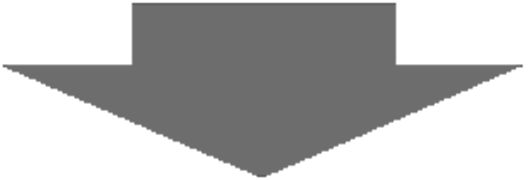

| [音声DL付]究極の英会話（上） 究極の英会話シリーズ | |
| アルク英語出版編集部 | |
| (2014) | |
参照項目から元の箇所に戻るには、お使いのビューワーの仕様に従ってください。または一旦目次を表示し、戻りたい箇所の近くの見出しをタップして戻ってください。
はじめに
Foreword
中学1～2年の文法31項目
×
よく使う単語だけで

大人の英語はやり直せる！
『究極の英会話（上）』は、アルクが編集した学習語彙リスト「標準語彙水準 SVL12000」（Standard Vocabulary List：略称 SVL12000）をベースとする英会話教材です。
本書は、「英語が話せるようになりたい。でも、何から手を付けていいのか分からない」という方はもちろん、「今度こそ、英会話を確実に身に付けたい」と再挑戦を目指す方にも最適です。
「英語が話せない」原因の1つは、「練習量が圧倒的に足りない」こと。しかし、そもそも意味の分からない英文をいくら練習しても、身に付くはずはありません。そこで、本書では次の2つの点を基盤に据えて実力を強化していきます。
1
英会話に不可欠なもの、それは文法力。本書で学習する英文には、中学1年～中学2年前半で習う英文法を使用しました。
2
音声を使った種々のトレーニングで文法知識を活性化。基本的な構文をきちんと使いこなして、どんどん話せるようになっていきます。
まずは、1つの英文を何度でも口に出してみてください。考え込まずに英語が出てくるようになったら、しめたもの！

簡単な英語でも、相手に伝えられることはたくさんあります。本書での練習を通じて、英語を話すための基礎体力を身に付けてください。
本書の内容は『究極の英語スピーキング Vol. 1』『究極の英語スピーキング Vol. 2』（いずれも2009年初版発行）のテキストおよび音声を加筆修正・再編集したものです。
もっと学びたい人は『究極の英会話（下）』へ！
下巻は Unit 32 から始まります。上巻に引き続き、よりハイレベルな構文に挑戦。中学2年の後半から、中学卒業までの文法をカバーします。
中学2年レベル──休み明けからの本気
Unit
32 比較級
33 最上級
34 as＋原級＋as
35 比較級／最上級の疑問文
36 疑問詞＋比較級／最上級
37 There is とThere are
38 不定詞の形容詞的用法
39 不定詞の副詞的用法①（目的）
40 不定詞の副詞的用法②（理由・根拠）
41 不定詞の名詞的用法
42 too ～ to do の形
43 動名詞
44 等位接続詞（and/but/or/so）
45 条件を表す接続詞 if
46 時を限定する接続詞 when
47 理由を表す接続詞 because
48 名詞節を導く接続詞 that
中学3年レベル──涙の卒業まで！
49 so＋接続詞 that
50 受け身
51 受け身の否定文・疑問文
52 現在完了形の継続用法
53 継続用法の疑問文
54 現在完了形の経験用法／完了・結果用法
55 経験用法／完了・結果用法の疑問文
56 現在分詞
57 過去分詞
58 間接疑問
59 関係代名詞の主格
60 関係代名詞の目的格
61 知覚動詞
62 使役動詞
63 感嘆文
無料ダウンロード音声について
本書に対応する音声は、すべて無料でダウンロードしていただけます。下記URLにアクセスし、『究極の英会話（上） 中学1～2年レベル英文法100パーセント攻略』を選択、フォームに必要事項をご記入の上送信いただくと、ダウンロードページURLのご案内メールが届きます。
まずはこちらへアクセス！
ALC Download Center
ダウンロードセンター
http://www.alc.co.jp/dl/
（2014年12月時点の情報。今後詳細が変更になる可能性があります）
ダウンロードした音声には「究極の英会話（上） 001-216」が収録されています。
ダウンロードした音声ファイルはiTunesなどの音声再生ソフトで取りこんでご利用ください。音声再生ソフトでのファイルの取り込み方法や携帯音楽プレーヤーでの利用方法については、ソフトやプレーヤーに付属するマニュアルでご確認ください。
取り込んだ音声ファイルは、音声再生ソフトで次のように表示されます。
出版社名（アーティスト名）：「ALC PRESS INC.」と表示。
書名（アルバム名）：『究極の英会話（上）』
トラック名（曲名）：どの学習に必要な音声なのかがすぐわかるよう、トラック名は、[001_Unit01]のように曲名が表示されます。
本書では、ダウンロードした音声を使用する部分は
DL001_Unit01 のように、ダウンロードした音声と同じトラック名で表示しています。該当のトラックを再生して学習してください。
この本の使い方
how to use it
本書では、ユニットごとにテーマとなる文法が設定されています。1つの文法を使ってさまざまな文を話す練習を行うとともに、口頭で素早く応答する（クイック・レスポンス）トレーニングを通して、会話の実践力を培います。
Step1 考える
●日本語で書かれた3つの文を、英語でどう言うか考えましょう。太文字で示された箇所には特に注意。
●すぐにページをめくらず、ヒントを参考に最低1分間はじっくり考えてみましょう。
Step2 確認する
●答え合わせの後で音声を再生し、「日本語⇒（ポーズ）⇒英語⇒（ポーズ）」の（ポーズ）で英語を音読（口に出して読むこと）しましょう。
DL001_Unit01
↑ ダウンロードした音声のトラック番号はこのマークを参照
↑ このマークの付いている箇所はテキストを見て練習します
切り札はココ！
↑ このユニットで学ぶテーマ文法はこのマークをチェック
Step3 文法を理解する
●テーマ文法についての解説を読み、文の仕組みを把握しましょう。「どう使う？」も参考に、文の構造を頭に入れましょう。
Step4 繰り返し音読する
●テーマ文法を使用した10個の文（または短い対話）を取り上げます。
●音声を再生し、「日本語⇒（ポーズ）⇒英語⇒（ポーズ）」の（ポーズ）で英語を音読しましょう。目標回数は①～⑩を通しで10回です。
■エクセサイズモードで制限時間内に言えなかったら復習しましょう。
↑必ず本を伏せ、耳だけを頼りに取り組んでください
Step5 シャッフルで定着度を試す
●「エクセサイズモード」で音声を再生すると、Step 4 の「日本語⇒（ポーズ）⇒英語」がシャッフルされて（順不同に）流れます。
●（ポーズ）で直前の日本語を英語に直して口頭で答えましょう。次の英語が聞こえるまでが制限時間。音声を途中で止めてはいけません。
Step6 会話を音読する
●テーマ文法を含む会話※を、まずは通しで聞きましょう。
●次のトラックでは、1文ごとに入っている（ポーズ）で英文を音読しましょう（日本語の音声はありません）。
※この会話は「会話編」からテーマ文法を含む箇所を引用したものです。「会話編」には会話全文（英語のみ音声あり）が掲載されています。
↑必ず本を伏せ、耳だけを頼りに取り組んでください
Step7 ロールプレイで即答する
●音声を再生すると、Step 6 の会話音声が流れます。その際、一部が日本語で聞こえます（日本語は会話の冒頭に入ることもあります）。
●日本語をすぐに英語に直して口頭で答えましょう。次の英語が聞こえるまでが制限時間。音声を途中で止めてはいけません。
品詞早分かり一覧
parts of speech
この本には、英語の文の構造を説明する上で品詞について言及した箇所があります。品詞とは、「1つ1つの単語が持つ役割」を基にグループ分けした際の、グループ名に当たります。ここでは、代表的な品詞が持つ役割を、単語の例とともに紹介します。
動詞
［役割］動作や状態を表す
［例］laugh（笑う）、order（注文する）、want（欲する）
名詞
［役割］人や物の名前を表す
［例］airport（空港）、cousin（いとこ）、Monday（月曜日）
形容詞
［役割］人や物の様子を表す
［例］beautiful（美しい）、healthy（健康な）、nice（すてきな）
副詞
［役割］動詞や形容詞、ほかの副詞、あるいは文全体を説明する
［例］here（ここで）、today（今日）、hard（熱心に）
代名詞
［役割］名詞の代わりをする
［例］I（私）、your（あなたの）、that（あれ）
冠詞
［役割］名詞の前に置かれ、特定性などの意味を加える
［例］a/an、the
前置詞
［役割］名詞の前に置かれ、時や場所、手段などを表す
［例］at［時刻・地点］、on［特定日・接触］、by［期限・近接・手段］
接続詞
［役割］単語どうし、句どうし、節や文どうし※を結び付ける
［例］and（そして）、because（なぜなら）、or（あるいは）
※句は2つ以上の単語のまとまりで、品詞に相当する働きを持つ（主語＋動詞は含まない）。節は2つ以上の単語のまとまりで、主語＋動詞を含む。
助動詞
［役割］動詞に添えて使われ、「～できる」「～だろう」などの意味を加える
［例］can（～できる）、will（～でしょう）、may（～してもよい）
疑問詞
［役割］「何？」「誰？」「いつ？」などを尋ねる際に使われ、代名詞・形容詞などの役割を果たす
［例］what（何）、who（誰）、when（いつ）、where（どこ）
花の
中学1年レベル
さあ、学習スタートです！
覚えていますか、英語を始めたあの頃を。
be動詞、疑問詞、進行形......
簡単そうでも、会話となれば話は別。
なかなか口から出ないものなんです。
1つ1つじっくりおさらいしましょう。
Unit01
レベル：中1

Q：コレ英語で言える？
次の日本語を英語で何て言う？ 太文字に気をつけて、1分間、考えよう。自信の程を□から選ぼう！
1. ここは私の会社です。
□楽勝です
□なんとか
□ムリムリ
2. 彼女の兄たちはとても背が高いです。
□楽勝です
□なんとか
□ムリムリ
3. 私の事務所は3階にあります。
□楽勝です
□なんとか
□ムリムリ
ヒント
たぶん初めて習った英語の動詞だよ。
DL001_Unit01
A：こう言おう
音声を再生し、「日本語⇒（ポーズ）⇒英語⇒（ポーズ）」の（ポーズ）で英語を音読しよう。
1. ここは私の会社です。
Thisis my office.
2. 彼女の兄たちはとても背が高いです。
Her brothersare very tall.
3. 私の事務所は3階にあります。
My officeis on the third floor.
切り札はココ！
be動詞の現在形
解説
「です／います／あります」は「主語＋be動詞＋○○」を使う！
「（主語）は○○です」という意味を表すには、This is my office.やHer brothers are very tall.のように、「主語＋be動詞＋○○」の文を使います。また、My office is on the third floor.やI am in Tokyo.（私は東京にいます）のように、be動詞の後ろが名詞（句）や形容詞（句）ではない場合は、「（主語）は○○にいます／あります」などの意味も表します。
主語によって形が変わるbe動詞
be動詞は、主語の人称や数によって形が変わります（下の表参照）。主語が単数のときは、一人称（ I ）ならam、二人称（You）ならare、三人称（He/SheやHitomiなど）ならisを使います。ただし、主語が複数のときは常にareを使います。それぞれ、I'mやYou're、He's、They'reのように省略されることもあります。
どう使う？
| 主語 | be動詞 | 主語を説明する語句 |
| ↓ | ↓ | ↓ |
| I | am | happy. |
| You | are | my friend. |
| This | is | my office. |
| They | are | in London. |
DL002_Unit01
音読モード
音声を再生し、「日本語⇒（ポーズ）⇒英語⇒（ポーズ）」の（ポーズ）で英語を音読しよう。
① 彼らは私の友人です。
They are my friends.
② 彼女は私たちのチームの一員です。
She is a member of our team.
③ ジュンコは今、ロンドンにいます。
Junko is in London now.
④ あれはジェシーの机です。
That's Jessy's desk.
⑤ 弊社の営業時間は9時から6時です。
Our office hours are from nine to six.
⑥ 明日は私の会社では休日です。
Tomorrow is a holiday at our company.
⑦ 9月の第1月曜日は、アメリカの労働者の日です。
The first Monday in September is Labor Day in the United States.
⑧（電話で）ABC社の川村正樹と申します。
This is Masaki Kawamura of ABC Company.
⑨ このたびは申し訳ございません。
We're sorry about this mistake.
⑩ お会いできてうれしいです。
I'm happy to see you.
注⑤「営業時間」 office hours ⑦「9月の第1月曜日」 the first Monday in September 「労働者の日」 Labor Day ⑧電話で「○○社の××です」は、This is ×× of ○○. が定型表現 ⑨日本語には「何について」がなくても、英語ではthis mistake（この間違い）などの語句を補うと自然。「〜について申し訳なく思う」はbe sorry about 〜 や be sorry for 〜 ⑩「〜してうれしい」 be happy to do
DL003_Unit01
エクセサイズモード
日本語を英語に直して言ってみよう。
音声を途中で止めてはいけない。
DL004_Unit01
DL005_Unit01
会話モード
会話をまず通しで聞こう。次のトラックではポーズで英語を繰り返そう。（会話全文はこちら 参照）
Woman: Please help mecarry these boxes to the third floor.
these boxes to the third floor.
Man: Sure. Are the boxes heavy?
W:No, they are all light. There are just too many.
M: I see. We need more help.
女：これらの箱を3階まで運ぶのを手伝って。
男：いいよ。箱は重いかい？
女：いいえ、全部軽いのよ。ただ、たくさんありすぎて。
男：そうか。もっと手伝いが必要だね。
help ～ do は「（人）が...するのを手伝う」。
DL006_Unit01
ロールプレイ
日本語を英語に直して言ってみよう。
音声を途中で止めてはいけない。
□ 英語ですぐに言えた ⇒ おつかれさま！ 次の Unit も頑張ろう。
□ 英語で言えなかった ⇒「会話モード」からやり直し。
Unit02
レベル：中1
Q：コレ英語で言える？
次の日本語を英語で何て言う？ 太文字に気をつけて、1分間、考えよう。自信の程を□から選ぼう！
1. 私はアルク大学の学生でした。
□楽勝です
□なんとか
□ムリムリ
2. その本は面白かったです。
□楽勝です
□なんとか
□ムリムリ
3. 彼の書類は机の上にありました。
□楽勝です
□なんとか
□ムリムリ
ヒント
今じゃなくって、前のことだよね。
DL007_Unit02
A：こう言おう
音声を再生し、ポーズで英語を音読しよう。
1. 私はアルク大学の学生でした。
Iwas a student of ALC College.
2. その本は面白かったです。
The bookwas interesting.
3. 彼の書類は机の上にありました。
His paperswere on the desk.
切り札はココ！
be動詞の過去形
解説
「でした／いました／ありました」はbe動詞を過去形に！
「〜でした」「〜がありました」と過去の話をしたい場合は、Unit 01で扱った「主語＋be動詞＋○○」のbe動詞を過去形のwasかwereにします。be動詞の後ろがa student of ALC Collegeやinterestingのように名詞（句）や形容詞（句）ならば「（主語）は○○でした」という意味を表します。on the desk（机の上に）のようにbe動詞の後ろが名詞（句）や形容詞（句）ではない場合は、「（主語）は○○にいました／ありました」といった意味になります。
過去を表すbe動詞はwasとwereの2つだけ
be動詞の過去形はwasとwereの2つだけです。現在形でamとisを使う場合はwasを、areの場合はwereを使います。人称は関係ありません。また、過去形の文ではyesterday（昨日）やlast night（昨晩）など、過去を表す言葉がよく一緒に使われます。
どう使う？
| 主語 | be動詞の過去形 | 主語を説明する語句 |
| ↓ | ↓ | ↓ |
| I | was | a singer. |
| You | were | busy. |
| He/She | was | on TV. |
| His papers | were | on the desk. |
DL008_Unit02
音読モード
音声を再生し、ポーズで英語を音読しよう。
① 私は昨日、忙しかったんです。
I was busy yesterday.
② 私は失業中でした。
I was out of a job.
③ マサヨシは昨晩テレビに出ていました。
Masayoshi was on TV last night.
④ 彼は営業部門の責任者でした。
He was the head of sales.
⑤ 彼らはイタリアの有名な歌手でした。
They were famous singers in Italy.
⑥ 今朝は雨がひどかったです。
The rain was heavy this morning.
⑦ 会議は1時間で終わりました。
The meeting was over in an hour.
⑧ 昨年、それらの会社は黒字でした。
Those companies were in the black last year.
⑨ 彼のアイデアはとても面白いものでした。
His idea was very interesting.
⑩ お会いできて良かったです。
It was nice meeting you.
注②「失業中である」 be out of a job ③「テレビに出る」 be on TV ④「営業部門」 sales 「〜の責任者」 the head of 〜 ⑤「イタリアの有名な歌手」はfamous singers in Italy。Italian singersとすると「イタリア人の歌手」になるので注意 ⑥主語は「雨」。「雨がひどい」はthe rain is heavy ⑦「終わる」 be over ⑧「黒字で」 in the black ちなみに「赤字で」はin the red ⑩「〜できて良かった」はIt was nice -ingを使う
DL009_Unit02
エクセサイズモード
日本語を英語に直して言ってみよう。
音声を途中で止めてはいけない。
DL010_Unit02
DL011_Unit02
会話モード
会話をまず通しで聞こう。次のトラックではポーズで英語を繰り返そう。（会話全文はこちら 参照）
M: Were you in Brandy's Bar last night? I thought I saw you.
W: Yes, I was! Why didn't you come over and talk to me?
M:You were with someone. I didn't want to bother you. Who were you with?
男：ゆうべ、ブランディーズ・バーにいた？ 君を見た気がする。
女：ええ、いたわ！ どうして声を掛けてくれなかったの？
男：君は誰かと一緒だったよ。邪魔したくなかったんだ。一緒にいたのは誰？
DL012_Unit02
ロールプレイ
日本語を英語に直して言ってみよう。
音声を途中で止めてはいけない。
□ 英語ですぐに言えた ⇒ おつかれさま！ 次の Unit も頑張ろう。
□ 英語で言えなかった ⇒「会話モード」からやり直し。
Unit03
レベル：中1
Q：コレ英語で言える？
次の日本語を英語で何て言う？ 太文字に気をつけて、1分間、考えよう。自信の程を□から選ぼう！
1. 彼は学生ではありません。
□楽勝です
□なんとか
□ムリムリ
2. 私は英語が得意ではありません。
□楽勝です
□なんとか
□ムリムリ
3. チケットは安くありませんでした。
□楽勝です
□なんとか
□ムリムリ
ヒント
とても短いけど、すごく大事な1語。
DL013_Unit03
A：こう言おう
音声を再生し、ポーズで英語を音読しよう。
1. 彼は学生ではありません。
Heisnot a student.
2. 私は英語が得意ではありません。
I'mnot good at English.
3. チケットは安くありませんでした。
The ticketwasn't cheap.
切り札はココ！
be動詞の否定文
解説
否定するにはnotを使う
be動詞を使った文で、「〜です／ます」に当たる部分を否定したい場合は、be動詞の直後にnotを入れ、「主語＋be動詞＋not＋○○」の形にすると、「（主語）は○○ではありません」という意味を表せます。
「be動詞＋not」の短縮形
否定文を作るときには、「be動詞＋not」は短縮して表すこともできます（下の表参照）。「彼は学生ではありません」ならば、He's not a student.と言うこともできれば、He isn't a student.と言うこともできるのです。省かれる文字の代わりが「'」です。ただし､I am notだけはI amn'tのようには短縮できず、必ずI'm notとなる点に注意しましょう。
どう使う？
| 主語 | be動詞＋not | 主語を説明する語句 |
| ↓ | ↓ | ↓ |
| I | amnot (I'm not) | a singer. |
| You | arenot (aren't) | young. |
| He | isnot (isn't) | a student. |
| They | werenot (weren't) | in Tokyo. |
DL014_Unit03
音読モード
音声を再生し、ポーズで英語を音読しよう。
① あなたはもう若くはありません。
You are not young any more.
② トムは東京にいません。
Tom is not in Tokyo.
③ 彼の仕事はあまり良くありませんでした。
His job was not very good.
④ 彼らは同じ部署にはいませんでした。
They were not in the same department.
⑤ それはあなたがやるべきことではありません。
That's not your business.
⑥ それは簡単ではありません。
It's not easy.
⑦ 店はまだ開いていません。
The shop isn't open yet.
⑧ 私はそんなに疲れていません。
I'm not so tired.
⑨ 彼女は歌手ではありませんでした。
She wasn't a singer.
⑩ 彼らは会議に間に合いませんでした。
They weren't in time for the meeting.
注①「もう〜ではない」 not 〜 any more ③「あまり〜でない」 not very 〜 ④「部署」 department ⑤「あなたがやるべきこと」 your business ⑦「まだ」は文末にyetを付ける ⑧主語が I なので短縮形に注意。「そんなに」はtiredの前にsoを置いて表す ⑩「〜に間に合う」 be in time for 〜
DL015_Unit03
エクセサイズモード
日本語を英語に直して言ってみよう。
音声を途中で止めてはいけない。
DL016_Unit03
DL017_Unit03
会話モード
会話をまず通しで聞こう。次のトラックではポーズで英語を繰り返そう。（会話全文はこちら 参照）
W:Your son was not in piano class yesterday. I hope he wasn't sick.
M: No, he wasn't sick. He wasn't able to practice all week, and he thought he wasn't any goodat playing his piece.
女：息子さんは昨日、ピアノの教室にいらっしゃいませんでした。ご病気でなかったならいいのですが。
男：いいえ、病気ではありませんでした。1週間ずっと練習できず、曲が少しもうまく弾けないと思ったんです。
be good at ～（～が上手で）に not any が付き、「少しも上手ではない」という意味になる。
DL018_Unit03
ロールプレイ
日本語を英語に直して言ってみよう。
音声を途中で止めてはいけない。
□ 英語ですぐに言えた ⇒ おつかれさま！ 次の Unit も頑張ろう。
□ 英語で言えなかった ⇒「会話モード」からやり直し。
Unit04
レベル：中1
Q：コレ英語で言える？
次の日本語を英語で何て言う？ 太文字に気をつけて、1分間、考えよう。自信の程を□から選ぼう！
1. 彼があなたのおじいさんですか。
□楽勝です
□なんとか
□ムリムリ
2. 彼は仕事に満足していましたか。
□楽勝です
□なんとか
□ムリムリ
3. 怖くないんですか。
□楽勝です
□なんとか
□ムリムリ
ヒント
どこかの順番が変わるんだよ。
DL019_Unit04
A：こう言おう
音声を再生し、ポーズで英語を音読しよう。
1. 彼があなたのおじいさんですか。
Is he your grandfather?
2. 彼は仕事に満足していましたか。
Was he happy with his job?
3. 怖くないんですか。
Aren't youafraid?
切り札はココ！
be動詞の疑問文
解説
be動詞を前に出して疑問文に！
「（主語）は○○ですか」と尋ねる場合、「be動詞＋主語＋○○？」のように、主語とbe動詞の順を逆に（倒置）します。Is he your grandfather?という質問には、肯定ならYes, he is.、否定ならNo, he isn't.のように答えるのが基本です。過去形の場合も同様です。「〜ではないんですか」という否定疑問文の場合は、「be動詞＋not」を先頭に出します。否定疑問文についてはこちらでも説明します。
「〜の」を表すにはmy、your、theirなどを使う
これまでにも何回か出てきていますが、「私の」や「あなたの」「彼らの」という意味を表すmyやyour、theirなどを人称代名詞（所有格）と呼びます。「所有格＋名詞」で「〜の名詞」という意味を表します。以下のようにセットで覚えておきましょう。
I（私）→my（私の）
you（あなた・あなたがた）→your（あなたの・あなたがたの）
he（彼）→his（彼の）／she（彼女）→her（彼女の）
it（それ）→its（それの）
we（私たち）→our（私たちの）
they（彼ら・彼女ら・それら）→their（彼らの・彼女らの・それらの）
どう使う？
| be動詞 （＋not） |
主語 | 主語を説明する語句 |
| ↓ | ↓ | ↓ |
| Is | he | your grandfather? |
| Are | you | at the station now? |
| Isn't | the job | dangerous? |
| Wasn't | your home | near the office? |
DL020_Unit04
音読モード
音声を再生し、ポーズで英語を音読しよう。
① これは売り物ですか。
⇒はい、売り物です。／いいえ、売り物ではありません。
Is this for sale?
⇒ Yes, it is. / No, it isn't.
② あなたは今、駅にいますか。
⇒はい、います。／いいえ、いません。
Are you at the station now?
⇒ Yes, I am. / No, I'm not.
③ あなたのオフィスは十分広いですか。
⇒はい、十分に広いです。／いいえ、十分には広くありません。
Is your office large enough?
⇒ Yes, it is. / No, it isn't.
④ あれはコーヒーカップですか、ティーカップですか。
⇒これはコーヒーカップです。／これはティーカップです。
Is that a coffee cup or a tea cup?
⇒ It's a coffee cup. / It's a tea cup.
⑤ 彼女は空港にいましたか。
⇒はい、いました。／いいえ、いませんでした。
Was she at the airport?
⇒ Yes, she was. / No, she wasn't.
⑥ 彼らは授業に間に合いましたか。
⇒はい、間に合いました。／いいえ、間に合いませんでした。
Were they in time for the class?
⇒ Yes, they were. / No, they weren't.
⑦ 彼らの給料はあなたと同じレベルでしたか。
⇒はい、同じでした。／いいえ、同じではありませんでした。
Was their pay on the same level as yours?
⇒ Yes, it was. / No, it wasn't.
⑧ その仕事は危険ではないんですか。
⇒いいえ、危険です。／はい、危険ではありません。
Isn't the job dangerous?
⇒ Yes, it is. / No, it's not.
⑨ 彼は音楽家じゃないんですか。
⇒いいえ、音楽家です。／はい、音楽家ではありません。
Isn't he a musician?
⇒ Yes, he is. / No, he isn't.
⑩ あなたの家は会社の近くではなかったですか。
⇒いいえ、近くでした。／はい、近くではありませんでした。
Wasn't your home near the office?
⇒ Yes, it was. / No, it wasn't.
注①「売り物で」はfor sale。「いいえ」はNo, it isn't.とNo, it's not.のどちらでもOK ③「十分広い」 large enough ④「AそれともB」はA or B？となる。Yes/Noでは答えられないので、It's 〜 を使ってA、Bどちらなのかを述べる ⑦「〜と同じレベルで」 on the same level as 〜 ⑩「会社の近くで」 near the office
DL021_Unit04
エクセサイズモード
日本語を英語に直して言ってみよう。
音声を途中で止めてはいけない。
DL022_Unit04
DL023_Unit04
会話モード
会話をまず通しで聞こう。次のトラックではポーズで英語を繰り返そう。（会話全文はこちら 参照）
M: Jessy, you're working very hard today. Let's have abreak.
W: OK. I need some fresh air. Aren't you hungry?
M: Yes, a little. Imissed lunch.
lunch.
W: That's not good.
男：ジェシー、今日は一生懸命働いてるね。休憩にしようよ。
女：そうね。新鮮な空気を吸いたいわ。おなかすいてない？
男：うん、ちょっと。昼食を食べ損ねたんだ。
女：それは良くないわ。
Let's 〜 は「〜しましょう」と相手を誘う表現。
miss は「（食事）を抜かす、食べ損なう」。
DL024_Unit04
ロールプレイ
日本語を英語に直して言ってみよう。
音声を途中で止めてはいけない。
□ 英語ですぐに言えた ⇒ おつかれさま！ 次の Unit も頑張ろう。
□ 英語で言えなかった ⇒「会話モード」からやり直し。
Unit05
レベル：中1
Q：コレ英語で言える？
次の日本語を英語で何て言う？ 太文字に気をつけて、1分間、考えよう。自信の程を□から選ぼう！
1. 私はABC社で働いています。
□楽勝です
□なんとか
□ムリムリ
2. 私どもは自動車を製造しています。
□楽勝です
□なんとか
□ムリムリ
3. 鈴木さんはヒルズホテルの近くに住んでいます。
□楽勝です
□なんとか
□ムリムリ
ヒント
「製造する」は mで始まる単語。
DL025_Unit05
A：こう言おう
音声を再生し、ポーズで英語を音読しよう。
1. 私はABC社で働いています。
Iwork for ABC Company.
2. 私どもは自動車を製造しています。
Wemake cars.
3. 鈴木さんはヒルズホテルの近くに住んでいます。
Mr. Suzukilives near the Hills Hotel.
切り札はココ！
一般動詞の現在形
解説
具体的な動作や状態を表すには一般動詞！
「（主語）は○○します」と具体的な動作や状態を表したい場合、「主語＋一般動詞」を使います。「一般動詞」とは、be動詞以外の動詞すべてを指します。「〜を」と目的語が後に続く一般動詞を「他動詞」、目的語が続かない一般動詞を「自動詞」と呼びます。
主語によって形が変わる一般動詞
一人称（ I とWe）と二人称（You）、三人称複数（They）が主語の場合、主語の後の一般動詞は原形を使います。しかし、三人称単数（HeやMr. Suzukiなど）が主語の場合、一般動詞の語尾に三人称単数・現在を表す三単現の-sを付けます。通常は動詞の原形の語尾に-sを、語尾が-s、-x、-ch、-sh、〈子音字＋o〉のときは-esを、語尾が〈子音字＋y〉のときは-yを-i-に変えて-esを付けます。doとhaveは主語が三人称単数ではdoesとhasになります。
どう使う？
| 主語 | 一般動詞（動作・状態） |
| ↓ | ↓ |
| I | work for ABC Company.（働く：自動詞） |
| The restaurant | closes at midnight.（閉まる：自動詞） |
| She | teaches that class.（～を教える：他動詞） |
| We | make cars.（～を作る：他動詞） |
DL026_Unit05
音読モード
音声を再生し、ポーズで英語を音読しよう。
① 私はテレビで毎日ニュースを見ます。
I watch the news on TV every day.
② 私は北海道の両親に毎週電話をします。
I call my parents in Hokkaido every week.
③ 私どもは、このワインを日本へ出荷します。
We ship this wine to Japan.
④ 私の兄がその件について質問があります。
My brother has a question about that.
⑤ 彼女は英語でビジネスレターを書きます。
She writes business letters in English.
⑥ 彼はいつも7時に出社します。
He always comes to the office at seven.
⑦ 矢島さんがあのクラスを教えています。
Ms. Yajima teaches that class.
⑧ 私たちの部署では、毎週月曜日に会議を開きます。
Our department holds a meeting every Monday.
⑨ 私たちは10時から夜の8時まで働きます。
We work from ten to eight in the evening.
⑩ そのレストランは、土曜日は夜中の12時に閉店します。
The restaurant closes at midnight on Saturdays.
注②「〜に電話をする」 call ③「〜を出荷する」 ship ④「質問がある」はhave a question。haveの三単現はhasになることを忘れずに ⑥「いつも」 always 「出社する」 come to the office ⑧「会議を開く」 hold a meeting ⑩「夜中の12時」 midnight
DL027_Unit05
エクセサイズモード
日本語を英語に直して言ってみよう。
音声を途中で止めてはいけない。
DL028_Unit05
DL029_Unit05
会話モード
会話をまず通しで聞こう。次のトラックではポーズで英語を繰り返そう。（会話全文はこちら 参照）
W: Can I helpyou?
M: Oh, yes. I want a coat for my daughter.
W: OK. What color does she like?
M:She likes red or pink.
W: I see.
女：何かお探しですか。
男：ええ。うちの娘用のコートが欲しいんです。
女：かしこまりました。お子さんは何色がお好きですか。
男：赤かピンクが好きですね。
女：承知しました。
Can (May) I help you? は店員が接客時に使う定番表現。
DL030_Unit05
ロールプレイ
日本語を英語に直して言ってみよう。
音声を途中で止めてはいけない。
□ 英語ですぐに言えた ⇒ おつかれさま！ 次の Unit も頑張ろう。
□ 英語で言えなかった ⇒「会話モード」からやり直し。
Unit06
レベル：中1
Q：コレ英語で言える？
次の日本語を英語で何て言う？ 太文字に気をつけて、1分間、考えよう。自信の程を□から選ぼう！
1. 私はABC社で働きました。
□楽勝です
□なんとか
□ムリムリ
2. 会社は計画を変更しました。
□楽勝です
□なんとか
□ムリムリ
3. 私たちは昨日、会議を行いました。
□楽勝です
□なんとか
□ムリムリ
ヒント
「（会議を）行う」は hold。では、「行った」は？
DL031_Unit06
A：こう言おう
音声を再生し、ポーズで英語を音読しよう。
1. 私はABC社で働きました。
Iworked for ABC Company.
2. 会社は計画を変更しました。
The companychanged its plan.
3. 私たちは昨日、会議を行いました。
Weheld a meeting yesterday.
切り札はココ！
一般動詞の過去形
解説
過去の話は動詞を過去形にすればOK
過去の話をする際に使うのは「主語＋一般動詞の過去形」の形。I work for ABC Company.は「私はABC社で働いています」という意味ですが、workをworkedと過去形にすれば「私はABC社で働きました」と過去の動作や状態を表せます。
規則変化する動詞と不規則変化する動詞がある！
一般動詞には、動詞の原形に-edや-dを付けたり、語尾の-yを-i-に変えて-edを付けたりして過去形にする規則動詞（下の表参照）と、不規則に変化する不規則動詞（do-did、think-thought、make-madeなど）があります。不規則動詞は1つ1つ覚えるしかありません。過去形は、主語が何であっても同じ形を使います。
どう使う？
| 主語 | 一般動詞の過去形 |
| ↓ | ↓ |
| I | worked for ABC Company.（規則変化） |
| The restaurant | closed at midnight.（規則変化） |
| She | taught that class.（不規則変化） |
| We | made cars.（不規則変化） |
DL032_Unit06
音読モード
音声を再生し、ポーズで英語を音読しよう。
① 私は電話に出ました。
I answered the telephone.
② 船は定刻に到着しました。
The ship arrived on time.
③ 私どもは、そちらに本を注文しました。
We ordered books from you.
④ 彼らは値段について話をしました。
They talked about the price.
⑤ 当社は先月、新宿へ事務所を移転しました。
We moved office to Shinjuku last month.
⑥ 私どもは弊社の機械を船便で送りました。
We sent our machines by sea.
⑦ 佐藤さんは中国へ出張しました。
Ms. Sato went on a business trip to China.
⑧ 私は急いで昼食を食べました。
I quickly ate my lunch.
⑨ 彼女は母親からの手紙を読みました。
She read the letter from her mother.
⑩ 私は銀行にお金を預けました。
I put my money in a bank.
注①「電話に出る」 answer the telephone ②「定刻に」 on time ③「〜に...を注文する」order ... from 〜 ④「〜について話す」 talk about 〜 ⑤「〜を移転する」 move ⑥「〜を船便で送る」はsend 〜 by sea。不規則変化に注意 ⑦「出張する」 go on a business trip ⑧「〜を食べる」はeat、過去形はate ⑨read（〜を読む）の過去形はread[réd] ⑩「銀行にお金を預ける」 put one's money in a bank
DL033_Unit06
エクセサイズモード
日本語を英語に直して言ってみよう。
音声を途中で止めてはいけない。
DL034_Unit06
DL035_Unit06
会話モード
会話をまず通しで聞こう。次のトラックではポーズで英語を繰り返そう。（会話全文はこちら 参照）
M: Where did you go on your summervacation?
W: I went to Hokkaido.
M: Where in Hokkaido did you go?
W: I went to Furano.
男：この夏休みにはどこに行きましたか。
女：北海道へ行きました。
男：北海道のどこに行ったんですか。
女：富良野へ行きましたよ。
on one's summer vacation は「（人）の夏休み中に」。
DL036_Unit06
ロールプレイ
日本語を英語に直して言ってみよう。
音声を途中で止めてはいけない。
□ 英語ですぐに言えた ⇒ おつかれさま！ 次の Unit も頑張ろう。
□ 英語で言えなかった ⇒「会話モード」からやり直し。
Unit07
レベル：中1
Q：コレ英語で言える？
次の日本語を英語で何て言う？ 太文字に気をつけて、1分間、考えよう。自信の程を□から選ぼう！
1. 私どもにはあまり時間がありません。
□楽勝です
□なんとか
□ムリムリ
2. この電車は大阪へは行きません。
□楽勝です
□なんとか
□ムリムリ
3. キャシーはあの本を読みませんでした。
□楽勝です
□なんとか
□ムリムリ
ヒント
be動詞の否定文でも使ったよ。
DL037_Unit07
A：こう言おう
音声を再生し、ポーズで英語を音読しよう。
1. 私どもにはあまり時間がありません。
Wedon'thave much time.
2. この電車は大阪へは行きません。
This traindoesn'tgo to Osaka.
3. キャシーはあの本を読みませんでした。
Cathydidn'tread that book.
切り札はココ！
一般動詞の否定文
解説
否定のときは「do/does＋not」を付けて
一般動詞を使った英文を「（主語）は○○しません」と否定文にするときは、動詞を原形にし、その前に「do/does＋not」を付けます。これらはしばしばdon'tやdoesn'tのように短縮して使います。例文では、動詞haveの前にdon'tを、goの前にdoesn'tを付けています。doesn'tを使うのは、主語が三人称単数（こちら参照）のときです。
過去のことを否定するには「did＋not」を使う
一般動詞の過去形を否定文にする場合は、do/doesの代わりにdidを使います。主語が何であってもdidでOKです。文の作り方は現在形と同じ。動詞を原形にし、その前に「did＋not」を付けます。たいていはdidn'tのように短縮して使います。
どう使う？
| 主語 | do not＋一般動詞の原形 |
| ↓ | ↓ |
| Mr. Bush | doesn'tcount on me. |
| We | don'thave much time. |
| I | didn'tmean that. |
DL038_Unit07
音読モード
音声を再生し、ポーズで英語を音読しよう。
① 私はそうは思いません。
I don't think so.
② 私どもには、もう新しい機械は必要ありません。
We don't need new machines any more.
③ 彼は私を頼っていません。
He doesn't count on me.
④ あのバイオリンにはケースがありません。
That violin doesn't have a case.
⑤ そういう意味ではありませんでした。
I didn't mean that.
⑥ 私たちは家へ帰る途中、誰にも会いませんでした。
We didn't see anyone on our way home.
⑦ 彼らは当社の手紙に返事をくれませんでした。
They didn't answer our letter.
⑧ ブッシュさんは会議に来ませんでした。
Mr. Bush didn't come to the meeting.
⑨ あの女の子たちは、宿題をやりませんでした。
Those girls didn't do their homework.
⑩ 一家は新しい隣人を気に入りませんでした。
The family didn't like their new neighbor.
注②「もう〜は必要ない」 don't need 〜 any more ③「〜を頼る」 count on 〜 ⑤「〜を意味する」 mean ⑥「家へ帰る途中」 on one's way home 「誰にも会わなかった」 didn't see anyone ⑦「〜に返事をする」 answer ⑨「宿題をやる」 do one's homework ⑩「〜を気に入る」はlikeが使える。「隣人」はneighbor
DL039_Unit07
エクセサイズモード
日本語を英語に直して言ってみよう。
音声を途中で止めてはいけない。
DL040_Unit07
DL041_Unit07
会話モード
会話をまず通しで聞こう。次のトラックではポーズで英語を繰り返そう。（会話全文はこちら 参照）
W: I don't want to go to your family's place for Christmas this year. I didn't have a very good time there last year.
M: You didn't? Don't you want to see all my relatives?
W: No, I don't. I really don't like your cousin Eve.
女：今年のクリスマスはあなたの実家に行きたくない。去年はあそこであまり楽しく過ごせなかったのよ。
男：過ごせなかったって？ 僕の親戚たちの顔は見たくないのかい？
女：うん、見たくないな。あなたのいとこのイブ、ほんと苦手だわ。
DL042_Unit07
ロールプレイ
日本語を英語に直して言ってみよう。
音声を途中で止めてはいけない。
□ 英語ですぐに言えた ⇒ おつかれさま！ 次の Unit も頑張ろう。
□ 英語で言えなかった ⇒「会話モード」からやり直し。
Unit08
レベル：中1
Q：コレ英語で言える？
次の日本語を英語で何て言う？ 太文字に気をつけて、1分間、考えよう。自信の程を□から選ぼう！
1. 彼は自分の仕事が好きですか。
□楽勝です
□なんとか
□ムリムリ
2. 私にお電話をいただきましたか。
□楽勝です
□なんとか
□ムリムリ
3. ゴルフはしませんか。
□楽勝です
□なんとか
□ムリムリ
ヒント
頭に何かが出てくるんだよ。
DL043_Unit08
A：こう言おう
音声を再生し、ポーズで英語を音読しよう。
1. 彼は自分の仕事が好きですか。
Does helike his job?
2. 私にお電話をいただきましたか。
Did youcall me?
3. ゴルフはしませんか。
Don't youplay golf?
切り札はココ！
一般動詞の疑問文
解説
疑問文では文頭にDo/Doesが出現！
一般動詞を使った文を疑問文にする場合も否定文と同様、Do/Doesが出現し、動詞は原形になります。疑問文の場合は、Do/Doesが文頭に出て「Do/Does＋主語＋一般動詞の原形？」の形で、「（主語）は○○しますか」という意味を表します。Doesは主語が三人称単数の場合に使います。なお、答え方は、肯定ならYes, I do.となり、否定ならNo, I don't.のようになります。文頭のDo/Doesにnotを付けると、「（主語）は○○しませんか」という意味の否定疑問文になります。
過去のことを尋ねるにはDidを使う
一般動詞の過去形を疑問文にする場合は、Do/Doesの代わりにDidを使います。主語が何であってもDidです。文の作り方は現在形と同じ。動詞を原形にし、文頭にDidを出します。答え方は、Yes, I did.（はい、しました）やNo, I didn't.（いいえ、しませんでした）のようになります。過去形でも文頭をDidn'tにすれば「（主語）は○○しませんでしたか」という意味の否定疑問文になります。
どう使う？
| Do（＋not） | 主語 | 一般動詞の原形 |
| ↓ | ↓ | ↓ |
| Do | you | like your job? |
| Does | anyone | have any ideas? |
| Didn't | you | call her? |
DL044_Unit08
音読モード
音声を再生し、ポーズで英語を音読しよう。
① あの会社と仕事をしていますか。
⇒はい、しています。／いいえ、していません。
Do you do business with that company?
⇒ Yes, we do. / No, we don't.
② その会社は小型車を製造していますか。
⇒はい、しています。／いいえ、していません。
Does the company make small cars?
⇒ Yes, they do. / No, they don't.
③ どなたか、何かアイデアはありますか。
⇒はい、あります。／いいえ、ありません。
Does anyone have any ideas?
⇒ Yes, I do. / No, I don't.
④ バスは出発しましたか。
⇒はい、しました。／いいえ、していません。
Did the bus leave?
⇒ Yes, it did. / No, it didn't.
⑤ 楽しい週末を過ごしましたか。
⇒はい、過ごしました。／いいえ、過ごしませんでした。
Did you have a nice weekend?
⇒ Yes, I did. / No, I didn't.
⑥ あなたがあの素晴らしいケーキを作ったんですか。
⇒はい、作りました。／いいえ、作っていません。
Did you make that beautiful cake?
⇒ Yes, I did. / No, I didn't.
⑦ 彼女はそれについて何か言っていましたか。
⇒はい、言っていました。／いいえ、言っていませんでした。
Did she say anything about it?
⇒ Yes, she did. / No, she didn't.
⑧ このホテルの部屋にテレビはないんですか。
⇒いいえ、あります。／はい、ありません。
Doesn't this hotel room have a TV?
⇒ Yes, it does. / No, it doesn't.
⑨ 彼女に電話をしなかったんですか。
⇒いいえ、しました。／はい、しませんでした。
Didn't you call her?
⇒ Yes, I did. / No, I didn't.
⑩ 彼らは私どもの手紙を受け取らなかったんですか。
⇒いいえ、受け取りました。／はい、受け取りませんでした。
Didn't they receive our letter?
⇒ Yes, they did. / No, they didn't.
注①「〜と仕事をする」 do business with 〜 ②「小型車」 small cars ③「どなたか」が疑問文の主語の場合はanyoneを使う ⑤「楽しい週末を過ごす」 have a nice weekend ⑥「素晴らしい」 beautiful ⑦疑問文で「〜について何か言う」と言うにはsay anything about 〜 ⑧否定疑問文なので、文頭はDoesn't ⑩「〜を受け取る」 receive
DL045_Unit08
エクセサイズモード
日本語を英語に直して言ってみよう。
音声を途中で止めてはいけない。
DL046_Unit08
DL047_Unit08
会話モード
会話をまず通しで聞こう。次のトラックではポーズで英語を繰り返そう。（会話全文はこちら 参照）
M: What's today's lunch?
W: We have chicken or beef sandwiches.
M:Do the sandwiches have tomatoes in them?
W: Yes, they do.
男：今日のランチは何ですか。
女：チキンかビーフのサンドイッチでございます。
男：サンドイッチにはトマトが入っていますか。
女：はい、入っています。
DL048_Unit08
ロールプレイ
日本語を英語に直して言ってみよう。
音声を途中で止めてはいけない。
□ 英語ですぐに言えた ⇒ おつかれさま！ 次の Unit も頑張ろう。
□ 英語で言えなかった ⇒「会話モード」からやり直し。
Unit09
レベル：中1
Q：コレ英語で言える？
次の日本語を英語で何て言う？ 太文字に気をつけて、1分間、考えよう。自信の程を□から選ぼう！
1. この本は何についてですか。
□楽勝です
□なんとか
□ムリムリ
2. あなたは何が好きですか。
□楽勝です
□なんとか
□ムリムリ
3. あの男性は手に何を持っていますか。
□楽勝です
□なんとか
□ムリムリ
ヒント
Whで始まる言葉がカギ！
DL049_Unit09
A：こう言おう
音声を再生し、ポーズで英語を音読しよう。
1. この本は何についてですか。
What is this book about?
2. あなたは何が好きですか。
What do you like?
3. あの男性は手に何を持っていますか。
What does that man have in his hand?
切り札はココ！
疑問詞のWhat
解説
「何？」はWhatで
「何に／何が／何を」と尋ねる場合、疑問詞のWhatを使います。Whatを使う疑問文には2種類あります。1つ目はbe動詞を使うもので、「何が〜？」や「〜は何？」と尋ねる場合。Whatの直後にbe動詞を続け、What is this book about?やWhat is in this box?（この箱には何が入っていますか）のように使います。2つ目は、「（主語）は何を○○しますか」と尋ねる場合で、これは一般動詞を使い、「What＋do/does/did＋主語になる名詞（句）＋一般動詞の原形？」とします。
Whatの疑問文には、Yes/Noでは答えられない！
Whatを使った疑問文には、「はい／いいえ」では答えられません。具体的な情報を相手に伝える必要があります。「What＋be動詞＋名詞（句）？」の質問には、「名詞（句）＋be動詞＋答え」のように答えます。例えばWhat is this book about?には、This book is about science.（この本は科学についての本です）のように答えます。一方、What do you like?と一般動詞を使った疑問文には、I like Japanese music.（私は日本の音楽が好きです）のように答えます。
どう使う？
| What | be動詞＋主語を説明する語句 |
| ↓ | |
| is this? | |
| was in this box? |
| What | do＋主語＋一般動詞の原形 |
| ↓ | |
| do you do? | |
| did they tell you? |
DL050_Unit09
音読モード
音声を再生し、ポーズで英語を音読しよう。
① これは何ですか。
⇒あなたへのプレゼントです。
What is this?
⇒ It's a present for you.
② あの古い建物は何ですか。
⇒ホテルです。
What is that old building?
⇒ It's a hotel.
③ 会議は何についてでしたか。
⇒新しいゴルフウエアについてでした。
What was the meeting about?
⇒ It was about new golf clothes.
④ この学校の良いところは何ですか。
⇒新しい建物がいいです。
What is good about this school?
⇒ The new buildings are.
⑤ この箱には何が入っていましたか。
⇒リンゴが入っていました。
What was in this box?
⇒ Apples were.
⑥（職業は）何をなさっていますか。
⇒警官として働いています。
What do you do?
⇒ I work as a policeman.
⑦ それは何のように見えますか。
⇒鉛筆のように見えます。
What does it look like?
⇒ It looks like a pencil.
⑧ あなたの店では何を販売していますか。
⇒あらゆる種類の新鮮な肉を販売しています。
What does your shop sell?
⇒ We sell all kinds of fresh meat.
⑨ 彼らはあなたがたに何を話しましたか。
⇒会社の将来について話しました。
What did they tell you?
⇒ They told us about the company's future.
⑩ その時、何を着ていましたか。
⇒赤いシャツと黒いパンツを着ていました。
What did you wear then?
⇒ I wore a red shirt and black pants.
注③過去の出来事について尋ねているので、be動詞を過去形に。「ゴルフウエア」はgolf clothes ⑥職業について尋ねる場合の動詞はdoを使う ⑦「どのように見えるか」を尋ねるときはWhat 〜 look like?を使う ⑧「あらゆる種類の〜」 all kinds of 〜 「新鮮な」 fresh ⑩「その時」は文末にthenを置く
DL051_Unit09
エクセサイズモード
日本語を英語に直して言ってみよう。
音声を途中で止めてはいけない。
DL052_Unit09
DL053_Unit09
会話モード
会話をまず通しで聞こう。次のトラックではポーズで英語を繰り返そう。（会話全文はこちら 参照）
M:What do you think about Tomoaki's proposal?
W: It doesn't sound practical to me.
M: What makes you say that? I think it would be possible.
W: How would we raise the money? It would cost too much.
男：トモアキの提案をどう思う？
女：私には現実的には思えないわね。
男：なんでそう言うの？ 僕は可能だと思うんだけど。
女：どうやって資金を調達するの？ コストが掛かり過ぎるわ。
DL054_Unit09
ロールプレイ
日本語を英語に直して言ってみよう。
音声を途中で止めてはいけない。
□ 英語ですぐに言えた ⇒ おつかれさま！ 次の Unit も頑張ろう。
□ 英語で言えなかった ⇒「会話モード」からやり直し。
Unit10
レベル：中1
Q：コレ英語で言える？
次の日本語を英語で何て言う？ 太文字に気をつけて、1分間、考えよう。自信の程を□から選ぼう！
1. あの男性は誰ですか。
□楽勝です
□なんとか
□ムリムリ
2. あなたの仕事を引き継いだのは誰ですか。
□楽勝です
□なんとか
□ムリムリ
3. あなたは昨日、誰に会いましたか。
□楽勝です
□なんとか
□ムリムリ
ヒント
Wh で始まるけど、What じゃないよ。
DL055_Unit10
A：こう言おう
音声を再生し、ポーズで英語を音読しよう。
1. あの男性は誰ですか。
Who is that man?
2. あなたの仕事を引き継いだのは誰ですか。
Who took over your job?
3. あなたは昨日、誰に会いましたか。
Who did you meet yesterday?
切り札はココ！
疑問詞のWho
解説
「誰？」はWhoを使う！
「○○（しているの）は誰ですか」と人について尋ねる場合はWhoを使います。Whatの疑問文と同様、be動詞を使うことも、一般動詞を使うこともあります。Whoの後ろにはWho is that man?のように尋ねている人そのものを指す語句や、Who took over your job?のように尋ねたい人が行っている動作や状態を表す語句が入ります。また、「誰を／誰と○○しますか」と、動詞の目的語を尋ねる場合、本来はWhomを使いますが、口語ではWhoを使うのが一般的です。文の形は「Who＋do/does/did＋主語＋一般動詞の原形?」です。
Whoを使った疑問文への答え方
質問が「尋ねている人そのもの」についての場合、He is my grandfather.（彼は私の祖父です）のように答えます。一方、「動作や状態」の情報を使って尋ねられた場合は、Whoの部分に答えとなる人物を入れるのが基本です。例えばWho took over your job?という質問への返答は、Jessydid.（ジェシーが［引き継ぎました］）です。didは同じ表現の繰り返しを避けるために使います。目的語を尋ねられた場合は、I met my grandmother.（祖母に会いました）のように答えます。
どう使う？
| Who | be動詞または一般動詞 |
| ↓ | |
| are you? | |
| said that? |
| Who | do＋主語＋一般動詞の原形 |
| ↓ | |
| did you see at the office? | |
| did she go on a date with? |
DL056_Unit10
音読モード
音声を再生し、ポーズで英語を音読しよう。
① どちらさまですか。
⇒キムさんの担任です。
Who are you?
⇒ I'm Kim's teacher.
② この写真の女性は誰ですか。
⇒私の親友です。
Who is the woman in this picture?
⇒ She's my best friend.
③ 彼は誰を探しているんですか。
⇒社長を探しています。
Who is he looking for?
⇒ He's looking for the president.
④ あなたの大学の担任は誰でしたか。
⇒エバンズ先生でした。
Who was your teacher in college?
⇒ Mrs. Evans was.
⑤ 会議室にいたのは誰ですか。
⇒ポールとジョーでした。
Who was in the meeting room?
⇒ Paul and Joe were.
⑥ 誰がそれを言ったんですか。
⇒ノリコです。
Who said that?
⇒ Noriko did.
⑦ それらの手紙を書いたのは誰ですか。
⇒バートです。
Who wrote those letters?
⇒ Bert did.
⑧ この会社で誰をご存じですか。
⇒サキコとアユミを知っています。
Who do you know from this company?
⇒ I know Sakiko and Ayumi.
⑨ 会社で誰を見掛けましたか。
⇒ジョンソンさんを見掛けました。
Who did you see at the office?
⇒ I saw Mr. Johnson.
⑩ 彼女は昨晩、誰とデートをしたんですか。
⇒アキラとしました。
Who did she go on a date with last night?
⇒ She went on a date with Akira.
注③「〜を探している」 be looking for 〜 ④過去の話なので動詞を過去形に。本来、答えはMrs. Evans was my teacher in college.だが、wasより後ろは省略した方が自然 ⑤いたのは2人なので、応答中の動詞の形に注意 ⑧⑨⑩目的語を尋ねるパターン。時制に注意 ⑩「〜とデートをする」 go on a date with 〜
DL057_Unit10
エクセサイズモード
日本語を英語に直して言ってみよう。
音声を途中で止めてはいけない。
DL058_Unit10
DL059_Unit10
会話モード
会話をまず通しで聞こう。次のトラックではポーズで英語を繰り返そう。（会話全文はこちら 参照）
W: Who are you bringing to that dinner party on Friday?
M: I'm bringing Cathy. I always have a nice time with her. Who are you bringing?
W: John. I enjoy hiscompany.Who are the other guests?
女：金曜日の例の夕食会には、誰を連れてくるの？
男：キャシーさ。彼女とは楽しく過ごせるからね。君は誰を誘う予定？
女：ジョン。彼と一緒だと楽しいの。ほかにはどんなお客が来るの？
enjoy one's company は「（人）との同席を楽しむ」。
DL060_Unit10
ロールプレイ
日本語を英語に直して言ってみよう。
音声を途中で止めてはいけない。
□ 英語ですぐに言えた ⇒ おつかれさま！ 次の Unit も頑張ろう。
□ 英語で言えなかった ⇒「会話モード」からやり直し。
Unit11
レベル：中1
Q：コレ英語で言える？
次の日本語を英語で何て言う？ 太文字に気をつけて、1分間、考えよう。自信の程を□から選ぼう！
1. あなたの会社はどこにありますか。
□楽勝です
□なんとか
□ムリムリ
2. マキはどこに住んでいますか。
□楽勝です
□なんとか
□ムリムリ
3. あなたはどこにかばんを置いたんですか。
□楽勝です
□なんとか
□ムリムリ
ヒント
場所を聞くときの疑問詞は何？
DL061_Unit11
A：こう言おう
1. あなたの会社はどこにありますか。
Where is your office?
2. マキはどこに住んでいますか。
Where does Maki live?
3. あなたはどこにかばんを置いたんですか。
Where did you put your bag?
切り札はココ！
疑問詞のWhere
解説
場所を尋ねるにはWhere
「（主語）はどこですか」と尋ねたい場合、疑問詞のWhereとbe動詞を使って「Where＋be動詞＋主語?」という文にします。「（主語）はどこで（に）○○しますか」と尋ねる場合もあります。こちらは一般動詞を使い、「Where＋do/does/did＋主語＋一般動詞の原形?」の形になります。
答えるときは主語に注意
Whereの後の動詞がbe動詞の場合、be動詞の後の語句を主語にして答えるのが基本です。Where is your office?には、My office is in Tokyo.（私の会社は東京にあります）と答えるといった具合です。一般動詞を使っている場合は、do/does/didの直後の語句を主語にします。Where does Maki live?という質問には、She lives in Tokyo.（彼女は東京に住んでいます）のように答えるのです。
どう使う？
| Where | be動詞＋主語（＋from ～から） |
| ↓ | |
| is my shirt? | |
| are you from? |
| Where | do＋主語＋一般動詞の原形（＋from ～から） |
| ↓ | |
| did you meet her? | |
| does the bus come from? |
DL062_Unit11
音読モード
音声を再生し、ポーズで英語を音読しよう。
① 私のシャツはどこにありますか。
⇒寝室にあります。
Where is my shirt?
⇒ It's in the bedroom.
② 書類はどこですか。
⇒あなたの机の上にあります。
Where are the papers?
⇒ They're on your desk.
③ どちらのご出身ですか。
⇒テネシー出身です。
Where are you from?
⇒ I'm from Tennessee.
④ 彼らの両親はどこにいたんですか。
⇒庭にいました。
Where were their parents?
⇒ They were in the garden.
⑤ バスはどこから来るんですか。
⇒あちらの方から来ます。
Where does the bus come from?
⇒ It comes from that way.
⑥ どちらで事業をされているんですか。
⇒インドで事業をしています。
Where do you do business?
⇒ I do business in India.
⑦ あなたのお母さんはどこへ買い物に行くんですか。
⇒駅の近くのスーパーへ行きます。
Where does your mother go shopping?
⇒ She goes to the supermarket near the station.
⑧ どこで彼女に会ったんですか。
⇒空港で会いました。
Where did you meet her?
⇒ I met her at the airport.
⑨ 週末の間はどこへ行ったんですか。
⇒古くからの友人の家へ行きました。
Where did you go over the weekend?
⇒ I went to my old friend's house.
⑩ その会社はどこに新しいお店を開いたんですか。
⇒町の中心部に開きました。
Where did the company open the new shop?
⇒ They opened it in the center of the city.
注③「〜の出身」 from 〜 ④「どこにいたのか」を尋ねているので動詞は過去形に ⑤「〜から来る」はcome from 〜 で表す。「あちらの方」はthat way ⑥「事業を行う」 do business ⑧⑨⑩質問・応答とも過去形に注意 ⑨「週末の間」 over the weekend ⑩「町の中心部に」 in the center of the city
DL063_Unit11
エクセサイズモード
日本語を英語に直して言ってみよう。
音声を途中で止めてはいけない。
DL064_Unit11
DL065_Unit11
会話モード
会話をまず通しで聞こう。次のトラックではポーズで英語を繰り返そう。（会話全文はこちら 参照）
M: Hello, I'm John. You are...?
W: Hi, I'm Nora. I'm a new face here. Nice to meet you.
M: Nice to meet you, too.Where are you from?
W: I'm from Canada. I came to Japan five years ago.
男：こんにちは、ジョンといいます。君は......？
女：どうも、ノラです。こちらでは新人なんです。よろしくお願いします。
男：こちらこそよろしく。どちらのご出身ですか。
女：カナダです。5年前に日本へ来ました。
DL066_Unit11
ロールプレイ
日本語を英語に直して言ってみよう。
音声を途中で止めてはいけない。
□ 英語ですぐに言えた ⇒ おつかれさま！ 次の Unit も頑張ろう。
□ 英語で言えなかった ⇒「会話モード」からやり直し。
Unit12
レベル：中1
Q：コレ英語で言える？
次の日本語を英語で何て言う？ 太文字に気をつけて、1分間、考えよう。自信の程を□から選ぼう！
1. 会議はいつですか。
□楽勝です
□なんとか
□ムリムリ
2. 試合はいつ始まりますか。
□楽勝です
□なんとか
□ムリムリ
3. あなたは、いつ彼に会いましたか。
□楽勝です
□なんとか
□ムリムリ
ヒント
ここでもWhで始まるよ。
DL067_Unit12
A：こう言おう
1. 会議はいつですか。
When is the meeting?
2. 試合はいつ始まりますか。
When does the game start?
3. あなたは、いつ彼に会いましたか。
When did you see him?
切り札はココ！
疑問詞のWhen
解説
「いつ？」はWhenを使う！
「（主語）はいつですか」と尋ねる場合、疑問詞のWhenとbe動詞を使って「When＋be動詞＋主語?」という文にします。When is the meeting?のように使います。一方、「（主語）はいつ○○しますか」と尋ねるパターンもあります。こちらは一般動詞を使って「When＋do/does/did＋主語＋一般動詞の原形?」の形で、When does the game start?のように使います。
Whenの疑問文の答え方を理解しよう！
Whenの後の動詞がbe動詞の場合、be動詞の後の語句を主語にして答えます。会議の時期について尋ねられたら、It's in the afternoon.（今日の午後です）のように応じるのです。一般動詞を使った質問には、do/does/didの直後の語句が主語になります。試合のスタート時間についてならば、It starts at seven.（7時に始まります）のように答えます。
どう使う？
| When | be動詞＋主語 |
| ↓ | |
| is his birthday? | |
| was her last trip to Okinawa? |
| When | do＋主語＋一般動詞の原形 |
| ↓ | |
| does the rocket take off? | |
| did they finish the meeting? |
DL068_Unit12
音読モード
音声を再生し、ポーズで英語を音読しよう。
① 彼の誕生日はいつですか。
⇒11月7日です。
When is his birthday?
⇒ It is November 7.
② 次の京都旅行はいつですか。
⇒7月です。
When is your next trip to Kyoto?
⇒ It's in July.
③ マユミの歓迎会はいつですか。
⇒次の木曜日です。
When is the welcome party for Mayumi?
⇒ It's next Thursday.
④ 彼女が最後に沖縄へ行ったのはいつですか。
⇒2年前です。
When was her last trip to Okinawa?
⇒ It was two years ago.
⑤ ロケットはいつ発射しますか。
⇒すぐに発射します。
When does the rocket take off?
⇒ It takes off in a minute.
⑥ 彼らはいつ会議を終えましたか。
⇒3時に終えました。
When did they finish the meeting?
⇒ They finished it at three.
⑦ 私どもの手紙はいつ届きましたか。
⇒この前の水曜日にいただきました。
When did you receive our letter?
⇒ I received it last Wednesday.
⑧ 彼はいつ名古屋へ引っ越しましたか。
⇒5カ月前に名古屋へ引っ越しました。
When did he move to Nagoya?
⇒ He moved to Nagoya five months ago.
⑨ 斎藤さんはいつ退社しましたか。
⇒6時ごろ出ました。
When did Mr. Saito leave the office?
⇒ He left the office around six.
⑩ 御社はいつ事業を始めましたか。
⇒弊社は1948年に事業を始めました。
When did your company start the business?
⇒ Our company started the business in 1948.
注①日付の7はseventhと読む ④「彼女が最後に沖縄へ行った」は「沖縄へ行った彼女の最近の旅行」と考え、her last trip to Okinawaとする ⑤「発射する」はtake off。「すぐに」はin a minute ⑦「手紙が届く」は「相手が受け取る」と考え、receiveを使おう。過去形に注意 ⑧「〜へ引っ越す」 move to 〜 ⑨「退社する」 leave the office
DL069_Unit12
エクセサイズモード
日本語を英語に直して言ってみよう。
音声を途中で止めてはいけない。
DL070_Unit12
DL071_Unit12
会話モード
会話をまず通しで聞こう。次のトラックではポーズで英語を繰り返そう。（会話全文はこちら 参照）
W:When do you have time to work on that document?
M: I can work on it today.
W: Oh, great!
M: I am waiting for one more file. It's from John, but he is out of the office right now.
女：あの書類はいつ作るの？
男：今日作業できるよ。
女：あら、良かった！
男：ファイルをあと1本待ってる。ジョンからなんだけど、彼は今外出中なんだ。
DL072_Unit12
ロールプレイ
日本語を英語に直して言ってみよう。
音声を途中で止めてはいけない。
□ 英語ですぐに言えた ⇒ おつかれさま！ 次の Unit も頑張ろう。
□ 英語で言えなかった ⇒「会話モード」からやり直し。
Unit13
レベル：中1
Q：コレ英語で言える？
次の日本語を英語で何て言う？ 太文字に気をつけて、1分間、考えよう。自信の程を□から選ぼう！
1. お母さまはいかがですか。
□楽勝です
□なんとか
□ムリムリ
2. 駅へはどのように行けばいいですか。
□楽勝です
□なんとか
□ムリムリ
3. 本はどのように送ったんですか。
□楽勝です
□なんとか
□ムリムリ
ヒント
WhじゃなくてHを使ってね。
DL073_Unit13
A：こう言おう
1. お母さまはいかがですか。
How is your mother?
2. 駅へはどのように行けばいいですか。
How do I get to the station?
3. 本はどのように送ったんですか。
How did you send the book?
切り札はココ！
疑問詞のHow①
（状態・手段）
解説
「どう？」「どのように？」を尋ねるHow
「（主語）はどうですか」と状態について尋ねる場合は、「How＋be動詞＋主語?」のパターンが使えます。How is your mother?はその典型例です。「どのように○○すればいいですか」と手段や方法を尋ねる場合は「How＋do/does/did＋主語＋一般動詞の原形?」を使い、How do I get to the station?やHow did you send the book?のようになります。
「手段」「方法」を答えるには前置詞が大事！
「状態」を尋ねられたら、質問のbe動詞の後ろにある語句を主語にして、She is fine.（調子いいですよ）のように答えればOK。一方、「手段」や「方法」については、前置詞がポイントになります。交通手段について尋ねられたら、by bus（バスで）のようにbyを、道具について尋ねられたらwith a spoon（スプーンで）のようにwithを使うことが多いです。ただし、手段や方法によって使用される前置詞が異なる場合も多いので、主な前置詞のイメージや役割をしっかり把握しておきましょう。
どう使う？
| How | be動詞＋主語 |
| ↓ | |
| is your new job? | |
| was the vacation? |
| How | do＋主語＋一般動詞の原形 |
| ↓ | |
| do you go to the office? | |
| did you know that? |
DL074_Unit13
音読モード
音声を再生し、ポーズで英語を音読しよう。
① 新しい仕事はどうですか。
⇒とても面白いです。
How is your new job?
⇒ It's very interesting.
② ホテルはいかがですか。
⇒とてもいいですよ。
How is the hotel?
⇒ It's really good.
③ 休暇はいかがでしたか。
⇒素晴らしかったです！
How was the vacation?
⇒ It was wonderful!
④ 出張はどうでしたか。
⇒悪くはなかったです。
How was the business trip?
⇒ It wasn't bad.
⑤ 会社にはどうやって通っていますか。
⇒バスで通っています。
How do you go to the office?
⇒ I go there by bus.
⑥ それはどうやってやるんですか。
⇒このロープを使ってやるんです。
How do you do that?
⇒ You do it with this rope.
⑦ ここからどのように出るんですか。
⇒あちらから行くんです。
How do we get out of here?
⇒ We go that way.
⑧ 彼はどうやって私を知ったんですか。
⇒あなたの写真を見たんです。
How did he know about me?
⇒ He saw your photograph.
⑨ どうやって納豆を食べたんですか。
⇒スプーンを使って食べました。
How did you eat thenatto?
⇒ I ate it with a spoon.
⑩ どうやってそれを知ったんですか。
⇒友人から聞きました。
How did you know that?
⇒ I heard it from my friend.
注③④過去の話なので、動詞の形に注意。「悪くない」はnot bad ⑥一般論的な話なので、主語はyouを使う ⑦「ここから出る」 get out of here 「あちらから」 that way ⑩「それを〜から聞いた」はhear it from 〜
DL075_Unit13
エクセサイズモード
日本語を英語に直して言ってみよう。
音声を途中で止めてはいけない。
DL076_Unit13
DL077_Unit13
会話モード
会話をまず通しで聞こう。次のトラックではポーズで英語を繰り返そう。（会話全文はこちら 参照）
W: What are you reading?
M: I'm reading a book in English. I can't speak English well. Do you have any good ideas?
W:How do you usually study?
M: I read many English books. I also keep a diary in English.
女：何を読んでいるの？
男：英語で書かれた本を読んでいるんだよ。英語ってあまりうまくしゃべれないんだよねえ。何かいい方法ある？
女：普段はどういう勉強をしているの？
男：英語の本をたくさん読んでるよ。それに、英語で日記もつけてる。
keep a diary は「日記をつける」。
DL078_Unit13
ロールプレイ
日本語を英語に直して言ってみよう。
音声を途中で止めてはいけない。
□ 英語ですぐに言えた ⇒ おつかれさま！ 次の Unit も頑張ろう。
□ 英語で言えなかった ⇒「会話モード」からやり直し。
Unit14
レベル：中1
Q：コレ英語で言える？
次の日本語を英語で何て言う？ 太文字に気をつけて、1分間、考えよう。自信の程を□から選ぼう！
1. 辞書は何冊売りに出ていますか。
□楽勝です
□なんとか
□ムリムリ
2.どのくらいの水が必要ですか。
□楽勝です
□なんとか
□ムリムリ
3. あなたの娘は何歳ですか。
□楽勝です
□なんとか
□ムリムリ
ヒント
疑問詞の次の1語も大事。
DL079_Unit14
A：こう言おう
1. 辞書は何冊売りに出ていますか。
Howmany dictionaries are for sale?
2.どのくらいの水が必要ですか。
Howmuch water do you need?
3. あなたの娘は何歳ですか。
Howold is your daughter?
切り札はココ！
疑問詞のHow②
（程度・数量）
解説
Howの後の疑問文は語順に注意！
「どのくらいの〜？」と程度や数量を尋ねる場合、「How＋程度・数量を表す副詞や形容詞（manyやmuch、oldなど）＋疑問文?」の形で表せます。「疑問文」の部分には、be動詞ならbe動詞を前に出した形（こちら参照）、一般動詞なら「do/does/did＋主語＋一般動詞の原形?」（こちら参照）を使います。ただし、manyとmuchを使う場合、原則的にその直後は名詞です。答え方は、程度・数量を尋ねられた物・人を主語にして、20 dictionaries are for sale.（20冊の辞書が売りに出ています）や I need a glass of water.（水が1杯必要です）のようになります。
数えられる名詞はmany、数えられない名詞はmuchを使う
英語には可算名詞と不可算名詞があります。基本的に、一定の形のない物質を表す名詞（waterやair）や抽象的なことを表す名詞（loveやhappiness）、固有名詞が不可算名詞です。Howの疑問文で可算名詞について尋ねる場合はHow many 〜?を使って、名詞は複数形になります。不可算名詞の場合はHow much 〜?を使い、名詞は必ず単数形です。
どう使う？
| How | 程度・数量を表す 形容詞・副詞 |
疑問文 |
| ↓ | ↓ | |
| old | is that house? | |
| often | did the train arrive? |
| How | many/much＋名詞 | 疑問文 |
| ↓ | ↓ | |
| many dictionaries | are for sale? | |
| much sugar | do you need? |
DL080_Unit14
音読モード
音声を再生し、ポーズで英語を音読しよう。
① そちらは1カ月に何台の車を生産しますか。
⇒1カ月に1000台生産します。
How many cars do you make in a month?
⇒ We make 1,000 cars a month.
② 何席予約しましたか。
⇒あなたの家族のために10席予約しました。
How many seats did you book?
⇒ I booked 10 seats for your family.
③ 私たちは今月いくら必要ですか。
⇒300ドル必要です。
How much money do we need this month?
⇒ We need $300.
④ 砂糖はどれくらい必要ですか。
⇒2カップ必要です。
How much sugar do you need?
⇒ I need two cups of sugar.
⑤ あの家は築何年ですか。
⇒約100年です。
How old is that house?
⇒ It's about 100 years old.
⑥ 空港はどれくらい離れていますか。
⇒約10マイル離れています。
How far is the airport?
⇒ It's about 10 miles away.
⑦ 塔の高さは、どれくらいでしたか。
⇒約300メートルでした。
How tall was the tower?
⇒ It was about 300 meters tall.
⑧ あのレストランはどれくらい遅くまで開いていましたか。
⇒11時まで開いていました。
How late was that restaurant open?
⇒ They were open until 11 o'clock.
⑨ 病院までどれくらいかかりますか。
⇒10分くらいかかります。
How long does it take to the hospital?
⇒ It takes about 10 minutes.
⑩ 電車はどれくらい頻繁に来ましたか。
⇒30分ごとに来ました。
How often did the train arrive?
⇒ It arrived once every 30 minutes.
注①「1カ月に」 (in) a month ③④お金（money）や砂糖（sugar）は不可算名詞なので、How muchを使う ⑤「築年数」は年齢同様、How old 〜?で尋ねる ⑥「どれくらい離れているか」と距離を尋ねる場合はHow far 〜? ⑦「高さ」について尋ねる場合はHow tall 〜? ⑧「時間の遅さ」を尋ねる場合はHow late 〜? ⑩「頻度」はHow often 〜?で尋ねる。「（時間・期間）ごとに」はonce every 〜
DL081_Unit14
エクセサイズモード
日本語を英語に直して言ってみよう。
音声を途中で止めてはいけない。
DL082_Unit14
DL083_Unit14
会話モード
会話をまず通しで聞こう。次のトラックではポーズで英語を繰り返そう。（会話全文はこちら 参照）
M: You speak French very well.How many languages do you speak?
W: I speak Japanese, English and French.
M: That's really great! How did you study them?
W: Well, I just studied hard.
男：フランス語がとてもお上手ですね。何カ国語を話せるんですか。
女：日本語と英語とフランス語を話します。
男：実に素晴らしい！ どうやって勉強したんですか。
女：あら、一生懸命勉強しただけですよ。
この文のHowは「手段」を尋ねる疑問詞。
DL084_Unit14
ロールプレイ
日本語を英語に直して言ってみよう。
音声を途中で止めてはいけない。
□ 英語ですぐに言えた ⇒ おつかれさま！ 次の Unit も頑張ろう。
□ 英語で言えなかった ⇒「会話モード」からやり直し。
Unit15
レベル：中1
Q：コレ英語で言える？
次の日本語を英語で何て言う？ 太文字に気をつけて、1分間、考えよう。自信の程を□から選ぼう！
1. それは誰のアイデアですか。
□楽勝です
□なんとか
□ムリムリ
2. それらは誰の書類でしたか。
□楽勝です
□なんとか
□ムリムリ
3. この計画は誰のものですか。
□楽勝です
□なんとか
□ムリムリ
ヒント
3番目の文だけ、どこか違うね。
DL085_Unit15
A：こう言おう
1. それは誰のアイデアですか。
Whose idea is that?
2. それらは誰の書類でしたか。
Whose papers were those?
3. この計画は誰のものですか。
Whose is this plan?
切り札はココ！
疑問詞のWhose
解説
Whoseの使い方は2種類
あるものの所有者を尋ねたい場合、2種類の言い方があります。1つ目は「誰の○○ですか」と尋ねる「Whose＋名詞＋疑問文?」の形で、Whose idea is that?のように使います。答え方は It's her idea.（彼女のアイデアです）や It's hers.（彼女のものです）。2つ目は「○○は誰のものですか」と尋ねる「Whose＋be動詞＋主語?」の形です。Whose is this plan?のように使います。答え方はIt's hers.が基本です。
「〜のもの」という意味を持つ所有代名詞
上の例で所有者を答える場合の「〜のもの」を意味するhersは所有代名詞と言います。hersのほか、よく使われる所有代名詞は、mine（私のもの）、yours（あなた［たち］のもの）、his（彼のもの）、ours（私たちのもの）、theirs（彼らのもの）です。また、一般名詞や人の名前などの後ろに-'sを付ければIt's John's.（ジョンのものです）のように言うことができます。
どう使う？
| Whose | 名詞 | 疑問文 |
| ↓ | ↓ | |
| keys | are these? | |
| picture | did you like? |
| Whose | be動詞 | 主語 |
| ↓ | ↓ | |
| is | this shop? | |
| are | these beautiful roses? |
DL086_Unit15
音読モード
音声を再生し、ポーズで英語を音読しよう。
① これらは誰の鍵ですか。
⇒私の父のものです。
Whose keys are these?
⇒ They're my father's.
② あなたは誰の味方なんですか。
⇒彼の味方です。
Whose side are you on?
⇒ I'm on his side.
③ それは誰の歌ですか。
⇒レイの歌です。
Whose song is that?
⇒ It's Ray's.
④ あなたは誰の会社で働いているんですか。
⇒平井さんの会社で働いています。
Whose company do you work for?
⇒ I work for Mr. Hirai's company.
⑤ あれは誰の質問だったんですか。
⇒サマンサの質問でした。
Whose question was that?
⇒ It was Samantha's.
⑥ 誰の作品を気に入りましたか。
⇒グレイさんのものを気に入りました。
Whose picture did you like?
⇒ I liked Mr. Gray's.
⑦ あれらの小さな服は誰のものですか。
⇒私のものです。
Whose are those small clothes?
⇒ They're mine.
⑧ この店は誰の店ですか。
⇒アンナの店です。
Whose is this shop?
⇒ It's Anna's.
⑨ これらの美しいバラは誰のものですか。
⇒マリーのものです。
Whose are these beautiful roses?
⇒ They are Mary's.
⑩ あの古い車は誰のものでしたか。
⇒ジェイソンのものでした。
Whose was that old car?
⇒ It was Jason's.
注②「〜の味方で」 on one's side ④「〜で働く」 work for 〜 ⑤動詞を過去形にするのを忘れずに ⑥「作品」はどんな形態なのかを具体的に。ここでは「写真、絵」という意味のpictureを使ってみよう。「〜を気に入る」はlikeで表す ⑩動詞の過去形に注意
DL087_Unit15
エクセサイズモード
日本語を英語に直して言ってみよう。
音声を途中で止めてはいけない。
DL088_Unit15
DL089_Unit15
会話モード
会話をまず通しで聞こう。次のトラックではポーズで英語を繰り返そう。（会話全文はこちら 参照）
Mother:Whose shoes are these? I found them in the kitchen.
Son: Oh, they're mine. Thanks.
M: You always leave things everywhere in the house. Take your things to your own room.
S: All right, all right.
母：この靴は誰の？ 台所にあったわよ。
息子：あ、それ僕の。ありがとう。
母：あんた、いつも家中に物を置きっぱなしにするわね。自分の物は自分の部屋へ持っていきなさい。
息子：分かった、分かった。
DL090_Unit15
ロールプレイ
日本語を英語に直して言ってみよう。
音声を途中で止めてはいけない。
□ 英語ですぐに言えた ⇒ おつかれさま！ 次の Unit も頑張ろう。
□ 英語で言えなかった ⇒「会話モード」からやり直し。
Unit16
レベル：中1
Q：コレ英語で言える？
次の日本語を英語で何て言う？ 太文字に気をつけて、1分間、考えよう。自信の程を□から選ぼう！
1.どの電車が神戸へ行きますか。
□楽勝です
□なんとか
□ムリムリ
2. 彼らはどの映画を選びましたか。
□楽勝です
□なんとか
□ムリムリ
3. あなたの電話番号はどれですか。
□楽勝です
□なんとか
□ムリムリ
ヒント
あっ、これも3番目のが違う。
DL091_Unit16
A：こう言おう
1.どの電車が神戸へ行きますか。
Whichtrain goes to Kobe?
2. 彼らはどの映画を選びましたか。
Whichmovie did they choose?
3. あなたの電話番号はどれですか。
Which is your phone number?
切り札はココ！
疑問詞のWhich
解説
「どの〜？」「どれ〜？」はWhichで
限られた選択肢の中から、相手に何かを選んでほしい「どの〜？」「どれ〜？」という質問は、疑問詞Whichを使います。「どの〜？」と尋ねる場合は、Whichの後ろには選択の対象となる名詞が入ります。例文の1文目のように文の主語を尋ねる場合と、2文目のように目的語を尋ねる場合、どちらでも使えます。一方、「どれ〜？」と尋ねる場合は、Whichの直後が動詞になり、その後に選択の対象を言います。
答えは「どれ」かをはっきりと告げる
「どの〜？」や「どれ〜？」と選択を求められているのですから、答えは「どれ」なのかを告げます。主語を尋ねられた場合は、That red one goes to Kobe.（あの赤いのが神戸へ行きます）のように、目的語を尋ねられた場合はThey chose a love story.（恋愛ものを選びました）のように答えます。「どれ〜？」と尋ねられた場合は、The first one is.（最初のものです）のように答えます。
どう使う？
| Which | 名詞 | 動詞 |
| ↓ | ↓ | |
| train | goes to Kobe? |
| Which | 疑問文 |
| ↓ | |
| is your phone number? | |
| do you like, rice or bread? |
DL092_Unit16
音読モード
音声を再生し、ポーズで英語を音読しよう。
① どの会社が部品を作っていますか。
⇒ABC社です。
Which company makes the parts?
⇒ ABC Company does.
② どのアイデアが良さそうですか。
⇒ミカのものです。
Which idea sounds good?
⇒ Mika's does.
③ 駅はどちらの方向ですか。
⇒あちらです。
Which way is the station?
⇒ That way.
④ どちらの都市のご出身ですか。
⇒フェニックスです。
Which city are you from?
⇒ I'm from Phoenix.
⑤ どちらのアパートにお住まいですか。
⇒左側のアパートに住んでいます。
Which apartment do you live in?
⇒ I live in the one on the left.
⑥ 普段、どの雑誌を読んでいますか。
⇒『イングリッシュ・ジャーナル』を読んでいます。
Which magazine do you usually read?
⇒ I readEnglish Journal.
⑦ どの店で働いていましたか。
⇒お花屋さんで働いていました。
Which shop did you work for?
⇒ I worked for the flower shop.
⑧ どの国を訪問しましたか。
⇒フランスとイタリアへ行きました。
Which countries did you visit?
⇒ I visited France and Italy.
⑨ どれが有名なレストランですか。
⇒星が付いている方です。
Which one is the famous restaurant?
⇒ The one with the star.
⑩ ごはんとパンではどちらがお好きですか。
⇒パンが好きです。
Which do you like, rice or bread?
⇒ I like bread.
注①「部品」 parts ②「良さそう」 sound good ③「どちらの方向」はWhich way 〜?を使おう ⑤「〜に住んでいる」 live in 〜 ⑨「星が付いている〜」 〜 with the star ⑩「AとBのどちらが〜ですか」 Which do you 〜, A or B?
DL093_Unit16
エクセサイズモード
日本語を英語に直して言ってみよう。
音声を途中で止めてはいけない。
DL094_Unit16
DL095_Unit16
会話モード
会話をまず通しで聞こう。次のトラックではポーズで英語を繰り返そう。（会話全文はこちら 参照）
Woman: Jack, who is that man?
Man:Which man do you mean?
W: That tall man. He's wearing a blue shirt.
M: Oh, he's Daniel. He's from New York.
女：ジャック、あの男性はどなた？
男：どの男性のことですか。
女：あの背の高い人。青いシャツを着てる人よ。
男：ああ、彼はダニエル。ニューヨーク出身です。
DL096_Unit16
ロールプレイ
日本語を英語に直して言ってみよう。
音声を途中で止めてはいけない。
□ 英語ですぐに言えた ⇒ おつかれさま！ 次の Unit も頑張ろう。
□ 英語で言えなかった ⇒「会話モード」からやり直し。
Unit17
レベル：中1
Q：コレ英語で言える？
次の日本語を英語で何て言う？ 太文字に気をつけて、1分間、考えよう。自信の程を□から選ぼう！
1. その書類を彼に見せなさい。
□楽勝です
□なんとか
□ムリムリ
2. 遅刻はするな。
□楽勝です
□なんとか
□ムリムリ
3. ひと休みしましょう。
□楽勝です
□なんとか
□ムリムリ
ヒント
「遅刻する」は be lateでいいよ。
DL097_Unit17
A：こう言おう
1. その書類を彼に見せなさい。
Show him the papers.
2. 遅刻はするな。
Don't be late.
3. ひと休みしましょう。
Let'shave a break.
切り札はココ！
命令文
解説
命令文には主語がない
「〜しなさい」と相手に命令する場合は、主語は必要ありません。Show him the papers.や、Be quiet.（静かに）のように、文頭は動詞の原形で始めて、その後に相手にしてもらいたい行為を言います。「〜してはいけません」と言う場合は、be動詞・一般動詞、どちらの場合も文頭にDon'tを付けてDon't show him the papers.やDon't be late.のように言いましょう。なお、文頭または文末にplease（どうぞ）を付けると、「命令」より「依頼」のニュアンスが強まり、「〜してください」という意味になります。
Let's 〜も実は命令文
「〜しましょう」と相手を誘うときに使うLet's 〜も命令文の一種で、Let'sはLet usの省略形です。Let'sの後には動詞の原形を続けて、Let's have a break.のように使います。応じ方は、同意する場合はYes, let's.（はい、そうしましょう）、同意しない場合はNo, let's not.（いいえ、やめましょう）が基本です。
どう使う？
| （Don't/Let's＋）動詞の原形 | 動詞を補足する語句 |
| ↓ | ↓ |
| Show | him the papers. |
| Don't be | late. |
| Let's meet | at the station. |
DL098_Unit17
音読モード
音声を再生し、ポーズで英語を音読しよう。
① 5階までエレベーターで行くように。
Take the elevator to the 5th floor.
② あっちへ行って。
Go away.
③ 私のコンピューターを使ってください。
Please use my computer.
④ テスト冊子の写真を見てください。
Please look at the picture in the test book.
⑤ 心配しないで。
Don't worry.
⑥ やめて。
Don't do that.
⑦ それについてはあまり考えないでください。
Please don't think about it too much.
⑧ 一緒にやりましょう。
Let's do it together.
⑨ 3時に駅で会いましょう。
Let's meet at the station at three.
⑩ 仕事に取り掛かりましょう。
Let's get down to business.
注①5thはfifthと読む。「エレベーターを使う」はtake the elevator ⑥「それをしないで」と考えてみよう ⑦「〜について考える」はthink about 〜。「あまり」のニュアンスを出すには文末にtoo muchを付ける ⑩「仕事に取り掛かる」 get down to business
DL099_Unit17
エクセサイズモード
日本語を英語に直して言ってみよう。
音声を途中で止めてはいけない。
DL100_Unit17
DL101_Unit17
会話モード
会話をまず通しで聞こう。次のトラックではポーズで英語を繰り返そう。（会話全文はこちら 参照）
M: Oh, it's already eight. I'm very hungry.
W: Me too.Let's have a short break and eat out.
M: What do you have in mind? Sally's Italian and Quick China are still open.
W: Either is OK with me.
男：ああ、もう8時か。すごくおなかがすいたよ。
女：私も。ちょっと休憩を取って、外へ食べに行きましょうよ。
男：何か考えはある？ サリーズ・イタリアンと、クイック・チャイナがまだ開いてるけど。
女：私はどちらでもいいわよ。
have ～ in mind で「～を考えている、計画している」。
DL102_Unit17
ロールプレイ
日本語を英語に直して言ってみよう。
音声を途中で止めてはいけない。
□ 英語ですぐに言えた ⇒ おつかれさま！ 次の Unit も頑張ろう。
□ 英語で言えなかった ⇒「会話モード」からやり直し。
Unit18
レベル：中1
Q：コレ英語で言える？
次の日本語を英語で何て言う？ 太文字に気をつけて、1分間、考えよう。自信の程を□から選ぼう！
1. 私は夕食を作っています。
□楽勝です
□なんとか
□ムリムリ
2. 彼らは今、映画を製作中です。
□楽勝です
□なんとか
□ムリムリ
3. 機械は作動していませんでした。
□楽勝です
□なんとか
□ムリムリ
ヒント
work（作動する）を上手に使って！
DL103_Unit18
A：こう言おう
1. 私は夕食を作っています。
I'm cooking dinner.
2. 彼らは今、映画を製作中です。
Theyare making a film now.
3. 機械は作動していませんでした。
The machinewasn't working.
切り札はココ！
進行形
解説
「〜中」を表す進行形の-ing
「（主語）は○○しています」と、ある行為が進行中であることを説明するには、動詞の進行形、-ing形を使います。-ing形は基本的に動詞の原形の語末に-ingを付ければOK（例外は次の表を参照）。文は「主語＋be動詞＋動詞の-ing形」の形になります。I'm cooking dinner.のように動詞の-ing形の後には「動詞を補足する語句」が入ることもあります。
否定文はnotの位置に注意！
「（主語）は○○しているところではない」と、現在はやっていないことを表すには、否定のnotをbe動詞の直後に入れます。isn'tなどの短縮形もよく使います。
どう使う？
| 主語 | be動詞（＋not） | 動詞の-ing形＋動詞を補足する語句 |
| ↓ | ↓ | ↓ |
| I | was | looking for a job. |
| They | are not | enjoying their trip. |
DL104_Unit18
音読モード
音声を再生し、ポーズで英語を音読しよう。
① 私は今、朝食を食べています。
I'm having breakfast now.
② 私は友人に手紙を書いています。
I'm writing a letter to my friend.
③ 私はフランス語の授業を取っています。
I'm taking a French class.
④ 彼らは社長と重要な会議を行っています。
They are having an important meeting with the president.
⑤ 彼は背の高い男性の後を追い掛けていました。
He was running after the tall man.
⑥ 私は当時、仕事を探していました。
I was looking for a job then.
⑦ 彼らは雨の予兆を探していました。
They were looking for a sign of rain.
⑧ 何人かの男性が、カフェでフットボールの試合について話していました。
Some men were talking about the football game in a café.
⑨ 彼らは旅行を楽しんでいません。
They are not enjoying their trip.
⑩ 彼は物事を正しくやっていませんでした。
He wasn't doing things right.
注①「〜を食べる」はhaveで表す。haveは「〜を持っている」の意味のときは進行形にできないので要注意 ⑤「〜を追い掛ける」 run after 〜 ⑥「当時」 then ⑦「雨の予兆」 a sign of rain ⑩「物事を正しくやる」 do things right
DL105_Unit18
エクセサイズモード
日本語を英語に直して言ってみよう。
音声を途中で止めてはいけない。
DL106_Unit18
DL107_Unit18
会話モード
会話をまず通しで聞こう。次のトラックではポーズで英語を繰り返そう。（会話全文はこちら 参照）
W: Good morning. What are you doing?
M: I'm choosing guests for the party.
W: Is it difficult?
M: No, it isn't. I can finish it soon.
女：おはようございます。何をしているんですか。
男：パーティーのゲストを選んでいるんです。
女：大変そうですか。
男：いいえ、大丈夫。すぐ済ませますよ。
DL108_Unit18
ロールプレイ
日本語を英語に直して言ってみよう。
音声を途中で止めてはいけない。
□ 英語ですぐに言えた ⇒ おつかれさま！ 次の Unit も頑張ろう。
□ 英語で言えなかった ⇒「会話モード」からやり直し。
Unit19
レベル：中1
Q：コレ英語で言える？
次の日本語を英語で何て言う？ 太文字に気をつけて、1分間、考えよう。自信の程を□から選ぼう！
1. 夕食を作っていますか。
□楽勝です
□なんとか
□ムリムリ
2. 彼はグリーンさんと話をしていますか。
□楽勝です
□なんとか
□ムリムリ
3. 彼女は赤いコートを着ていないんですか。
□楽勝です
□なんとか
□ムリムリ
ヒント
どれも語順がキメ手だよね。
DL109_Unit19
A：こう言おう
1. 夕食を作っていますか。
Are youcooking dinner?
2. 彼はグリーンさんと話をしていますか。
Is hetalking with Mr. Green?
3. 彼女は赤いコートを着ていないんですか。
Isn't shewearing a red coat?
切り札はココ！
進行形の疑問文
解説
「○○しているところですか」と尋ねる進行形の疑問文
「○○しているところですか」と現在、ある行為が進行中かどうかを尋ねる場合、進行形を疑問文の形にします。作り方は簡単。こちらで取り上げた進行形の文のbe動詞を文頭に出し、「be動詞＋主語＋動詞の-ing形?」のようにします。「あなたは夕食を作っていますか」と尋ねるならば、Are you cooking dinner?となります。答え方はYes, I am.（はい、作っています）もしくはNo, I'm not.（いいえ、作っていません）です。
「○○していないんですか」は答え方に注意！
進行形の疑問文に否定のnotを入れると、「○○していないんですか」と尋ねる意味になります。Aren't you cooking dinner?（夕食を作っていないんですか）のように使います。答え方は、「はい／いいえ」にかかわらず、「作っていない」ならNo, I'm not.となり、「作っている」ならYes, I am.となります。notを入れた文は、言い方や文脈によっては驚きを表したり、「作っているんですよね？」と確認のニュアンスを持ったりすることもあります。
どう使う？
| be動詞 （＋not） |
主語 | 動詞の-ing形＋動詞を補足する語句 |
| ↓ | ↓ | ↓ |
| Are | you | waiting for the train? |
| Isn't | she | studying English? |
DL110_Unit19
音読モード
音声を再生し、ポーズで英語を音読しよう。
① 彼は泣いているんですか。
⇒はい、泣いています。／いいえ、泣いていません。
Is he crying?
⇒ Yes, he is. / No, he isn't.
② 田中さんは今、ヨーロッパを訪問しているんですか。
⇒はい、しています。／いいえ、していません。
Is Mr. Tanaka visiting Europe now?
⇒ Yes, he is. / No, he isn't.
③ あなたは電車を待っているんですか。
⇒はい、待っています。／いいえ、待っていません。
Are you waiting for the train?
⇒ Yes, I am. / No, I'm not.
④ 彼らは盛大なパーティーを計画しているんですか。
⇒はい、しています。／いいえ、していません。
Are they planning a big party?
⇒ Yes, they are. / No, they aren't.
⑤ 彼女は今日、ここへ来ますか。
⇒はい、来ます。／いいえ、来ません。
Is she coming here today?
⇒ Yes, she is. / No, she isn't.
⑥ 彼らは部品を空輸していないんですか。
⇒いいえ、しています。／はい、していません。
Aren't they sending the parts by air?
⇒ Yes, they are. / No, they aren't.
⑦ あなたの会社は新しいタイプの車を製造していないんですか。
⇒いいえ、しています。／はい、していません。
Isn't your company making a new type of car?
⇒ Yes, we are. / No, we aren't.
⑧ あなたは、ジェファーソンの工場で働いていないんですか。
⇒いいえ、働いています。／はい、働いていません。
Aren't you working at the factory in Jefferson?
⇒ Yes, I am. / No, I'm not.
⑨ 彼女は大学で英語を勉強していないんですか。
⇒いいえ、しています。／はい、していません。
Isn't she studying English at the college?
⇒ Yes, she is. / No, she isn't.
⑩ ポッターさんは今、この市に滞在していないんですか。
⇒いいえ、しています。／はい、していません。
Isn't Mrs. Potter staying in this city now?
⇒ Yes, she is. / No, she isn't.
注③「〜を待つ」 wait for 〜 ④「〜を計画する」 plan ⑤進行形を使って、このように「近い未来」の予定を尋ねることもできる ⑥「〜を空輸する」 send 〜 by air ⑦「新しいタイプの〜」 a new type of 〜 ⑧この「ジェファーソン」は場所なので、場所を表す前置詞 inを使う
DL111_Unit19
エクセサイズモード
日本語を英語に直して言ってみよう。
音声を途中で止めてはいけない。
DL112_Unit19
DL113_Unit19
会話モード
会話をまず通しで聞こう。次のトラックではポーズで英語を繰り返そう。（会話全文はこちら 参照）
W:Ted, are you organizing a welcome party for the newcomers?
M: Yes, I am. We're going to have it next month.
W: Great. Where will it be held?
M: At an Italian restaurant, Tanto, on Maine Street.
女：テッド、新人さんたちの歓迎会を準備しているの？
男：うん、している。来月開催する予定だよ。
女：いいわね。どこで開かれるの？
男：メイン通りにあるタントというイタリア料理店で。
DL114_Unit19
ロールプレイ
日本語を英語に直して言ってみよう。
音声を途中で止めてはいけない。
□ 英語ですぐに言えた ⇒ おつかれさま！ 次の Unit も頑張ろう。
□ 英語で言えなかった ⇒「会話モード」からやり直し。
Unit20
レベル：中1
Q：コレ英語で言える？
次の日本語を英語で何て言う？ 太文字に気をつけて、1分間、考えよう。自信の程を□から選ぼう！
1.何を書いているんですか。
□楽勝です
□なんとか
□ムリムリ
2.誰と旅行しているんですか。
□楽勝です
□なんとか
□ムリムリ
3.どちらのオフィスで仕事をしているんですか。
□楽勝です
□なんとか
□ムリムリ
ヒント
要するに疑問詞がツボでしょ？ 使い分けてね。
DL115_Unit20
A：こう言おう
1.何を書いているんですか。
What are you writing?
2.誰と旅行しているんですか。
Who are you travelingwith?
3.どちらのオフィスで仕事をしているんですか。
Which office are you working at?
切り札はココ！
疑問詞＋進行形
解説
進行中の物事について具体的なことを尋ねたい！
進行中である物事について、「ある人物が何をしているのか」や「誰がそれをしているのか」「どこでそれが行われているのか」といった具体的なことを尋ねたい場合は、疑問詞を使います。尋ねたい部分を疑問詞で置き換えて、その疑問詞を進行形の疑問文の先頭に置くだけでOK。What are you writing?やWho are you traveling with?といった具合です。
答えも具体的に
これまで見てきた疑問詞を使った疑問文と同様、YesやNoで答えることはありません。「何を〜？」を尋ねられたら I'm writing a letter to my son.（息子への手紙を書いています）、「誰と〜？」を尋ねられたら I'm traveling with my wife.（妻と旅行しています）、「どちら〜？」を尋ねられたら I'm working at an office in Osaka.（大阪のオフィスで仕事をしています）のように、具体的に答えます。
どう使う？
| 疑問詞 | 進行形の疑問文 |
| ↓ | ↓ |
| What | are you writing? |
| Who | are they meeting with? |
| Whose book | are you reading? |
| Which hotel | are you staying at? |
DL116_Unit20
音読モード
音声を再生し、ポーズで英語を音読しよう。
① 何をしているんですか。
⇒書類に目を通しているんです。
What are you doing?
⇒ I'm looking through the papers.
② あの工場では何を作っているんですか。
⇒スピーカーを作っています。
What are they making at that factory?
⇒ They are making speakers.
③ どちらから電話をかけているんですか。
⇒仙台からかけています。
Where are you calling from?
⇒ I'm calling from Sendai.
④ 彼らはどこで会議をしているんですか。
⇒4号室で会議をしています。
Where are they having the meeting?
⇒ They're having the meeting in Room 4.
⑤ いつ戻ってくるんですか。
⇒今月末までに戻ってきます。
When are you coming back?
⇒ I'm coming back by the end of this month.
⑥ 彼女はどれくらい長く彼と話しているんですか。
⇒1時間くらい彼と話しています。
How long is she talking with him for?
⇒ She's talking with him for about an hour.
⑦ 今この部屋には誰が滞在しているんですか。
⇒フォールズさんです。
Who is staying in this room now?
⇒ Mrs. Falls is.
⑧ 彼らは誰と面会しているんですか。
⇒ハノイからの一行と会っています。
Who are they meeting with?
⇒ They are meeting with a group from Hanoi.
⑨ 誰の本を読んでいるんですか。
⇒ヤングの本です。
Whose book are you reading?
⇒ It's one of Young's.
⑩ パリではどちらのホテルに滞在しているんですか。
⇒サンジョルジュに滞在しています。
Which hotel are you staying at in Paris?
⇒ I'm staying at the St. George.
注①「〜に目を通す」 look through 〜 ③「〜から電話をかける」 call from 〜 ⑤近い未来の予定を表す進行形が用いられている ⑥「どれくらい長く」はHow long 〜?を使う ⑧「〜からの一行」 a group from 〜 ⑩「〜に滞在する」 stay at 〜
DL117_Unit20
エクセサイズモード
日本語を英語に直して言ってみよう。
音声を途中で止めてはいけない。
DL118_Unit20
DL119_Unit20
会話モード
会話をまず通しで聞こう。次のトラックではポーズで英語を繰り返そう。（会話全文はこちら 参照）
M:What are they doing now?
W: Perhaps they are still talking about the same thing.
M: Oh, no. Then things are not going well.
W: No. They really needfresh new ideas.
男：彼らは今、何をしているんですか。
女：おそらく、まだ同じことを話しているんでしょうよ。
男：えっ、そんな。それじゃうまく行ってないんですね。
女：ええ。これまでにない新しい案がぜひ必要なんです。
fresh は「これまでにない、斬新な、目新しい」。
DL120_Unit20
ロールプレイ
日本語を英語に直して言ってみよう。
音声を途中で止めてはいけない。
□ 英語ですぐに言えた ⇒ おつかれさま！ 次の Unit も頑張ろう。
□ 英語で言えなかった ⇒「会話モード」からやり直し。
Unit21
レベル：中1
Q：コレ英語で言える？
次の日本語を英語で何て言う？ 太文字に気をつけて、1分間、考えよう。自信の程を□から選ぼう！
1. 私は今日、7時までに家に着けます。
□楽勝です
□なんとか
□ムリムリ
2. 私たちは1時間以内に出発できます。
□楽勝です
□なんとか
□ムリムリ
3. 私はこれを明日までに終えられません。
□楽勝です
□なんとか
□ムリムリ
ヒント
「できます」はc で始まるアレを使う。
DL121_Unit21
A：こう言おう
1. 私は今日、7時までに家に着けます。
Ican get home by seven today.
2. 私たちは1時間以内に出発できます。
Wecan leave in an hour.
3. 私はこれを明日までに終えられません。
Ican't finish this by tomorrow.
切り札はココ！
助動詞 can/could
（可能）
解説
「可能」を表すcanとcould
「（主語）は○○することができます」と言うには、助動詞のcanを使います。文の構造は、「主語＋can＋可能になること」で、canの直後には動詞の原形が来ます。I can get home by seven today.のように使います。canをcouldにすると過去の意味になり、I could get home by seven yesterday.（私は昨日、7時までに家に帰れました）のように使います。助動詞のcanは、主語が何であっても変化しません。
「できない」ならば直後にnotを
「（主語）は○○できません」のように「できない」ことを伝える場合は、can/couldの直後にnotを入れます。cannotは1語になります。can'tやcouldn'tのように短縮することもあります。特にcouldn'tは「過去にできなかったこと」を表すためによく使われるので、覚えておきましょう。
どう使う？
| 主語 | can/could（＋not） | 可能になること |
| ↓ | ↓ | ↓ |
| I | can | finish this by noon. |
| We | cannot | put it off. |
| She | couldn't | meet Mr. Hayashi. |
DL122_Unit21
音読モード
音声を再生し、ポーズで英語を音読しよう。
① 私はこれを正午までに終えられます。
I can finish this by noon.
② 彼女は英語とフランス語、中国語が話せます。
She can speak English, French and Chinese.
③ その会社は1日に1000台、機械を作れます。
The company can make 1,000 machines a day.
④ あなたならできます。
You can do it.
⑤ あのメニューから何でも選べます。
You can choose anything from that menu.
⑥ 私たちはそれを延期できません。
We cannot put it off.
⑦ ドアの色は変更できません。
You can't change the colors of the door.
⑧ 私は自分の目を信じられません。
I can't believe my eyes.
⑨ 彼女は林さんに会えませんでした。
She couldn't meet Mr. Hayashi.
⑩ 私は昨日、会社に来られませんでした。
I couldn't come to the office yesterday.
注①「正午までに」 by noon ③「1日に」 a day ④「あなたはそれをできる」と考えよう ⑥「〜を延期する」 put 〜 off ⑧「〜を信じる」 believe ⑨⑩「過去にできなかったこと」なので、couldn'tを使う
DL123_Unit21
エクセサイズモード
日本語を英語に直して言ってみよう。
音声を途中で止めてはいけない。
DL124_Unit21
DL125_Unit21
会話モード
会話をまず通しで聞こう。次のトラックではポーズで英語を繰り返そう。（会話全文はこちら 参照）
W: Do you listen to English on the radio?
M: No, I don't. It is too difficult for me.
W:You can learn many useful words. Try it once.
M: OK. Thank you.
W: Think nothing ofit.
女：ラジオで英語を聞いてる？
男：いや、聞かないなあ。僕には難しすぎるよ。
女：役に立つ言葉をたくさん学べるのよ。一度やってみたら。
男：分かった。ありがとう。
女：どういたしまして。
Think nothing of it.（どういたしまして）は感謝の言葉に対する応答表現。
DL126_Unit21
ロールプレイ
日本語を英語に直して言ってみよう。
音声を途中で止めてはいけない。
□ 英語ですぐに言えた ⇒ おつかれさま！ 次の Unit も頑張ろう。
□ 英語で言えなかった ⇒「会話モード」からやり直し。
Unit22
レベル：中1
Q：コレ英語で言える？
次の日本語を英語で何て言う？ 太文字に気をつけて、1分間、考えよう。自信の程を□から選ぼう！
1. 書類を3時までに終えられますか。
□楽勝です
□なんとか
□ムリムリ
2. ここにお名前を書いてもらえますか。
□楽勝です
□なんとか
□ムリムリ
3. 地図を送っていただけますか。
□楽勝です
□なんとか
□ムリムリ
ヒント
「送る」の目的語はus で。「いただけますか」は疑問文。
DL127_Unit22
A：こう言おう
1. 書類を3時までに終えられますか。
Can youfinish the papers by 3 o'clock?
2. ここにお名前を書いてもらえますか。
Can youwrite your name here?
3. 地図を送っていただけますか。
Could yousend us the map?
切り札はココ！
助動詞 can/couldを使った疑問文
解説
「可能」かどうかを尋ねるCan 〜?
「（主語）は○○できますか」と尋ねたい場合、助動詞canを使った文を疑問形にします。語順は「Can＋主語＋可能になること？」。Can you finish the papers by 3 o'clock?のように使います。ここでもやはり動詞は原形であることに注意しましょう。応答はYes, I can.（はい、できます）やNo, I can't.（いいえ、できません）のようになります。
「依頼」のニュアンスを持つCan/Could 〜?の疑問文
Canを使った疑問文は、相手に「○○できますか」と尋ねることから、「○○してもらえますか」と依頼する意味も持ちます。さらに、「〜してもいいですか」と許可のニュアンスを持つこともあります。Could you 〜?と尋ねると「〜していただけませんか」と、より丁寧に依頼するニュアンスになります。文末に〜, please?（どうか）を加えると、さらに丁寧な言い方になります。答え方は状況に応じてSure.（もちろん）やSorry, I can't.（すみません、できないんです）などとなります。
どう使う？
| Can/Could | 主語 | 可能・許可・依頼の内容 |
| ↓ | ↓ | ↓ |
| Can | you | play golf? |
| Can | I | ask you some questions? |
| Could | you | speak slowly? |
DL128_Unit22
音読モード
音声を再生し、ポーズで英語を音読しよう。
① ゴルフはできますか。
⇒はい、できます。／いいえ、できません。
Can you play golf ?
⇒ Yes, I can. / No, I can't.
② 彼らは会議に来ることができますか。
⇒はい、できます。／いいえ、できません。
Can they come to the meeting?
⇒ Yes, they can. / No, they can't.
③ 彼女はベトナム語を話せますか。
⇒はい、話せます。／いいえ、話せません。
Can she speak Vietnamese?
⇒ Yes, she can. / No, she can't.
④ あの木を買うことはできますか。
⇒はい、買えます。／いいえ、買えません。
Can I buy that tree?
⇒ Yes, you can. / No, you can't.
⑤ 部品を次の週末までに送ってもらえますか。
⇒分かりました。
Can you send the parts by next weekend?
⇒ OK.
⑥ 明日の朝10時に車で迎えに来てもらえますか。
⇒もちろんいいですよ。／すみません、来られません。
Can you pick me up at ten tomorrow morning?
⇒ Sure I can. / Sorry, I can't.
⑦ いくつか質問してもいいですか。
⇒もちろんです。
Can I ask you some questions?
⇒ Of course.
⑧ 今晩、電話をいただけますか。
⇒はい、もちろんです。／すみません、できないんです。
Could you call me tonight?
⇒ Yes, of course. / Sorry, I can't.
⑨ こちらで少々お待ちいただけますか。
⇒もちろん。
Could you wait here for a few minutes?
⇒ Sure.
⑩ どうかゆっくり話していただけますか。
⇒分かりました。
Could you speak slowly, please?
⇒ OK.
注①「ゴルフをする」 play golf ③「ベトナム語」 Vietnamese ⑤「次の週末までに」 by next weekend ⑥「〜を車で迎えに来る」 pick 〜 up ⑦「許可」のニュアンスのCan I 〜?を使おう ⑧⑨⑩丁寧な「依頼」のニュアンスはCould you 〜?で表す ⑨「少々（の間）」 for a few minutes
DL129_Unit22
エクセサイズモード
日本語を英語に直して言ってみよう。
音声を途中で止めてはいけない。
DL130_Unit22
DL131_Unit22
会話モード
会話をまず通しで聞こう。次のトラックではポーズで英語を繰り返そう。（会話全文はこちら 参照）
M: Excuse me.Could you giveus a few minutes? What do you think about these two plans?
W: Let's see... I like plan A. Who made it?
M: Miss Tanaka did.
W: Oh, I see. She always does a good job.
男：すみません。少々お時間をいただけますか。これら2つの計画についてどう思われますか。
女：そうですね......。私は A プランが好きです。誰が作成したんですか。
男：田中さんです。
女：ああ、そうなんですね。彼女はいつもいい仕事をしますね。
口語ではusがme（私に）の代わりに使われることがある。
DL132_Unit22
ロールプレイ
日本語を英語に直して言ってみよう。
音声を途中で止めてはいけない。
□ 英語ですぐに言えた ⇒ おつかれさま！ 次の Unit も頑張ろう。
□ 英語で言えなかった ⇒「会話モード」からやり直し。
Unit23
レベル：中1
Q：コレ英語で言える？
次の日本語を英語で何て言う？ 太文字に気をつけて、1分間、考えよう。自信の程を□から選ぼう！
1. それはどこで買えるんですか。
□楽勝です
□なんとか
□ムリムリ
2. 私たちはいつ出発できるんですか。
□楽勝です
□なんとか
□ムリムリ
3. この市場では何を買えるんですか。
□楽勝です
□なんとか
□ムリムリ
ヒント
○問詞と○動詞のコンビ。○は教えないよ。
DL133_Unit23
A：こう言おう
1. それはどこで買えるんですか。
Wherecan I buy it?
2. 私たちはいつ出発できるんですか。
Whencan we leave?
3. この市場では何を買えるんですか。
Whatcan we buy at this market?
切り札はココ！
疑問詞＋助動詞 can/could
解説
「誰ができる？」「どこでできる？」は疑問詞とcanの組み合わせ
「誰が／どこで／いつ／何をできるのか」と、人物や場所、時間などについてより具体的な情報を尋ねたい場合は、canの疑問文の文頭に疑問詞を加え、「疑問詞＋can＋主語＋可能になること？」の形になります。Where can I buy it?や、When can we leave?のように使うのです。
疑問詞の内容に合わせて具体的に答えよう！
疑問詞を使っている場合、具体的な返答を求められていますから、Yes/Noで答えるわけにはいきません。You can buy this at the shop over there.（これはあそこの店で買えます）やYou can leave after six.（6時以降に出発できます）、You can buy fresh fruits.（新鮮な果物を買えます）のように具体的に答えます。応答にもcanが入ることを忘れずに。
どう使う？
| 疑問詞 | can | 主語 | 可能になること |
| ↓ | ↓ | ↓ | ↓ |
| When | can | I | meet Ms. Norman? |
| How long | can | you | stay in this country? |
| Which day | can | you | join us? |
| Who | can | come with me? |
DL134_Unit23
音読モード
音声を再生し、ポーズで英語を音読しよう。
① あの窓から何が見えますか。
⇒美しい山々が見えます。
What can you see from that window?
⇒ You can see beautiful mountains.
② 何をお持ちしましょうか。
⇒コーヒーをいただけますか。
What can I get you?
⇒ Can I have some coffee, please?
③ いつノーマンさんにお会いできますか。
⇒明日の午後、会えます。
When can I meet Ms. Norman?
⇒ You can meet her tomorrow afternoon.
④ いつご来社いただけますか。
⇒水曜日の午前中に伺えます。
When can you visit our office?
⇒ I can visit you on Wednesday morning.
⑤ 彼らはどこで、それについての情報を得られますか。
⇒郵便局で情報を得られます。
Where can they learn about that?
⇒ They can learn about that at the post office.
⑥ 誰が私と一緒に来てくれますか。
⇒スージーとエドが一緒に行きます。
Who can come with me?
⇒ Suzy and Ed can come with you.
⑦ この手のバッグはどうしたら注文できますか。
⇒市の中心部にある店で注文できます。
How can I order one of these bags?
⇒ You can order one at the shop in the city center.
⑧ この国にどれくらい長く滞在できますか。
⇒2週間滞在できます。
How long can you stay in this country?
⇒ I can stay here for two weeks.
⑨ 月曜日は、私たちは誰のレッスンを受けられますか。
⇒ジェーンさんのレッスンを受けられます。
Whose lessons can we take on Monday?
⇒ You can take Ms. Jane's.
⑩ あなたがたはどの曜日に参加できますか。
⇒土曜日に参加できます。
Which day can you join us?
⇒ We can join you on Saturday.
注①この対話でのyouは「人々」の総称 ②レストランなどで定番の、ややカジュアルな対話。「（人）に持ってくる、取ってくる」はget ⑤「〜について情報を得る」 learn about 〜 ⑧「どれくらい長く」と期間を尋ねる場合はHow long 〜?を使う ⑩「どの曜日」はWhich dayを使ってみよう
DL135_Unit23
エクセサイズモード
日本語を英語に直して言ってみよう。
音声を途中で止めてはいけない。
DL136_Unit23
DL137_Unit23
会話モード
会話をまず通しで聞こう。次のトラックではポーズで英語を繰り返そう。（会話全文はこちら 参照）
M: When can I see you again?
W: How about this Saturday afternoon? Hmm...Where can we meet?
M: How about the park? We could have a picnic by the river.
W: Excellent idea! What can I bring?
男：次はいつ会える？
女：今度の土曜の午後はどう？ ええと......。どこで待ち合わせしましょうか。
男：あの公園はどうかな。川のそばでピクニックができそうだから。
女：いいアイデア！ 私、何を持っていこうかしら。
DL138_Unit23
ロールプレイ
日本語を英語に直して言ってみよう。
音声を途中で止めてはいけない。
□ 英語ですぐに言えた ⇒中1完走！ 中2へ進もう。
□ 英語で言えなかった ⇒「会話モード」からやり直し。
のびのび
中学2年レベル
─夏休みまでの粘り
ここからは中学2年の前半に学ぶ文法を中心にさらに多くの表現を押さえていきましょう。
気分は休み前でも、中だるみは禁止。
音読、しっかり声を出していますか？
エクセサイズモードをサボってないですか？
気を引き締めて、頑張りましょう。
Unit24
レベル：中2
Q：コレ英語で言える？
次の日本語を英語で何て言う？ 太文字に気をつけて、1分間、考えよう。自信の程を□から選ぼう！
1. もう会社を出てもいいですよ。
□楽勝です
□なんとか
□ムリムリ
2. そのコンピューターに触ってはいけません。
□楽勝です
□なんとか
□ムリムリ
3. 自己紹介してもよろしいですか。
□楽勝です
□なんとか
□ムリムリ
ヒント
「いけない」んだから否定の形。
DL139_Unit24
A：こう言おう
1. もう会社を出てもいいですよ。
You may leave the office now.
2. そのコンピューターに触ってはいけません。
You may not touch the computer.
3. 自己紹介してもよろしいですか。
May I introduce myself?
切り札はココ！
助動詞 may （許可）
解説
「許可」を与えるmay
「（主語）は○○してもいいですよ」と言うには、助動詞のmayを使います。文の構造は、「主語＋may＋動詞の原形」です。You may leave the office now.のように使います。mayは、目上の人が目下の人に対して許可を与える言い方です。対等な立場の相手や目上の人に対して使うと失礼になるので注意しましょう。mayの直後にnotを入れて否定形にすると、「○○してはいけません」と禁止の意味になります。You may not touch the computer.のように使います。
「○○してもいいですか」と尋ねるMay I 〜?
「○○してもいいですか」と相手に許可を求めたいときは、May I 〜?と疑問文にして使いましょう。May I introduce myself?のように使います。May I 〜?と尋ねられて、「いいですよ」と許可を与えるときは、Sure.（もちろん）やYes, of course.（ええ、もちろんです）などを、許可を与えられないときにはI'm sorry, you can't.（すみませんが、駄目です）などを使います。Yes, you may.やNo, you may not.は上の立場から物を言う感じになるので、普段は使いません。
どう使う？
| 主語 | may（＋not） | 許可・禁止すること |
| ↓ | ↓ | ↓ |
| You | may | leave the office now. |
| You | may not | use that room. |
| May | 主語 | 許可を求めたいこと |
| ↓ | ↓ | ↓ |
| May | I | visit your office today? |
DL140_Unit24
音読モード
音声を再生し、ポーズで英語を音読しよう。
① 私の車を使っていいですよ。
You may use my car.
② このアパートでは、小型犬と猫だけは飼っても構いません。
You may only keep small dogs and cats in this apartment.
③ 従業員は会社で喫煙してはいけません。
Workers may not smoke in the office.
④ あの部屋は使用してはいけません。
You may not use that room.
⑤ 次の火曜日にお休みをいただいてもいいですか。
⇒はい、いいですよ。
May I take a day off next Tuesday?
⇒ Yes, of course.
⑥ 注文票をファクスで送ってもいいですか。
⇒いいえ、郵便でお送りください。
May I send the order form by fax?
⇒ No, please send it by mail.
⑦ 今日、御社にお伺いしてもよろしいですか。
⇒申し訳ありませんが、今日は１日外出しているんです。
May I visit your office today?
⇒ I'm sorry, I'll be out all day.
⑧ 私の計画について説明してもよろしいですか。
⇒はい、お願いします。
May I explain about my plan?
⇒ Yes, please do.
⑨（電話で）ウィルソンさんはいらっしゃいますか。
⇒私です。
May I speak to Mr. Wilson?
⇒ Speaking.
⑩ お名前を伺ってよろしいですか。
⇒はい。川島知子です。
May I have your name, please?
⇒ Sure. This is Tomoko Kawashima.
注②「〜を飼う」 keep ⑤「1日の休みを取る」 take a day off ⑥「〜をファクスで送る」 send 〜 by fax ⑨電話で「〜さんとお話したいのですが」と言うときは、May I speak to 〜?を使う。本人が出た場合は、「私が話しています」という意味でSpeaking.と応答される ⑩「〜のお名前を伺う」 have one 's name
DL141_Unit24
エクセサイズモード
日本語を英語に直して言ってみよう。
音声を途中で止めてはいけない。
DL142_Unit24
DL143_Unit24
会話モード
会話をまず通しで聞こう。次のトラックではポーズで英語を繰り返そう。（会話全文はこちら 参照）
W:Hello. This is ABC Company.
M: Hello. My name is Yusuke Sakamoto.May I speak to Ms. Jones?
W: I'm sorry, she's out of the office. She won't come back to the office today.
M: Oh, I see.
女：はい。ABC 社です。
男：もしもし。坂本裕輔と申します。ジョーンズさんはいらっしゃいますか。
女：申し訳ございませんが外出中です。本日は社に戻りません。
男：ああ、そうですか。
DL144_Unit24
ロールプレイ
日本語を英語に直して言ってみよう。
音声を途中で止めてはいけない。
□ 英語ですぐに言えた ⇒ おつかれさま！ 次の Unit も頑張ろう。
□ 英語で言えなかった ⇒「会話モード」からやり直し。
Unit25
レベル：中2
Q：コレ英語で言える？
次の日本語を英語で何て言う？ 太文字に気をつけて、1分間、考えよう。自信の程を□から選ぼう！
1. アドバイスをいただけますか。
□楽勝です
□なんとか
□ムリムリ
2. ドアの鍵を閉めていただけますか。
□楽勝です
□なんとか
□ムリムリ
3. その箱をナンシーに持って行っていただけますか。
□楽勝です
□なんとか
□ムリムリ
ヒント
前にちょっとやった「依頼」だね。
DL145_Unit25
A：こう言おう
1. アドバイスをいただけますか。
Would yougive me some advice?
2. ドアの鍵を閉めていただけますか。
Would youlock the door, please?
3. その箱をナンシーに持って行っていただけますか。
Could youtake the box to Nancy?
切り札はココ！
助動詞 would/could
（依頼）
解説
「○○していただけますか」と依頼する表現
「○○していただけますか」と、相手に丁寧に依頼するときは、Would you 〜?やCould you 〜?を使います。Would you 〜?は「してくれるか」と相手の「意志」を尋ねるのに対し、Could you 〜?は「できるか」、つまり「可能」かどうかを尋ねる表現ですが、依頼するときはどちらも同じように使えます。Can you 〜?（こちら参照）よりも丁寧なニュアンスになります。「いいですよ」と答えるときは、Sure.やOK.などを、依頼を断るときにはI'm sorry, I can't.（すみませんが、できません）などを使います。
「〜していいか」「〜してもらえるか」を尋ねる場合の使い分け
こちらで取り上げたMay I 〜?は動作の主体が「自分」で、「私は○○してもいいですか」と尋ねる表現なのに対し、ここで紹介するWould you 〜?、Could you 〜?は動作の主体が「相手」で、「あなたは○○してくれますか」と尋ねる表現です。尋ねるときは、動作の主体が自分なのか相手なのかに注意して使い分けましょう。
どう使う？
| Would/Could you | 相手に依頼したいこと |
| ↓ | ↓ |
| Would you | give me some advice? |
| Would you | lend me a dictionary? |
| Could you | prepare for the party? |
DL146_Unit25
音読モード
音声を再生し、ポーズで英語を音読しよう。
① 辞書を貸していただけますか。
⇒もちろん。はい、どうぞ。
Would you lend me a dictionary?
⇒ Sure. Here you are.
② 来週の月曜日に会っていただけますか。
⇒すみません。その日は忙しいんです。
Would you meet me next Monday?
⇒ I'm sorry. I'll be busy that day.
③ 故障の原因を彼に聞いていただけますか。
⇒分かりました。
Would you ask him about the cause of the trouble?
⇒ All right.
④ 次の金曜日までにそれを確認していただけますか。
⇒やってみます。
Would you check it by next Friday?
⇒ I'll try.
⑤ もう一度言っていただけますか。
⇒はい。私の名前は酒井俊夫です。
Would you say that again, please?
⇒ Sure. My name is Toshio Sakai.
⑥ お勤めの会社の名前を教えていただけますか。
⇒はい。ABC社です。
Could you tell me your company's name?
⇒ Yes. It's ABC Company.
⑦ その会議に私の代わりに行っていただけますか。
⇒すみませんが、別の会議に出るんです。
Could you go to the meeting instead of me?
⇒ I'm sorry, I'm attending another meeting.
⑧ 明日の午後3時に、弊社にお越しいただけますか。
⇒もちろんです。
Could you come to our office at 3 p.m. tomorrow?
⇒ Certainly.
⑨ 私と一緒にパーティーの準備をしていただけますか。
⇒いいですよ。
Could you prepare for the party with me?
⇒ All right.
⑩ 御社の製品の情報を送っていただけますか。
⇒申し訳ありません。まだ準備できていないんです。
Could you send us some information on your products?
⇒ I'm sorry. It's not ready yet.
注①「（人）に貸す」はlendを使う。人に物を「どうぞ」と渡すときの定番表現はHere you are. ③「故障の原因」 the cause of the trouble ⑦「〜の代わりに」 instead of 〜 ⑨「〜の準備をする」 prepare for 〜 ⑩information（情報）は不可算（数えられない）名詞。some（いくつかの、いくらかの）は不可算名詞、可算（数えられる）名詞のいずれにも付けられる
DL147_Unit25
エクセサイズモード
日本語を英語に直して言ってみよう。
音声を途中で止めてはいけない。
DL148_Unit25
DL149_Unit25
会話モード
会話をまず通しで聞こう。次のトラックではポーズで英語を繰り返そう。（会話全文はこちら 参照）
M:Would you mindclosing the window?
W: No, not at all. But it's not that cold today. Have you caught a cold?
M: Maybe. I was caught in a shower yesterday on my way home.
男：窓を閉めてもらってもいいですか。
女：構わないわよ。でも、今日はそんなに寒くないわ。風邪ひいた？
男：そうかもしれません。昨日帰るとき、にわか雨に降られて。
mind -ingは「〜するのが嫌である」。「〜するのが嫌ですか」で「〜してくれませんか」という依頼を表す。応答のNo.は「構わない」、つまり「OKだ」の意味になる。
DL150_Unit25
ロールプレイ
日本語を英語に直して言ってみよう。
音声を途中で止めてはいけない。
□ 英語ですぐに言えた ⇒ おつかれさま！ 次の Unit も頑張ろう。
□ 英語で言えなかった ⇒「会話モード」からやり直し。
Unit26
レベル：中2
Q：コレ英語で言える？
次の日本語を英語で何て言う？ 太文字に気をつけて、1分間、考えよう。自信の程を□から選ぼう！
1. 私は夏になる前に体重を減らさなくてはいけません。
□楽勝です
□なんとか
□ムリムリ
2. あなたはその会議には出なくていいですよ。
□楽勝です
□なんとか
□ムリムリ
3. それは今日中に終わらせなければいけませんか。
□楽勝です
□なんとか
□ムリムリ
ヒント
lose weight（体重を減らす）に1語プラス。
DL151_Unit26
A：こう言おう
1. 私は夏になる前に体重を減らさなくてはいけません。
Imust lose weight before summer.
2. あなたはその会議には出なくていいですよ。
Youdon't have to attend the meeting.
3. それは今日中に終わらせなければいけませんか。
Do I have to finish it today?
切り札はココ！
助動詞 mustと have to（義務）
解説
mustとhave toの使い方は否定形にも注意
「（主語）は○○しなくてはいけません」と言うときは、「主語＋must＋動詞の原形」、または「主語＋have to＋動詞の原形」を使います。ただし、否定形のmust notは「○○してはいけません」（禁止）、don't/doesn't have toは「○○しなくてもいいです」（不必要）と異なる意味になるので、注意しましょう。
mustとhave toの使い分け
mustよりもhave toの方が柔らかい感じがするので、会話ではhave toの方がよく使われます。また、mustは現在形しかないので、「○○しなくてはいけませんでした」と過去のことを話すときはhad toを使います。mustはほかの助動詞と一緒に使うこともできないので、「○○しなければいけないでしょう」と未来のことを言うときはwill have toを使います（willについてはUnit 30で学びます）。
どう使う？
| 主語 | must/have to/don't have to | しなくてはいけないこと |
| ↓ | ↓ | ↓ |
| I | must | be leaving now. |
| He | had to | stay in bed for a week. |
| Ann | doesn'have to | feel sorry for him. |
DL152_Unit26
音読モード
音声を再生し、ポーズで英語を音読しよう。
① あなたはその報告書を昼までに提出しなければなりません。
You must hand in the report by noon.
② そろそろおいとましなければなりません。
I must be leaving now.
③ 午前10時までに会社に来てください。
You have to come to the office by 10 a.m.
④ メグは7時までに家に帰らなくてはいけません。
Meg has to be home by 7 o'clock.
⑤ 彼は1週間、ベッドで寝ていなければなりませんでした。
He had to stay in bed for a week.
⑥ マサトは2、3年の間、パリに住まなければならないでしょう。
Masato will have to live in Paris for a few years.
⑦ 会社でジーンズを着用してはいけません。
You must not wear jeans in the office.
⑧ アンが彼に対して気の毒に思う必要はありません。
Ann doesn't have to feel sorry for him.
⑨ 私はその知らせを彼に伝えなくてはいけませんか。
⇒いいえ、伝えなくていいです。
Must I tell him the news?
⇒ No, you don't have to.
⑩ 何度言えば分かるんですか。
⇒本当にすみません。
How many times do I have to tell you?
⇒ I'm really sorry.
注①「〜を提出する」 hand in 〜 ②「ぼちぼち〜しないと」と目下進行中の行動を表すために、be leavingと進行形を用いる ⑨Must I 〜?と尋ねられて「する必要はない」と返すときは、No, you don't have to.と答える。No, you must not.と答えると、「いいえ、伝えてはいけません」と禁止の意味になるので注意
DL153_Unit26
エクセサイズモード
日本語を英語に直して言ってみよう。
音声を途中で止めてはいけない。
DL154_Unit26
DL155_Unit26
会話モード
会話をまず通しで聞こう。次のトラックではポーズで英語を繰り返そう。（会話全文はこちら 参照）
M: You look so busy, Alice.
W:Yes, I have to finish this work by the end of the week.
M: That's too bad. I'll probably be able to help you tomorrow.
W: Really? Thank you so much.
男：とても忙しそうだね、アリス。
女：ええ、今週中にこの仕事を終わらせなくちゃいけないのよ。
男：それは大変だね。明日ならたぶん手伝えるけど。
女：本当？ ありがとう。
DL156_Unit26
ロールプレイ
日本語を英語に直して言ってみよう。
音声を途中で止めてはいけない。
□ 英語ですぐに言えた ⇒ おつかれさま！ 次の Unit も頑張ろう。
□ 英語で言えなかった ⇒「会話モード」からやり直し。
Unit27
レベル：中2
Q：コレ英語で言える？
次の日本語を英語で何て言う？ 太文字に気をつけて、1分間、考えよう。自信の程を□から選ぼう！
1. かばんをいくつか持ちましょうか。
□楽勝です
□なんとか
□ムリムリ
2.（電話などで）
ご伝言を承りましょうか。
□楽勝です
□なんとか
□ムリムリ
3. お昼を食べに行きましょうか。
□楽勝です
□なんとか
□ムリムリ
ヒント
Shで始まる単語を頭に置くと？
DL157_Unit27
A：こう言おう
1. かばんをいくつか持ちましょうか。
Shall I carry some of your bags?
2.（電話などで）ご伝言を承りましょうか。
Shall I take a message?
3. お昼を食べに行きましょうか。
Shall we go to lunch?
切り札はココ！
助動詞 shall
（申し出・勧誘）
解説
「申し出」を表すShall I 〜? 「勧誘」を表すShall we 〜?
助動詞のshallには「〜でしょう」と未来を表す意味がありますが、肯定文ではあまり使われません。Shall I 〜?やShall we〜?と疑問文の形でよく使われます。「私が○○しましょうか」と申し出るときはShall I 〜?を使い、Shall I carry some of your bags?のように言います。「一緒に○○しましょうか」と勧誘するときはShall we 〜?を使って、Shall we go to lunch?のようになります。
Shall I 〜?やShall we〜?に対する答え方
Shall I 〜?と尋ねられたら、申し出を受け入れる場合は、Yes, please.（はい、お願いします）、断る場合はNo, thank you.（いいえ、結構です）のように答えるのが普通です。Shall we 〜?と尋ねられたら、誘いに乗る場合はYes, let's.（はい、そうしましょう）、断る場合はNo, let's not.（いいえ、やめましょう）と言ったり、I can't go now.（今は行けません）と誘いに乗れない理由を告げたりします。
どう使う？
| Shall I | 申し出の内容 |
| ↓ | |
| help you with your work? | |
| take a picture of you two? |
| Shall we | 勧誘の内容 |
| ↓ | |
| meet at the station? | |
| go to the event together? |
DL158_Unit27
音読モード
音声を再生し、ポーズで英語を音読しよう。
① あなたの仕事をお手伝いしましょうか。
⇒はい、お願いします。
Shall I help you with your work?
⇒ Yes, please.
② お2人の写真を撮りましょうか。
⇒いいえ、結構です。
Shall I take a picture of you two?
⇒ No, thank you.
③ レストランの席を予約しましょうか。
⇒はい、お願いします。
Shall I reserve a table at the restaurant?
⇒ Yes, please.
④ 私の自転車をお貸ししましょうか。
⇒いいえ、結構です。自分のを使います。
Shall I lend you my bicycle?
⇒ No, thank you. I'll use my own.
⑤ 変更について、私が彼に話しましょうか。
⇒はい、お願いします。
Shall I tell him about the change?
⇒ Yes, please.
⑥ 今日はこれで切り上げて、家に帰りましょうか。
⇒はい、そうしましょう。
Shall we call it a day and go home?
⇒ Yes, let's.
⑦ 午前8時に駅で待ち合わせしましょうか。
⇒いいえ、8時半にしましょう。
Shall we meet at the station at 8 a.m.?
⇒ No, let's meet at 8:30.
⑧ イベントに一緒に行きましょうか。
⇒はい。ジャックも一緒に行ってもいいですか。
Shall we go to the event together?
⇒ Yes. Can Jack join us, too?
⑨ 新しい議題について、一緒に吟味しましょうか。
⇒はい、そうしましょう。
Shall we examine the new subject together?
⇒ Yes, let's.
⑩ 一緒にスピーチの準備をしましょうか。
⇒すみません、今は時間がないんです。
Shall we prepare for the speech together?
⇒ Sorry, I don't have time now.
注②「お2人、あなたたち2人」 you two ③「（レストランなどの）席」はtableで表す。「〜を予約する」はreserve ⑥「（仕事を）切り上げる」 call it a day ⑨「〜を吟味する」 examine
DL159_Unit27
エクセサイズモード
日本語を英語に直して言ってみよう。
音声を途中で止めてはいけない。
DL160_Unit27
DL161_Unit27
会話モード
会話をまず通しで聞こう。次のトラックではポーズで英語を繰り返そう。（会話全文はこちら 参照）
M: Are you going to be here much longer?
W: Yes, I am.
M: I'm going to get some light food now.Shall I get sandwiches or something for you, too?
W: Hmm... shall we eat out together instead?
男：まだしばらくここにいるつもり？
女：ええ、そのつもり。
男：軽食を買いに行くところなんだけど。君にもサンドイッチか何か買ってこようか。
女：うーん......それよりも外で一緒に何か食べない？
DL162_Unit27
ロールプレイ
日本語を英語に直して言ってみよう。
音声を途中で止めてはいけない。
□ 英語ですぐに言えた ⇒ おつかれさま！ 次の Unit も頑張ろう。
□ 英語で言えなかった ⇒「会話モード」からやり直し。
Unit28
レベル：中2
Q：コレ英語で言える？
次の日本語を英語で何て言う？ 太文字に気をつけて、1分間、考えよう。自信の程を□から選ぼう！
1. 彼女は自分の車を売るつもりです。
□楽勝です
□なんとか
□ムリムリ
2. 彼らは私たちと一緒に働こうとはしないでしょう。
□楽勝です
□なんとか
□ムリムリ
3. 昨日あなたに電話するつもりでしたが、忘れてしまいました。
□楽勝です
□なんとか
□ムリムリ
ヒント
むむ、ここでbe動詞の再来か!?
DL163_Unit28
A：こう言おう
1. 彼女は自分の車を売るつもりです。
Sheis going to sell her car.
2. 彼らは私たちと一緒に働こうとはしないでしょう。
Theyare not going to work with us.
3. 昨日あなたに電話するつもりでしたが、忘れてしまいました。
Iwas going to call you yesterday,but I forgot.
切り札はココ！
be going to do
（予定）
解説
「○○するつもりです」を表すbe going to do
「（主語）は○○するつもりです」と、前から考えていた予定や計画を言うには、be going to doを使います。文の構造は、「主語＋be動詞＋going to＋するつもりのこと」で、be going toの直後には動詞の原形が来ます。She is going to sell her car.のように使います。
否定形と過去形。過去形は意味に注意！
「（主語）は○○しないつもりです」と、するつもりのないことを表すには、否定のnotを使います。入れるのはbe動詞の直後です。「（主語）は○○するつもりでした」と、過去にするつもりだったことを表すには、be動詞を過去形にします。過去形の場合、「するつもりだったことが実際には実現しなかった」という意味を含むので注意しましょう。「電話をするつもりだった（けれど、実際にはしなかった）」と言いたいときに、I was going to call you.と言うのです。
どう使う？
| 主語 | be going to | するつもりのこと |
| ↓ | ↓ | ↓ |
| We | are going to | open a branch in London. |
| They | arenot going to | work with us. |
| We | were going to | get on the first train,but... |
DL164_Unit28
音読モード
音声を再生し、ポーズで英語を音読しよう。
① 私は、今日は5時に会社を出るつもりです。
I am going to leave the office at 5 o'clock today.
② 私は明後日、祖母を訪ねるつもりです。
I'm going to visit my grandmother the day after tomorrow.
③ 私たちは来週、出張で宮崎に行く予定です。
We are going to go to Miyazaki on business next week.
④ 私どもは来年の春、ロンドンに支店を出す予定です。
We are going to open a branch in London next spring.
⑤ ケンは、ブラウンさんに私を紹介してくれる予定です。
Ken is going to introduce me to Mr. Brown.
⑥ ジェニファーは東京に１週間滞在するつもりです。
Jennifer is going to stay in Tokyo for a week.
⑦ 私はロイの家でのパーティーには行かないつもりです。
I'm not going to go to the party at Roy's house.
⑧ ヨシコはこのお正月休みに、鹿児島の実家へは帰らないつもりです。
Yoshiko isn't going to go home to Kagoshima this New Year's holiday.
⑨ 私たちは始発の電車に乗るつもりでしたが、できませんでした。
We were going to get on the first train, but we couldn't.
⑩ ピーターはこの前の日曜日に、息子と遊んであげるつもりでした。
Peter was going to play with his son last Sunday.
注②「明後日」 the day after tomorrow ③「出張で〜に行く」 go to 〜 on business ④「支店を出す」 open a branch (office)
DL165_Unit28
エクセサイズモード
日本語を英語に直して言ってみよう。
音声を途中で止めてはいけない。
DL166_Unit28
DL167_Unit28
会話モード
会話をまず通しで聞こう。次のトラックではポーズで英語を繰り返そう。（会話全文はこちら 参照）
W: Hello, Bill.
M: Hi, Jessy. You look very happy.
W:Yes, I'm going to take a trip to Kyoto with Saori.
M: That sounds great. When are you going?
W: Next weekend.
女：あら、ビル。
男：やあ、ジェシー。すごくうれしそうじゃない。
女：ええ、サオリと京都へ旅行に行くのよ。
男：それはいいね。いつ行くの？
女：今度の週末よ。
DL168_Unit28
ロールプレイ
日本語を英語に直して言ってみよう。
音声を途中で止めてはいけない。
□ 英語ですぐに言えた ⇒ おつかれさま！ 次の Unit も頑張ろう。
□ 英語で言えなかった ⇒「会話モード」からやり直し。
Unit29
レベル：中2
Q：コレ英語で言える？
次の日本語を英語で何て言う？ 太文字に気をつけて、1分間、考えよう。自信の程を□から選ぼう！
1. あなたは転職するつもりですか。
□楽勝です
□なんとか
□ムリムリ
2. 彼は自分の会社を始めるつもりですか。
□楽勝です
□なんとか
□ムリムリ
3. あなたは今週末、何をするつもりですか。
□楽勝です
□なんとか
□ムリムリ
ヒント
いきなり主語で始めないでね
DL169_Unit29
A：こう言おう
1. あなたは転職するつもりですか。
Are you going to change jobs?
2. 彼は自分の会社を始めるつもりですか。
Is he going to start his own company?
3. あなたは今週末、何をするつもりですか。
What are you going to do this weekend?
切り札はココ！
be going to do の疑問文
解説
be going to doを使って「○○するつもりですか」と尋ねる疑問文
「（主語）は○○するつもりですか」と尋ねたい場合、「be動詞＋主語＋going to＋するつもりのこと?」のように、主語とbe動詞を倒置します。Are yougoing to change jobs?のように使います。また、「誰が／どこで／いつするつもりなのか」など、人物や場所、時間などについてより具体的な情報を尋ねたい場合は、疑問文の文頭に疑問詞を加え、「疑問詞＋be動詞＋主語＋going to＋するつもりのこと？」の形にします。What are you going to do this weekend?といった感じです。
be going to doの疑問文の答え方
Are you going to change jobs?と尋ねられた場合、Yes, I am.（はい、そうです）、もしくはNo, I'm not.（いいえ、違います）とbe動詞を使って答えます。doを使わないように注意しましょう。例文の3つ目の文のように疑問詞を使って尋ねられた場合は、I'm going to clean my room.（部屋の掃除をするつもりです）のように、相手が知りたい情報を手短に伝えるのが基本です。
どう使う？
| be動詞＋主語＋going to | するつもりのこと |
| ↓ | ↓ |
| Arethey going to | visit ABC Company? |
| 疑問詞 | be going to do を使った疑問文 |
| ↓ | ↓ |
| What | are you going to do this weekend? |
| Whichmovie | are they going to watch? |
DL170_Unit29
音読モード
音声を再生し、ポーズで英語を音読しよう。
① アンナは次の日曜日、会社に来るつもりですか。
⇒いいえ、もちろん来るつもりはありません。
Is Anna going to come to the office next Sunday?
⇒ No, of course not.
② 彼らは来週、ABC社を訪ねるつもりですか。
⇒いいえ、そうではありません。
Are they going to visit ABC Company next week?
⇒ No, they aren't.
③ あなたは昨日、外食するつもりだったんですか。
⇒はい、そのつもりでした。
Were you going to eat out yesterday?
⇒ Yes, I was.
④ 誰がこの仕事をすることになっていますか。
⇒ジェフです。
Who is going to do this work?
⇒ Jeff is.
⑤ 彼はどこでホワイトさんと会う予定ですか。
⇒支店でです。
Where is he going to meet Mr. White?
⇒ At the branch office.
⑥ あなたはどの会社で働くつもりですか。
⇒ジェンキンズさんの会社で働くつもりです。
Which company are you going to work at?
⇒ I'm going to work at Ms. Jenkins' company.
⑦ 彼らはどの映画を見るつもりですか。
⇒『アラビアのロレンス』を見るつもりです。
Which movie are they going to watch?
⇒ They're going to watchLawrence of Arabia.
⑧ ルーシーはいつ出産する予定ですか。
⇒4月です。
When is Lucy going to have a baby?
⇒ In April.
⑨ あなたは何枚の招待状を送るつもりだったんですか。
⇒約50枚送る予定でした。
How many invitations were you going to send?
⇒ I was going to send about 50.
⑩ 彼らは何日間、京都に滞在するつもりだったんですか。
⇒3日間滞在するつもりでした。
How long were they going to stay in Kyoto?
⇒ They were going to stay for three days.
注③「外食する」 eat out ④「誰が」を尋ねているのでWhoを主語にする ⑤「どこで」 Where ⑥⑦「どの」 Which ⑧「いつ」 When 「出産する」 have a baby ⑨数量について問うにはHow manyを使う ⑩期間を問うにはHow longを使う
DL171_Unit29
エクセサイズモード
日本語を英語に直して言ってみよう。
音声を途中で止めてはいけない。
DL172_Unit29
DL173_Unit29
会話モード
会話をまず通しで聞こう。次のトラックではポーズで英語を繰り返そう。（会話全文はこちら 参照）
M: Let's call it aday! How about having dinner together tonight?
W: Sorry, I have to go right away.
M:What are you going to do?
W: I have a German class every Wednesday.
男：今日はここまでにしよう！ 今夜一緒に食事はどう？
女：ごめん、すぐ帰らなきゃいけないの。
男：何をする予定なの？
女：毎週水曜日はドイツ語の授業があるのよ。
call it a day は「（仕事を）切り上げる」。
DL174_Unit29
ロールプレイ
日本語を英語に直して言ってみよう。
音声を途中で止めてはいけない。
□ 英語ですぐに言えた ⇒ おつかれさま！ 次の Unit も頑張ろう。
□ 英語で言えなかった ⇒「会話モード」からやり直し。
Unit30
レベル：中2
Q：コレ英語で言える？
次の日本語を英語で何て言う？ 太文字に気をつけて、1分間、考えよう。自信の程を□から選ぼう！
1. 私から後で電話します。
□楽勝です
□なんとか
□ムリムリ
2. ジェーンは良い秘書になるでしょう。
□楽勝です
□なんとか
□ムリムリ
3. 彼女はカラオケで歌おうとしません。
□楽勝です
□なんとか
□ムリムリ
ヒント
1.は、主語と何かを縮めてみよう。
DL175_Unit30
A：こう言おう
1. 私から後で電話します。
I'll call you later.
2. ジェーンは良い秘書になるでしょう。
Janewill be a good secretary.
3. 彼女はカラオケで歌おうとしません。
Shewon't sing at karaoke.
切り札はココ！
will（意志・未来）
解説
「○○するつもりです」「○○するでしょう」を表すwill
「○○するつもりです」と意志を表す場合、be going to doの代わりにwillを使うこともあります。I'll call you later.のように言います。主にbe going to doは話す時点より前からあらかじめ「○○するつもりです」と考えているときに使い、willは状況に合わせてその場で「○○するつもりです」と決めたときに使います。ただし、どちらを使ってもよい場合も多いです。
また、「○○するでしょう」と、未来に起こると予測されることを言うときは、be going to doではなく、「主語＋will＋動詞の原形」の形を使います。「主語＋will」は、I'llのように短縮されることもあります。
否定したときのニュアンス
否定する場合はwillの直後にnotを入れます。won't（発音は[wóunt]）のように短縮されることもあります。また、「どうしても○○しようとしません」と強い否定の意志を表す場合もwon'tを使います。She won't sing at karaoke.のように使います。
どう使う？
| 主語 | will/won't | するつもり・起こるだろう |
| ↓ | ↓ | ↓ |
| The package | will | arrive at your company. |
| We | will | ship the products. |
| I | won't | say sorry to Jim. |
DL176_Unit30
音読モード
音声を再生し、ポーズで英語を音読しよう。
① 私は2月の後半は忙しいです。
I will be busy in late February.
② 彼は10分後に戻ります。
He will be back in 10 minutes.
③ 荷物は10月3日に御社に届く予定です。
The package will arrive at your company on October 3.
④ 私は彼女の到着時刻を確認します。
I will make sure of the time of her arrival.
⑤ すぐに商品を発送いたします。
We will ship the products immediately.
⑥ 私どもから、来週までに回答を差し上げます。
We will give you an answer by next week.
⑦ 明日の午後は会社におりません。
I won't be in the office tomorrow afternoon.
⑧ 私はジムに謝るつもりはありません。
I won't say sorry to Jim.
⑨ 健太郎はその件については何も言おうとしません。
Kentaro won't say anything about it.
⑩ 私の娘は入学試験には受からないでしょう。
My daughter will not pass the entrance examination.
注①「〜の後半」 late 〜 ②「〜分後に」 in 〜 minutes ③日付の3はthirdと読む ④「〜の到着時刻」 the time of one's arrival 「〜を確認する」 make sure of 〜 ⑤「すぐに」 immediately 「（商品）を発送する、出荷する」 ship ⑧「謝る」は「ごめんなさいと言う」と考えて、say sorryと言う
DL177_Unit30
エクセサイズモード
日本語を英語に直して言ってみよう。
音声を途中で止めてはいけない。
DL178_Unit30
DL179_Unit30
会話モード
会話をまず通しで聞こう。次のトラックではポーズで英語を繰り返そう。（会話全文はこちら 参照）
M: I ordered a personal computer last week, but it hasn't beendelivered yet. Was it shipped?
W: I'm sorry.I'll check our records. Can you tell me the order number?
男：先週パソコンを注文したんですが、まだ配達されていないんです。出荷されましたか。
女：申し訳ございません。弊社の記録を確認いたします。注文番号を教えていただけますか。
has not (hasn't) been deliveredは「〜されていない」という意味。
DL180_Unit30
ロールプレイ
日本語を英語に直して言ってみよう。
音声を途中で止めてはいけない。
□ 英語ですぐに言えた ⇒ おつかれさま！ 次の Unit も頑張ろう。
□ 英語で言えなかった ⇒「会話モード」からやり直し。
Unit31
レベル：中2
Q：コレ英語で言える？
次の日本語を英語で何て言う？ 太文字に気をつけて、1分間、考えよう。自信の程を□から選ぼう！
1. あなたはその会議に出席しますか。
□楽勝です
□なんとか
□ムリムリ
2. コーヒーをもう少しいかがですか。
□楽勝です
□なんとか
□ムリムリ
3.どこでジャックを待ちますか。
□楽勝です
□なんとか
□ムリムリ
ヒント
「いかが？」は「飲む？」ってことだから。
DL181_Unit31
A：こう言おう
1. あなたはその会議に出席しますか。
Willyou attend the meeting?
2. コーヒーをもう少しいかがですか。
Will you have some more coffee?
3.どこでジャックを待ちますか。
Where will you wait for Jack?
切り札はココ！
willを使った疑問文
解説
willを使った疑問文
willを使って「（主語）は○○するでしょうか」「（主語）は○○するつもりですか」と尋ねたり、「〇〇しませんか」と勧誘したりする場合、語順は「Will＋主語＋動詞の原形？」になります。Will youattend the meeting?のように使います。また、「誰が／どこで／いつするつもりなのか」など、人物や場所、時間などについてより具体的な情報を尋ねたい場合は、疑問文の文頭に疑問詞を加え、「疑問詞＋will＋主語＋動詞の原形？」の形になります。Where will you wait for Jack?のように使います。
willを使った疑問文の答え方
Will you attend the meeting?と尋ねられた場合、答え方はYes, I will.（はい、出席します）、もしくはNo, I won't.（いいえ、出席しません）とwillを使って答えます。Where will you wait for Jack?と尋ねられた場合は、At the bookstore.（本屋さんで）と応じるなど、疑問詞を使った疑問文には具体的な情報を答えます。
どう使う？
| will/won't | 主語 | するつもり・起こるだろう |
| ↓ | ↓ | ↓ |
| Will | you | come to our opening party? |
| Won't | you | sit down here? |
| 疑問詞 | will を使った疑問文 |
| ↓ | ↓ |
| When | will she return to work? |
DL182_Unit31
音読モード
音声を再生し、ポーズで英語を音読しよう。
① 私どもの開店パーティーにいらっしゃいますか。
⇒すみませんが、行けません。
Will you come to our opening party?
⇒ Sorry, I can't.
② 昼までに新しいコピー機は来ますか。
⇒はい、来ます。
Will we have a new copy machine by noon?
⇒ Yes, we will.
③ 明日は傘が必要でしょうか。
⇒いいえ、必要ありません。明日は晴れますよ。
Will I need an umbrella tomorrow?
⇒ No, you won't. It's going to be fine tomorrow.
④ このワインの栓を開けてもらえませんか。
⇒いいですよ。
Will you please open this bottle of wine?
⇒ OK.
⑤ ここに座りませんか。
⇒いいえ、結構です。
Won't you sit down here?
⇒ No, I'm fine, thank you.
⑥ デビッドへのプレゼントに何をあげるつもりですか。
⇒きれいな絵本をあげるつもりです。
What will you give David for a present?
⇒ I'm going to give him a beautiful picture book.
⑦ 誰がこの企画で私を手伝ってくれますか。
⇒私です。
Who will help me with this plan?
⇒ I will.
⑧ 彼はどちらの支店に異動するんですか。
⇒神戸の支店です。
Which office will he move to?
⇒ The one in Kobe.
⑨ 彼女はいつ仕事に復帰しますか。
⇒半年後です。
When will she return to work?
⇒ In six months.
⑩ 私たちはその取引でどれくらい利益を上げられますか。
⇒10万ドルくらいでしょう。
How much profit will we get from the deal?
⇒ We'll get about $100,000.
注②「昼までに」 by noon ④⑤「〜してくれますか」「〜しませんか」と相手に依頼したり、勧誘したりする場合も、Will/Won't you (please) 〜?を使う ⑧「〜へ異動する」はmove to 〜。応答中のoneは例文のofficeを指す代名詞 ⑨「仕事に復帰する」 return to work ⑩「どれくらいの利益」 How much profit 「10万」 100,000 (a hundred thousand)
DL183_Unit31
エクセサイズモード
日本語を英語に直して言ってみよう。
音声を途中で止めてはいけない。
DL184_Unit31
DL185_Unit31
会話モード
会話をまず通しで聞こう。次のトラックではポーズで英語を繰り返そう。（会話全文はこちら 参照）
W:Will you take a vacation this year?
M: Yes. I didn't have any vacation last year, so I can take an extra-long one this year.
W: Where will you go?
M: Thailand. Everyone says it is the best place to relax.
女：今年は休暇を取るの？
男：うん。去年は全然休暇を取らなかったから、今年は特別長い休みを取れるよ。
女：どこへ行くの？
男：タイ。ゆっくりするには最適なところだって、みんな言うよね。
DL186_Unit31
ロールプレイ
日本語を英語に直して言ってみよう。
音声を途中で止めてはいけない。
□ 英語ですぐに言えた ⇒おつかれさま！ 「 会話編」もぜひチェック！
□ 英語で言えなかった ⇒「会話モード」からやり直し。
まるまる見せます！
会話編
dialogues
○ここからは、この本の「会話モード」と「ロールプレイ」で取り上げた会話を全文掲載しています。英語の音声も全文収録されています（日本語の音声はありません）。
○太文字で示された箇所は、「ロールプレイ」で練習した表現です。構文に注意して復習しましょう。
音声を使った復習のしかた
1・まず会話を通しで聞きます。
2・1〜2センテンスごとに音声を一時停止し、英語を音読しましょう。テキストを見ながらやって構いません。
3・これを慣れるまで何度も繰り返しましょう。
4・最後にもう1度、会話を通しで聞いてフィニッシュです！
dialogues
DL187_dialogues
Unit01
「いいえ、全部軽いのよ」
参照 be 動詞の現在形
Woman: Kelly, can you help me?
Man: OK. What can I do for you?
W: Please help me carry these boxes to the third floor.
M: Sure. Are the boxes heavy?
W:No, they are all light. There are just too many.
M: I see. We need more help. Let's ask the members of the sales department for help.
W: OK. They're not busy today.
M: That's good news.
訳
女：ケリー、ちょっと手伝ってもらえる？
男：オーケー。何をすればいい？
女：これらの箱を3階まで運ぶのを手伝って。
男：いいよ。箱は重いかい？
女：いいえ、全部軽いのよ。ただ、たくさんありすぎて。
男：そうか。もっと手伝いが必要だね。営業部のメンバーに手伝いを頼んでみよう。
女：そうね。今日はあの人たち、忙しくないもの。
男：それは良かった。
DL188_dialogues
Unit02
「君は誰かと一緒だったよ」
参照 be 動詞の過去形
M: Were you in Brandy's Bar last night? I thought I saw you.
W: Yes, I was! Why didn't you come over and talk to me?
M:You were with someone. I didn't want to bother you. Who were you with?
W: It was only my brother. He was visiting me.
M: Was he your brother? He was so much younger than you!
W: Please don't say that. He is only two years younger.
訳
男：ゆうべ、ブランディーズ・バーにいた？ 君を見た気がする。
女：ええ、いたわ！ どうして声を掛けてくれなかったの？
男：君は誰かと一緒だったよ。邪魔したくなかったんだ。一緒にいたのは誰？
女：あれは弟よ。ちょうどうちに来ていたの。
男：あの人、弟さんだったの？ 君よりだいぶ若かったね！
女：それを言わないでちょうだい。2つしか下じゃないんだから。
DL189_dialogues
Unit03
「息子さんは昨日、ピアノの教室にいらっしゃいませんでした」
参照 be 動詞の否定文
W:Your son was not in piano class yesterday. I hope he wasn't sick.
M: No, he wasn't sick. He wasn't able to practice all week, and he thought he wasn't any good at playing his piece.
W: Wasn't he able to call me to tell me he wasn't going?
M: Oh, I'm really sorry. I guess he was not thinking about you. He was only thinking about not being embarrassed.
W: I'm sorry, but you are going to have to pay for his missed lesson. I wasn't going to charge you if he was sick, but he wasn't.
訳
女：息子さんは昨日、ピアノの教室にいらっしゃいませんでした。ご病気でなかったならいいのですが。
男：いいえ、病気ではありませんでした。1週間ずっと練習できず、曲が少しもうまく弾けないと思ったんです。
女：来られないって電話をくれることは、できなかったんでしょうか。
男：あの、ほんとにすみません。先生のことは思い浮かばなかったんでしょうね。恥ずかしい思いをせずにいたいとしか、頭になかったのでしょう。
女：申し訳ないですが、そうするとお休みになったレッスンの分をお支払いいただかなくてはいけなくなるんです。ご病気なら請求しない予定でしたが、そうではなかったので。
DL190_dialogues
Unit04
「おなかすいてない？」
参照 be 動詞の疑問文
M: Jessy, you're working very hard today. Let's have a break.
W: OK. I need some fresh air. Aren't you hungry?
M: Yes, a little. I missed lunch.
W: That's not good. Let's go to the café. I want to have something, too.
M: Do you mean something sweet, like cakes?
W: No, I need something else. Wasn't there a vegetable sandwich on their menu?
M: Yes, they have vegetable, beef and cheese sandwiches.
W: OK. Let's go now!
訳
男：ジェシー、今日は一生懸命働いてるね。休憩にしようよ。
女：そうね。新鮮な空気を吸いたいわ。おなかすいてない？
男：うん、ちょっと。昼食を食べ損ねたんだ。
女：それは良くないわ。カフェへ行きましょう。私も何か食べたいし。
男：ケーキとか、甘いものってこと？
女：うーん、何かほかのを食べたい。あそこのメニューには野菜サンドイッチはなかったっけ？
男：うん、野菜とビーフ、それからチーズのサンドイッチがある。
女：そう。じゃあ行きましょう！
DL191_dialogues
Unit05
「赤かピンクが好きですね」
参照 一般動詞の現在形
W: Can I help you?
M: Oh, yes. I want a coat for my daughter.
W: OK. What color does she like?
M:She likes red or pink.
W: I see. How do you like this dark red one?
M: It looks nice. Do you have that in size 7?
W: Yes. This is the last one.
M: Thank you. Can you put it in a pretty bag or something?
W: Sure. Which color bag do you like?
M: Pink, please.
W: OK. Please wait a few minutes.
訳
女：何かお探しですか。
男：ええ。うちの娘用のコートが欲しいんです。
女：かしこまりました。お子さんは何色がお好きですか。
男：赤かピンクが好きですね。
女：承知しました。こちらの濃い赤のものはいかがですか。
男：すてきですね。それ、サイズ7でありますか。
女：はい。こちらが最後の1点です。
男：ありがとう。きれいな袋か何かに入れてもらえますか。
女：もちろんです。どの色の袋がよろしいですか。
男：ピンクをお願いします。
女：かしこまりました。少々お待ちください。
DL192_dialogues
Unit06
「北海道へ行きました」
参照 一般動詞の過去形
M: Where did you go on your summer vacation?
W: I went to Hokkaido.
M: Where in Hokkaido did you go?
W: I went to Furano. The flowers were very beautiful.
M: That sounds nice. What else did you do?
W: I ate all kinds of fish in Kushiro. They were so good!
M: That's great! Was it cool in Hokkaido?
W: Yes, it was. The air was so fresh there.
訳
男：この夏休みにはどこに行きましたか。
女：北海道へ行きました。
男：北海道のどこに行ったんですか。
女：富良野へ行きましたよ。花がとてもきれいでした。
男：良さそうですね。ほかには何をしましたか。
女：釧路であらゆる種類の魚を食べましたよ。とてもおいしかったです！
男：それはいい！ 北海道は涼しかったですか。
女：はい。空気がとても新鮮でした。
DL193_dialogues
Unit07
「去年はあそこであまり楽しく過ごせなかったのよ」
参照 一般動詞の否定文
W: I don't want to go to your family's place for Christmas this year. I didn't have a very good time there last year.
M: You didn't? Don't you want to see all my relatives?
W: No, I don't. I really don't like your cousin Eve. She insulted me many times.
M: I didn't know that! You didn't say anything.
W: I didn't want to spoil your good time.
M: Well, we don't haveto① go there this year. We can go to your family's place instead.
① don't have to 〜 で「〜する必要はない」という意味。
訳
女：今年のクリスマスはあなたの実家に行きたくない。去年はあそこであまり楽しく過ごせなかったのよ。
男：過ごせなかったって？ 僕の親戚たちの顔は見たくないのかい？
女：うん、見たくないな。あなたのいとこのイブ、ほんと苦手だわ。あの人には、何回も失礼なこと言われたし。
男：そりゃ知らなかった！ 君、何も言わなかったからなあ。
女：あなたが楽しんでるのを邪魔したくなかったのよ。
男：まあ、今年は行かなくてもいいかもね。代わりに君の実家に行ってもいいし。
DL194_dialogues
Unit08
「サンドイッチにはトマトが入っていますか」
参照 一般動詞の疑問文
W: Hello. What can I get you?
M: What's today's lunch?
W: We have chicken or beef sandwiches.
M:Do the sandwiches have tomatoes in them?
W: Yes, they do. We use fresh and delicious tomatoes.
M: Oh, I see. I don't like tomatoes. Can I have a beef sandwichwithout① tomatoes?
W: Sure. Do you want anything else?
M: Yes. A cup of coffee, please.
W: OK.
① without ～ は「～なしで」。
訳
女：いらっしゃいませ。何になさいますか。
男：今日のランチは何ですか。
女：チキンかビーフのサンドイッチでございます。
男：サンドイッチにはトマトが入っていますか。
女：はい、入っています。新鮮でおいしいトマトを使っています。
男：ああ、そうなんですね。トマトは好きではないんです。ビーフサンドイッチをトマト抜きでお願いできますか。
女：もちろんです。ほかに何かいかがですか。
男：はい。コーヒーを1杯お願いします。
女：かしこまりました。
DL195_dialogues
Unit09
「トモアキの提案をどう思う？」
参照 疑問詞の What
M:What do you think about Tomoaki's proposal?
W: It doesn't sound practical to me.
M: What makes you say that? I think it would be possible.
W: How would we raise the money? It would cost too much.
M: No problem! We can borrow what we need from the bank.
W: You should take a good look at the facts.
M: What do you mean?
W: How can you say, "We can borrow what we need," with the economy the way itis?①
① the way it is で「このような現状で」。
訳
男：トモアキの提案をどう思う？
女：私には現実的には思えないわね。
男：なんでそう言うの？ 僕は可能だと思うんだけど。
女：どうやって資金を調達するの？ コストが掛かり過ぎるわ。
男：大丈夫さ！ 必要な分は銀行から借りられるんだよ。
女：現実をよく見た方がいいわよ。
男：どういう意味？
女：景気がこんな状況なのに、「必要な分は借りられる」なんて、どうして言えるかしら。
DL196_dialogues
Unit10
「ほかにはどんなお客が来るの？」
参照 疑問詞の Who
W: Who are you bringing to that dinner party on Friday?
M: I'm bringing Cathy. I always have a nice time with her. Who are you bringing?
W: John. I enjoy his company.Who are the other guests?
M: I've heard that one of the guests is a famous author!
W: Really? Who?
M: I don't think I will tell you. It will be a surprise!
訳
女：金曜日の例の夕食会には、誰を連れてくるの？
男：キャシーさ。彼女とは楽しく過ごせるからね。君は誰を誘う予定？
女：ジョン。彼と一緒だと楽しいの。ほかにはどんなお客が来るの？
男：お客の一人は有名作家だって聞いたよ！
女：本当？ 誰？
男：教えないでおこう。きっと驚くよ！
DL197_dialogues
Unit11
「どちらのご出身ですか」
参照 疑問詞の Where
M: Hello, I'm John. You are...?
W: Hi, I'm Nora. I'm a new face here. Nice to meet you.
M: Nice to meet you, too.Where are you from?
W: I'm from Canada. I came to Japan five years ago.
M: Where do you live now?
W: I live in Yokohama. It's a little far from the office.
M: Oh, I live in Yokohama, too. I use Hiyoshi Station.
W: Really? I live near Kikuna. We are neighbors!
訳
男：こんにちは、ジョンといいます。君は......？
女：どうも、ノラです。こちらでは新人なんです。よろしくお願いします。
男：こちらこそよろしく。どちらのご出身ですか。
女：カナダです。5年前に日本へ来ました。
男：今はどちらにお住まいで？
女：横浜に住んでいます。会社からはちょっと遠いですね。
男：ああ、私も横浜に住んでいますよ。日吉駅を使っています。
女：そうなんですか？ 私は菊名の近くに住んでいるんですよ。ご近所なんですね！
DL198_dialogues
Unit12
「あの書類はいつ作るの？」
参照 疑問詞の When
W:When do you have time to work on that document?
M: I can work on it today.
W: Oh, great!
M: I am waiting for one more file. It's from John, but he is out of the office right now.
W: When do youexpect① him to return?
M: I think he will be back at his desk around 4 o'clock. I will start putting all the filestogether,② and I should have everything ready by tomorrow.
① expect ～ to do で「〜が...するだろうと期待する」という意味。
② put ～ together は「～をまとめる、合わせる」。
訳
女：あの書類はいつ作るの？
男：今日作業できるよ。
女：あら、良かった！
男：ファイルをあと1本待ってる。ジョンからなんだけど、彼は今外出中なんだ。
女：いつ戻ってきそうなの？
男：4時ごろには席に戻っていると思う。それからファイルを全部まとめ始めて、明日までにすべてが用意できるはずだ。
DL199_dialogues
Unit13
「普段はどういう勉強をしているの？」
Unit21
「役に立つ言葉をたくさん学べるのよ」
W: What are you reading?
M: I'm reading a book in English. I can't speak English well. Do you have any good ideas?
W:How do you usually study?
M: I read many English books. I also keep a diary in English.
W: Do you listen to English on the radio?
M: No, I don't. It is too difficult for me.
W:You can learn many useful words. Try it once.
M: OK. Thank you.
W: Think nothing of it.
訳
女：何を読んでいるの？
男：英語で書かれた本を読んでいるんだよ。英語ってあまりうまくしゃべれないんだよねえ。何かいい方法ある？
女：普段はどういう勉強をしているの？
男：英語の本をたくさん読んでるよ。それに、英語で日記もつけてる。
女：ラジオで英語を聞いてる？
男：いや、聞かないなあ。僕には難しすぎるよ。
女：役に立つ言葉をたくさん学べるのよ。一度やってみたら。
男：分かった。ありがとう。
女：どういたしまして。
DL200_dialogues
Unit14
「何カ国語を話せるんですか」
M: You speak French very well.How many languages do you speak?
W: I speak Japanese, English and French.
M: That's really great! How did you study them?
W: Well, I just studied hard.
M: I can only speak Japanese and English.
W: Don't worry. Your English is really good!
M: Thank you.
訳
男：フランス語がとてもお上手ですね。何カ国語を話せるんですか。
女：日本語と英語とフランス語を話します。
男：実に素晴らしい！ どうやって勉強したんですか。
女：あら、一生懸命勉強しただけですよ。
男：私は日本語と英語しか話せません。
女：心配いりませんよ。あなたの英語はとても上手ですから！
男：ありがとうございます。
DL201_dialogues
Unit15
「この靴は誰の？」
参照 疑問詞の Whose
Mother:Whose shoes are these? I found them in the kitchen.
Son: Oh, they're mine. Thanks.
M: You always leave things everywhere in the house. Take your things to your own room.
S: All right, all right.
M: See? Your books are on the table. Your bags are at the front door. Games in front of the television. Put them away right now!
S: Now? I'm going out with my friends.
M: No, do it now! You can go out after that.
S: OK, OK.
訳
母：この靴は誰の？ 台所にあったわよ。
息子：あ、それ僕の。ありがとう。
母：あんた、いつも家中に物を置きっぱなしにするわね。自分の物は自分の部屋へ持っていきなさい。
息子：分かった、分かった。
母：ほらね？ あんたの本がテーブルにある。かばんは玄関。ゲームはテレビの前。今すぐ片付けなさい！
息子：今？ 友達と出掛けるんだけど。
母：駄目、今やりなさい！ その後だったら出掛けていいわ。
息子：はい、はい。
DL202_dialogues
Unit16
「どの男性のことですか」
参照 疑問詞の Which
Woman: Jack, who is that man?
Man:Which man do you mean?
W: That tall man. He's wearing a blue shirt.
M: Oh, he's Daniel. He's from New York.
W: When did he join our restaurant?
M: About three months ago. He always makes very delicious dishes.
W: What is he doing now?
M: He's cooking apples for a cake. His cakes are amust① at the parties at our restaurant.
① この must は名詞で「欠かせないもの」という意味。
訳
女：ジャック、あの男性はどなた？
男：どの男性のことですか。
女：あの背の高い人。青いシャツを着てる人よ。
男：ああ、彼はダニエル。ニューヨーク出身です。
女：あの人、いつうちのレストランに入ったの？
男：3カ月くらい前です。いつもすごくおいしい料理を作りますよ。
女：今、何をしてるのかしら。
男：ケーキ用のリンゴを調理しています。うちのレストランのパーティーでは、彼のケーキが必需品なんですよ。
DL203_dialogues
Unit17
「ちょっと休憩を取って、外へ食べに行きましょうよ」
参照 命令文
M: Oh, it's already eight. I'm very hungry.
W: Me too.Let's have a short break and eat out.
M: What do you have in mind? Sally's Italian and Quick China are still open.
W: Either is OK with me. Which do you like best?
M: I like Sally's best. But I already went there three times this week!
W: Then let's go to Quick China. Their set menus are cheap and delicious.
M: That's true. I love their egg soup.
W: Let's hurry.
訳
男：ああ、もう8時か。すごくおなかがすいたよ。
女：私も。ちょっと休憩を取って、外へ食べに行きましょうよ。
男：何か考えはある？ サリーズ・イタリアンと、クイック・チャイナがまだ開いてるけど。
女：私はどちらでもいいわよ。あなたが一番好きなのはどこ？
男：サリーズが一番好きだな。でも今週はもう3回もあそこへ行ったんだよね！
女：それならクイック・チャイナへ行きましょう。あそこのセットものは安くておいしいのよね。
男：そうだね。あそこの卵スープが大好きなんだ。
女：早く行きましょう。
DL204_dialogues
Unit18
「パーティーのゲストを選んでいるんです」
参照 進行形
W: Good morning. What are you doing?
M: I'm choosing guests for the party.
W: Is it difficult?
M: No, it isn't. I can finish it soon.
W: That's good. By the way, can I ask you some questions about our new restaurants?
M: Sure. Goahead.①
W: Are our restaurants doing well? I went to the one in Dale City yesterday. It was... you know...
M: Oh, sorry, I don't really know about the sales. Mr. Fukuzawa knows about that.
W: OK. Thanks anyway.
① Go ahead. は「どうぞお先に」「どうぞお話しください」など相手を促す表現。
訳
女：おはようございます。何をしているんですか。
男：パーティーのゲストを選んでいるんです。
女：大変そうですか。
男：いいえ、大丈夫。すぐ済ませますよ。
女：それは良かった。ところで、うちの会社の新しいレストランのことで、いくつか質問していいですか。
男：ええ。どうぞ。
女：うちのレストラン、ちゃんとやっているんでしょうか。昨日、デール市の店舗に行ったんですよ。そこが......あれでね......。
男：うーん、ごめんなさい、売上についてはよく知らないんです。そのことは福沢さんが知っていますよ。
女：分かりました。ありがとう。
DL205_dialogues
Unit19
「テッド、新人さんたちの歓迎会を準備しているの？」
参照 進行形の疑問文
W:Ted, are you organizing a welcome party for the newcomers?
M: Yes, I am. We're going to have it next month.
W: Great. Where will it be held?
M: At an Italian restaurant, Tanto, on Maine Street.
W: Oh, I sometimes go there. The food's great.
M: Yes, that's why we chose the place. By the way, will you be able to come?
W: Well... I'm really busy these days. I should know tomorrow.
M: OK. I hope you can join us.
W: I'd like to. I'll see what I can do.
訳
女：テッド、新人さんたちの歓迎会を準備しているの？
男：うん、している。来月開催する予定だよ。
女：いいわね。どこで開かれるの？
男：メイン通りにあるタントというイタリア料理店で。
女：ああ、そこなら私、時々行くの。お料理がおいしいわね。
男：そうだね、それでその店を選んだのさ。ところで、君は来られそう？
女：うーん......最近すごく忙しいからな。明日になったら分かるはず。
男：了解。君も参加できるといいな。
女：そうしたいわ。なんとかできるよう考えてみるわね。
DL206_dialogues
Unit20
「彼らは今、何をしているんですか」
参照 疑問詞＋進行形
M:What are they doing now?
W: Perhaps they are still talking about the same thing.
M: Oh, no. Then things are not going well.
W: No. They really need fresh new ideas.
M: But aren't they lookinginto① the old plan again?
W: It looks like it. We really don't have much time.
M: What can we do?
W: I have no idea.
① look into ～ は「～を調査する、検討する」。
訳
男：彼らは今、何をしているんですか。
女：おそらく、まだ同じことを話しているんでしょうよ。
男：えっ、そんな。それじゃうまく行ってないんですね。
女：ええ。これまでにない新しい案がぜひ必要なんです。
男：でも、また古い計画を検討しているんじゃないですか。
女：そのようですね。もう時間が残ってないのに。
男：僕ら、どうすれば？
女：さっぱり分かりませんよ。
DL207_dialogues
Unit22
「少々お時間をいただけますか」
M: Excuse me.Could you give us a few minutes? What do you think about these two plans?
W: Let's see... I like plan A. Who made it?
M: Miss Tanaka did.
W: Oh, I see. She always does a good job.
M: You're right. She's very clever. And she always finishes her work very fast.
W: I see. Can I ask her about another job?
M: Yes, of course. What is it?
W: I'm planning a new business. I need some fresh ideas.
訳
男：すみません。少々お時間をいただけますか。これら2つの計画についてどう思われますか。
女：そうですね......。私は A プランが好きです。誰が作成したんですか。
男：田中さんです。
女：ああ、そうなんですね。彼女はいつもいい仕事をしますね。
男：おっしゃる通りです。彼女はとても頭がいいですよ。それに、いつもすごく早く仕事を終わらせるんです。
女：そうですか。彼女にほかの仕事について尋ねることはできますか。
男：はい、もちろん。どんなことですか。
女：新事業を計画中なんです。新しい考えが必要なんですよ。
DL208_dialogues
Unit23
「どこで待ち合わせしましょうか」
M: When can I see you again?
W: How about this Saturday afternoon? Hmm...Where can we meet?
M: How about the park? We could have a picnic by the river.
W: Excellent idea! What can I bring?
M: Don't worry. I'll prepare everything.
W: How can I get in contact withyou① in case I can't makeit?②
M: Here is my business card. Just call me at this number.
① get in contact with 〜 は「〜と連絡を取る」。
② make itは「たどり着く、間に合う、目的を遂げる」などの意味で使われる。
訳
男：次はいつ会える？
女：今度の土曜の午後はどう？ ええと......。どこで待ち合わせしましょうか。
男：あの公園はどうかな。川のそばでピクニックができそうだから。
女：いいアイデア！ 私、何を持っていこうかしら。
男：ご心配なく。僕が全部用意するよ。
女：もしも行けなくなったら、どうやって連絡すればいいの？
男：これ、僕の名刺ね。この番号に電話をくれればいいよ。
DL209_dialogues
Unit24
「ジョーンズさんはいらっしゃいますか」
参照 助動詞 may（許可）
W: Hello. This is ABC Company.
M: Hello. My name is Yusuke Sakamoto.May I speak to Ms. Jones?
W: I'm sorry, she's out of the office. She won't come back to the office today.
M: Oh, I see.
W: May I take a message?
M: Yes, please. Could you tell her to call me tomorrow morning? She knows my number.
W: Sure. May I have your name again, please?
M: Sure. It's Yusuke Sakamoto.
W: I see. Thank you very much for calling, Mr. Sakamoto.
訳
女：はい。ABC 社です。
男：もしもし。坂本裕輔と申します。ジョーンズさんはいらっしゃいますか。
女：申し訳ございませんが外出中です。本日は社に戻りません。
男：ああ、そうですか。
女：ご伝言を承りましょうか。
男：はい、お願いします。明日の午前中に、私にお電話くださるようお伝えいただけますか。ジョーンズさんは私の電話番号をご存じです。
女：承りました。もう一度お名前を伺ってもよろしいですか。
男：はい。坂本裕輔です。
女：分かりました。お電話ありがとうございました、坂本様。
DL210_dialogues
Unit25
「窓を閉めてもらってもいいですか」
M:Would you mind closing the window?
W: No, not at all. But it's not that cold today. Have you caught a cold?
M: Maybe. I was caught in a shower yesterday on my way home.
W: That's too bad. You should go home early today.
M: But I have to wrapup① this financial report by tomorrow morning.
W: Don't worry. I can tell the boss why you're absent.
M: Could you? And could you tell him that I'll come early tomorrow morning and will finish the report by noon?
W: No problem. Take good care of yourself.
① wrap up 〜 は「〜を仕上げる」。
訳
男：窓を閉めてもらってもいいですか。
女：構わないわよ。でも、今日はそんなに寒くないわ。風邪ひいた？
男：そうかもしれません。昨日帰るとき、にわか雨に降られて。
女：お気の毒さま。今日は早めに帰った方がいいわよ。
男：でも、この会計報告を明日の午前中までに仕上げなきゃいけないんです。
女：心配しないで。あなたがいない理由は、私から上司に言っておくから。
男：そうしていただけますか。それと、明日の朝は早く来て、報告書を正午までに仕上げるって伝えていただけますか。
女：もちろん。お大事にね。
DL211_dialogues
Unit26
「ええ、今週中にこの仕事を終わらせなくちゃいけないのよ」
M: You look so busy, Alice.
W:Yes, I have to finish this work by the end of the week.
M: That's too bad. I'll probably be able to help you tomorrow.
W: Really? Thank you so much.
M: So, don't worry. You won't have to do it all byyourself.①
W: That's good.
M: OK. Let's call it aday② then! We have to catch the last train.
W: Oh, is it that late? I must hurry!
① by oneself で「独力で、自分だけで」という意味。
② call it a day（［仕事を］切り上げる）はビジネスシーンでの頻出表現。
訳
男：とても忙しそうだね、アリス。
女：ええ、今週中にこの仕事を終わらせなくちゃいけないのよ。
男：それは大変だね。明日ならたぶん手伝えるけど。
女：本当？ ありがとう。
男：だから心配しないで。それ全部1人でやる必要はないよ。
女：良かったわ。
男：さて。だから今日はもう終わりにしよう！ 終電を逃さないようにしなくちゃ。
女：えっ、そんなに遅いの？ 急がなくっちゃ！
DL212_dialogues
Unit27
「君にもサンドイッチか何か買ってこようか」
M: Are you going to be here much longer?
W: Yes, I am.
M: I'm going to get some light food now.Shall I get sandwiches or something for you, too?
W: Hmm... shall we eat out together instead?
M: I'm sorry, I don't have time to do that.
W: I see. OK, would you get me a hamburger and some tea then, please?
M: Sure.
W: Thanks a lot.
訳
男：まだしばらくここにいるつもり？
女：ええ、そのつもり。
男：軽食を買いに行くところなんだけど。君にもサンドイッチか何か買ってこようか。
女：うーん......それよりも外で一緒に何か食べない？
男：ごめん、その時間はないんだ。
女：そう。それなら、ハンバーガーと紅茶を買ってきてもらえるかしら。
男：了解。
女：助かるわ。
DL213_dialogues
Unit28
「ええ、サオリと京都へ旅行に行くのよ」
W: Hello, Bill.
M: Hi, Jessy. You look very happy.
W:Yes, I'm going to take a trip to Kyoto with Saori.
M: That sounds great. When are you going?
W: Next weekend. You went there last year, didn't you?
M: No. I was going to go there last spring, but I couldn't. I caught a bad cold and had to put itoff.①
W: Badluck!②
M: Well, anyway, have fun and take care!
① put ～ off は「～を延期する」。
② Bad luck. は「残念だったね、お気の毒に」という意味の決まり文句。
訳
女：あら、ビル。
男：やあ、ジェシー。すごくうれしそうじゃない。
女：ええ、サオリと京都へ旅行に行くのよ。
男：それはいいね。いつ行くの？
女：今度の週末よ。あなたは去年、京都に行ったのよね？
男：いいや。去年の春に行くつもりだったけど、行けなかったんだ。ひどい風邪をひいて、延期しなきゃいけなかったんだよ。
女：残念だったわね！
男：まあ、とにかく、楽しんで、気をつけて行ってきてね！
DL214_dialogues
Unit29
「何をする予定なの？」
M: Let's call it a day! How about having dinner together tonight?
W: Sorry, I have to go right away.
M:What are you going to do?
W: I have a German class every Wednesday.
M: Really? Have you ever been toGermany?①
W: Yes. But it was only a short stay, so I want to go there again sometime.
M: Where have you visited inGermany?②
W: I've only been toBerlin.③ If possible, I'd like to visit Germany at Christmas next time.
① ② ③ いずれも現在完了形の経験用法（〜したことがある）が使われている（現在完了形については下巻で学ぶ）。
訳
男：今日はここまでにしよう！ 今夜一緒に食事はどう？
女：ごめん、すぐ帰らなきゃいけないの。
男：何をする予定なの？
女：毎週水曜日はドイツ語の授業があるのよ。
男：本当？ 今までにドイツへ行ったことはある？
女：ええ。でも短期滞在だったから、いつかまた行きたいな。
男：ドイツではどこへ行ったことがあるの？
女：ベルリンに行っただけ。できれば、次はクリスマスの時期にドイツへ行ってみたいのよ。
DL215_dialogues
Unit30
「弊社の記録を確認いたします」
参照 will（意志・未来）
M: I ordered a personal computer last week, but it hasn't been delivered yet. Was it shipped?
W: I'm sorry.I'll check our records. Can you tell me the order number?
M: Yes, it's SH00714.
W: Thank you. Well, your order was shipped from our factory on Monday. Your address is 1149 Maine Street, right?
M: Oh, my! I must havewritten① my previous address. My present address is 45 Lancaster Street.
W: OK. I'll change your address and we'll ship your computer again. You should receive it no later than Thursday afternoon.
M: That's good. Thank you.
① must have written 〜は「〜を書いたに違いない」。
訳
男：先週パソコンを注文したんですが、まだ配達されていないんです。出荷されましたか。
女：申し訳ございません。弊社の記録を確認いたします。注文番号を教えていただけますか。
男：はい、SH00714 です。
女：ありがとうございます。ええと、ご注文のお品は月曜日に工場から出荷されました。ご住所はメイン通り1149番地で正しいですね？
男：しまった！ 以前の住所を書いたに違いない。今の住所はランカスター通り45番地です。
女：分かりました。住所を変更しまして、パソコンは再送いたします。遅くとも木曜日の午後にはお受け取りになれるはずです。
男：良かった。ありがとうございます。
DL216_dialogues
Unit31
「今年は休暇を取るの？」
参照 will を使った疑問文
W:Will you take a vacation this year?
M: Yes. I didn't have any vacation last year, so I can take an extra-long one this year.
W: Where will you go?
M: Thailand. Everyone says it is the best place to relax.
W: How long will you stay there?
M: Two entire weeks!
W: Will you stay in Bangkok?
M: Yes, but just for a few days. I am hoping to get out of the city and visit some of those beautiful islands.
W: Sounds wonderful. Will you fit me inside your suitcase?
訳
女：今年は休暇を取るの？
男：うん。去年は全然休暇を取らなかったから、今年は特別長い休みを取れるよ。
女：どこへ行くの？
男：タイ。ゆっくりするには最適なところだって、みんな言うよね。
女：どれくらいの間いるの？
男：まるまる2週間！
女：バンコクには泊まるつもり？
男：うん、でも2、3日だけ。都市を出て美しい島々をいくつか訪ねたいと思っているんだ。
女：素敵ねえ。あなたのスーツケースに私を入れてくれない？
STANDARD VOCABULARY LIST
Level１～Level３全単語
『究極の英会話（上）（下）』の英文は、アルクが編集した「標準語彙水準SVL12000」（Standard Vocabulary List：略称 SVL12000）※の LEVEL 1～LEVEL 3を主に使用しています。
次項から、LEVEL 1（英語の基礎をなす必須単語）、LEVEL 2（日常生活で活躍する英単語）、LEVEL 3（楽しく会話がはずむ英単語）の全単語をアルファベット順に掲載します。
※「標準語彙水準SVL12000」は日本人の英語学習者にとって有用であると思われる英語語彙1万2000語を選び出し、基礎から上級へと12のレベルに区分した段階別学習語彙リストです。
Level１～３全単語リスト
| A | LEVEL |
| □ a | 1 |
| □ ability | 2 |
| □ able | 1 |
| □ about | 1 |
| □ above | 1 |
| □ abroad | 2 |
| □ absence | 3 |
| □ absent | 2 |
| □ absolute | 3 |
| □ academic | 3 |
| □ accent | 2 |
| □ accept | 2 |
| □ access | 3 |
| □ accident | 2 |
| □ accompany | 3 |
| □ according | 3 |
| □ account | 2 |
| □ achieve | 3 |
| □ across | 1 |
| □ act | 1 |
| □ action | 2 |
| □ active | 2 |
| □ activity | 2 |
| □ actor | 2 |
| □ actress | 2 |
| □ actual | 2 |
| □ actually | 2 |
| □ add | 2 |
| □ addition | 3 |
| □ additional | 3 |
| □ address | 2 |
| □ admire | 2 |
| □ admit | 3 |
| □ adopt | 3 |
| □ adult | 2 |
| □ advance | 3 |
| □ advantage | 3 |
| □ adventure | 2 |
| □ advice | 2 |
| □ advise | 2 |
| □ adviser | 3 |
| □ affair | 3 |
| □ affect | 3 |
| □ afford | 3 |
| □ afraid | 1 |
| □ after | 1 |
| □ afternoon | 1 |
| □ afterward | 2 |
| □ again | 1 |
| □ against | 1 |
| □ age | 1 |
| □ agency | 2 |
| □ agent | 2 |
| □ ago | 1 |
| □ agree | 2 |
| □ agreement | 3 |
| □ ah | 2 |
| □ ahead | 2 |
| □ aid | 3 |
| □ aim | 2 |
| □ air | 1 |
| □ aircraft | 3 |
| □ airline | 2 |
| □ airmail | 3 |
| □ airplane | 1 |
| □ airport | 1 |
| □ alarm | 3 |
| □ album | 1 |
| □ alcohol | 3 |
| □ alike | 3 |
| □ alive | 2 |
| □ all | 1 |
| □ allow | 2 |
| □ almond | 2 |
| □ almost | 1 |
| □ alone | 1 |
| □ along | 1 |
| □ aloud | 3 |
| □ alphabet | 2 |
| □ already | 1 |
| □ also | 1 |
| □ although | 3 |
| □ altogether | 3 |
| □ always | 1 |
| □ am | 1 |
| □ ambulance | 3 |
| □ among | 1 |
| □ amount | 2 |
| □ an | 1 |
| □ analysis | 3 |
| □ and | 1 |
| □ angel | 2 |
| □ anger | 2 |
| □ angle | 3 |
| □ angry | 1 |
| □ animal | 1 |
| □ ankle | 3 |
| □ announce | 2 |
| □ announcement | 3 |
| □ announcer | 3 |
| □ another | 1 |
| □ answer | 1 |
| □ ant | 2 |
| □ anxious | 2 |
| □ any | 1 |
| □ anybody | 1 |
| □ anyhow | 3 |
| □ anymore | 3 |
| □ anyone | 1 |
| □ anything | 1 |
| □ anyway | 2 |
| □ anywhere | 2 |
| □ apart | 2 |
| □ apartment | 1 |
| □ appeal | 3 |
| □ appear | 2 |
| □ appearance | 2 |
| □ apple | 1 |
| □ application | 3 |
| □ apply | 2 |
| □ appoint | 3 |
| □ appointment | 3 |
| □ approach | 2 |
| □ approve | 3 |
| □ April | 1 |
| □ apron | 2 |
| □ arch | 3 |
| □ are | 1 |
| □ area | 2 |
| □ argue | 3 |
| □ argument | 3 |
| □ arm | 1 |
| □ army | 2 |
| □ around | 1 |
| □ arrange | 2 |
| □ arrangement | 2 |
| □ arrest | 3 |
| □ arrival | 2 |
| □ arrive | 1 |
| □ arrow | 3 |
| □ art | 1 |
| □ article | 3 |
| □ artist | 1 |
| □ as | 1 |
| □ ashamed | 3 |
| □ aside | 2 |
| □ ask | 1 |
| □ asleep | 2 |
| □ asparagus | 3 |
| □ assist | 2 |
| □ assistance | 3 |
| □ assistant | 3 |
| □ at | 1 |
| □ atlas | 3 |
| □ atom | 3 |
| □ atomic | 3 |
| □ attach | 3 |
| □ attack | 1 |
| □ attempt | 3 |
| □ attend | 2 |
| □ attention | 2 |
| □ attitude | 3 |
| □ attract | 3 |
| □ attractive | 3 |
| □ audience | 2 |
| □ audio | 3 |
| □ August | 1 |
| □ aunt | 1 |
| □ author | 3 |
| □ authority | 3 |
| □ automatic | 3 |
| □ automobile | 2 |
| □ autumn | 1 |
| □ available | 3 |
| □ avenue | 3 |
| □ average | 3 |
| □ avoid | 3 |
| □ awake | 2 |
| □ aware | 2 |
| □ away | 1 |
| □ awful | 2 |
| B | LEVEL |
| □ baby | 1 |
| □ babysitter | 3 |
| □ back | 1 |
| □ background | 3 |
| □ backward | 2 |
| □ backyard | 3 |
| □ bacon | 2 |
| □ bad | 1 |
| □ badly | 2 |
| □ bag | 1 |
| □ baggage | 3 |
| □ bake | 1 |
| □ baker | 1 |
| □ bakery | 3 |
| □ baking | 3 |
| □ balance | 2 |
| □ balcony | 3 |
| □ ball | 1 |
| □ balloon | 2 |
| □ banana | 1 |
| □ band | 2 |
| □ bank | 1 |
| □ banker | 3 |
| □ bar | 2 |
| □ barber | 3 |
| □ bare | 3 |
| □ bargain | 3 |
| □ bark | 3 |
| □ base | 2 |
| □ baseball | 1 |
| □ basement | 3 |
| □ basic | 2 |
| □ basis | 3 |
| □ basket | 1 |
| □ basketball | 1 |
| □ bat | 1 |
| □ bath | 1 |
| □ bathe | 3 |
| □ bathroom | 1 |
| □ bathtub | 3 |
| □ battery | 3 |
| □ battle | 2 |
| □ bay | 2 |
| □ be | 1 |
| □ beach | 2 |
| □ bean | 2 |
| □ bear | 2 |
| □ beard | 2 |
| □ beast | 3 |
| □ beat | 2 |
| □ beautiful | 1 |
| □ beautifully | 2 |
| □ beauty | 2 |
| □ because | 1 |
| □ become | 1 |
| □ bed | 1 |
| □ bedroom | 1 |
| □ bedtime | 3 |
| □ bee | 2 |
| □ beef | 1 |
| □ beefsteak | 3 |
| □ been | 1 |
| □ beer | 2 |
| □ before | 1 |
| □ beg | 3 |
| □ begin | 1 |
| □ beginner | 3 |
| □ beginning | 1 |
| □ behave | 2 |
| □ behind | 1 |
| □ being | 3 |
| □ belief | 3 |
| □ believe | 1 |
| □ believer | 3 |
| □ bell | 1 |
| □ belong | 2 |
| □ below | 1 |
| □ belt | 2 |
| □ bench | 1 |
| □ bend | 2 |
| □ beneath | 3 |
| □ benefit | 3 |
| □ beside | 1 |
| □ besides | 3 |
| □ best | 1 |
| □ bet | 3 |
| □ better | 1 |
| □ between | 1 |
| □ beyond | 2 |
| □ Bible | 3 |
| □ bicycle | 1 |
| □ big | 1 |
| □ bike | 1 |
| □ bill | 2 |
| □ bind | 3 |
| □ bird | 1 |
| □ birth | 2 |
| □ birthday | 1 |
| □ biscuit | 3 |
| □ bit | 2 |
| □ bitter | 3 |
| □ black | 1 |
| □ blackboard | 1 |
| □ blame | 2 |
| □ blank | 3 |
| □ blanket | 2 |
| □ bless | 3 |
| □ blind | 2 |
| □ block | 2 |
| □ blood | 2 |
| □ blouse | 3 |
| □ blow | 1 |
| □ blue | 1 |
| □ board | 2 |
| □ boast | 3 |
| □ boat | 1 |
| □ body | 1 |
| □ boil | 2 |
| □ bold | 3 |
| □ bomb | 3 |
| □ bone | 2 |
| □ book | 1 |
| □ bookcase | 3 |
| □ bookseller | 3 |
| □ bookshelf | 3 |
| □ bookshop | 2 |
| □ bookstore | 2 |
| □ boot | 1 |
| □ border | 3 |
| □ bore | 3 |
| □ bored | 3 |
| □ boring | 2 |
| □ born | 1 |
| □ borrow | 2 |
| □ boss | 2 |
| □ both | 1 |
| □ bottle | 1 |
| □ bottom | 2 |
| □ bound | 3 |
| □ bow | 2 |
| □ bowl | 2 |
| □ bowling | 3 |
| □ box | 1 |
| □ boxer | 3 |
| □ boxing | 3 |
| □ boy | 1 |
| □ boyfriend | 2 |
| □ brain | 2 |
| □ brake | 2 |
| □ branch | 2 |
| □ brand | 3 |
| □ brave | 2 |
| □ bread | 1 |
| □ break | 1 |
| □ breakfast | 1 |
| □ breast | 3 |
| □ breath | 2 |
| □ breathe | 2 |
| □ breed | 3 |
| □ brick | 2 |
| □ bridge | 1 |
| □ bright | 2 |
| □ brightly | 3 |
| □ brilliant | 2 |
| □ bring | 1 |
| □ broad | 2 |
| □ broadcast | 2 |
| □ broccoli | 3 |
| □ broken | 2 |
| □ brother | 1 |
| □ brow | 3 |
| □ brown | 1 |
| □ brush | 2 |
| □ bubble | 3 |
| □ bucket | 3 |
| □ build | 1 |
| □ building | 1 |
| □ bull | 3 |
| □ bullet | 3 |
| □ bunch | 3 |
| □ burger | 3 |
| □ burn | 2 |
| □ burst | 2 |
| □ bury | 3 |
| □ bus | 1 |
| □ bush | 2 |
| □ busily | 3 |
| □ business | 1 |
| □ businessman | 2 |
| □ businesswoman | 3 |
| □ busy | 1 |
| □ but | 1 |
| □ butter | 1 |
| □ butterfly | 2 |
| □ button | 2 |
| □ buy | 1 |
| □ by | 1 |
| □ bye | 1 |
| C | LEVEL |
| □ cab | 2 |
| □ cabbage | 3 |
| □ cable | 2 |
| □ cafe | 1 |
| □ cafeteria | 3 |
| □ cage | 2 |
| □ cake | 1 |
| □ calendar | 1 |
| □ call | 1 |
| □ calm | 3 |
| □ calmly | 3 |
| □ camera | 1 |
| □ camp | 1 |
| □ campus | 2 |
| □ can | 1 |
| □ cancel | 3 |
| □ candle | 2 |
| □ candy | 1 |
| □ canoe | 3 |
| □ cap | 1 |
| □ capital | 2 |
| □ captain | 1 |
| □ car | 1 |
| □ carbon | 3 |
| □ card | 1 |
| □ care | 2 |
| □ career | 3 |
| □ careful | 1 |
| □ carefully | 2 |
| □ careless | 3 |
| □ carpenter | 2 |
| □ carpet | 3 |
| □ carriage | 3 |
| □ carrot | 3 |
| □ carry | 1 |
| □ cart | 3 |
| □ case | 1 |
| □ cash | 2 |
| □ cassette | 3 |
| □ cast | 2 |
| □ castle | 2 |
| □ casual | 3 |
| □ cat | 1 |
| □ catch | 1 |
| □ cause | 2 |
| □ ceiling | 2 |
| □ celebrate | 3 |
| □ celebration | 3 |
| □ cell | 3 |
| □ cent | 2 |
| □ center | 1 |
| □ centimeter | 2 |
| □ central | 2 |
| □ century | 2 |
| □ ceremony | 3 |
| □ certain | 1 |
| □ certainly | 2 |
| □ chain | 2 |
| □ chair | 1 |
| □ chairman | 3 |
| □ chalk | 1 |
| □ challenge | 3 |
| □ champion | 2 |
| □ chance | 1 |
| □ change | 1 |
| □ channel | 3 |
| □ chapel | 3 |
| □ chapter | 2 |
| □ character | 2 |
| □ charge | 2 |
| □ chart | 3 |
| □ chase | 3 |
| □ cheap | 1 |
| □ check | 2 |
| □ cheek | 2 |
| □ cheer | 2 |
| □ cheerful | 3 |
| □ cheese | 1 |
| □ chemical | 3 |
| □ cherry | 2 |
| □ chest | 2 |
| □ chicken | 1 |
| □ chief | 1 |
| □ child | 1 |
| □ childhood | 3 |
| □ children | 1 |
| □ chimney | 3 |
| □ chimpanzee | 3 |
| □ chin | 3 |
| □ chocolate | 1 |
| □ choice | 2 |
| □ choose | 1 |
| □ Christ | 3 |
| □ Christmas | 1 |
| □ church | 1 |
| □ cigar | 2 |
| □ cigarette | 2 |
| □ cinema | 2 |
| □ circle | 1 |
| □ circus | 3 |
| □ citizen | 2 |
| □ city | 1 |
| □ claim | 2 |
| □ class | 1 |
| □ classic | 3 |
| □ classmate | 1 |
| □ classroom | 1 |
| □ clean | 1 |
| □ cleaner | 3 |
| □ cleaning | 2 |
| □ cleanly | 3 |
| □ clear | 1 |
| □ clearly | 2 |
| □ clerk | 2 |
| □ clever | 1 |
| □ client | 3 |
| □ cliff | 3 |
| □ climate | 3 |
| □ climb | 1 |
| □ climbing | 3 |
| □ clinic | 2 |
| □ clock | 1 |
| □ close | 1 |
| □ closed | 3 |
| □ closely | 3 |
| □ cloth | 2 |
| □ clothe | 3 |
| □ clothes | 1 |
| □ clothing | 3 |
| □ cloud | 1 |
| □ cloudy | 1 |
| □ club | 1 |
| □ coal | 2 |
| □ coast | 2 |
| □ coat | 1 |
| □ cocktail | 3 |
| □ cocoa | 2 |
| □ coffee | 1 |
| □ coffeepot | 3 |
| □ coin | 2 |
| □ cola | 3 |
| □ cold | 1 |
| □ collar | 3 |
| □ collect | 2 |
| □ collection | 2 |
| □ collector | 3 |
| □ college | 1 |
| □ color | 1 |
| □ colorful | 2 |
| □ comb | 3 |
| □ combination | 3 |
| □ come | 1 |
| □ comfort | 2 |
| □ comfortable | 2 |
| □ comfortably | 3 |
| □ comic | 2 |
| □ comment | 3 |
| □ commercial | 3 |
| □ committee | 3 |
| □ common | 2 |
| □ communicate | 3 |
| □ communication | 3 |
| □ community | 3 |
| □ compact | 3 |
| □ companion | 2 |
| □ company | 1 |
| □ compare | 2 |
| □ competition | 3 |
| □ complain | 2 |
| □ complaint | 3 |
| □ complete | 2 |
| □ completely | 2 |
| □ complex | 3 |
| □ composition | 3 |
| □ computer | 2 |
| □ concern | 3 |
| □ concert | 2 |
| □ condition | 2 |
| □ conduct | 3 |
| □ confidence | 3 |
| □ confirm | 3 |
| □ connect | 3 |
| □ connection | 3 |
| □ conscious | 3 |
| □ consider | 3 |
| □ considerable | 3 |
| □ contact | 3 |
| □ contain | 2 |
| □ content | 2 |
| □ continent | 3 |
| □ continue | 2 |
| □ contract | 3 |
| □ control | 2 |
| □ convenient | 3 |
| □ conversation | 2 |
| □ cook | 1 |
| □ cookie | 1 |
| □ cooking | 2 |
| □ cool | 1 |
| □ copy | 2 |
| □ corn | 2 |
| □ corner | 1 |
| □ correct | 2 |
| □ cost | 2 |
| □ costume | 3 |
| □ cotton | 2 |
| □ cough | 3 |
| □ could | 1 |
| □ count | 1 |
| □ country | 1 |
| □ countryside | 3 |
| □ couple | 2 |
| □ courage | 2 |
| □ course | 2 |
| □ court | 2 |
| □ cousin | 2 |
| □ cover | 1 |
| □ covering | 3 |
| □ cow | 1 |
| □ cowboy | 2 |
| □ crack | 3 |
| □ crash | 2 |
| □ crayon | 3 |
| □ crazy | 2 |
| □ cream | 2 |
| □ create | 2 |
| □ creation | 2 |
| □ creative | 3 |
| □ creature | 3 |
| □ credit | 3 |
| □ crew | 2 |
| □ crime | 3 |
| □ criminal | 3 |
| □ crop | 3 |
| □ cross | 2 |
| □ crowd | 2 |
| □ crowded | 2 |
| □ crown | 2 |
| □ cruel | 3 |
| □ crush | 3 |
| □ cry | 1 |
| □ culture | 2 |
| □ cup | 1 |
| □ cupboard | 3 |
| □ cure | 3 |
| □ curl | 3 |
| □ curry | 3 |
| □ curtain | 2 |
| □ curve | 2 |
| □ cushion | 3 |
| □ custom | 2 |
| □ customer | 2 |
| □ cut | 1 |
| □ cutter | 3 |
| □ cycle | 2 |
| D | LEVEL |
| □ dad | 1 |
| □ daddy | 1 |
| □ daily | 2 |
| □ damage | 2 |
| □ dance | 1 |
| □ dancer | 2 |
| □ dancing | 2 |
| □ danger | 2 |
| □ dangerous | 1 |
| □ dare | 2 |
| □ dark | 1 |
| □ darkness | 3 |
| □ data | 3 |
| □ date | 1 |
| □ daughter | 1 |
| □ dawn | 3 |
| □ day | 1 |
| □ daytime | 3 |
| □ dead | 1 |
| □ deaf | 2 |
| □ deal | 2 |
| □ dear | 1 |
| □ death | 1 |
| □ December | 1 |
| □ decide | 1 |
| □ decision | 2 |
| □ deck | 3 |
| □ decrease | 3 |
| □ deep | 1 |
| □ deeply | 2 |
| □ deer | 3 |
| □ defeat | 3 |
| □ defend | 2 |
| □ defense | 2 |
| □ degree | 2 |
| □ delay | 3 |
| □ delicious | 1 |
| □ delight | 3 |
| □ delighted | 3 |
| □ deliver | 2 |
| □ demand | 2 |
| □ democracy | 3 |
| □ democratic | 3 |
| □ dentist | 2 |
| □ deny | 2 |
| □ department | 1 |
| □ depend | 2 |
| □ depth | 2 |
| □ describe | 2 |
| □ description | 3 |
| □ desert | 2 |
| □ deserve | 3 |
| □ design | 2 |
| □ designer | 2 |
| □ desire | 3 |
| □ desk | 1 |
| □ destroy | 2 |
| □ detail | 2 |
| □ determine | 3 |
| □ develop | 2 |
| □ development | 3 |
| □ device | 3 |
| □ devil | 3 |
| □ dial | 2 |
| □ diamond | 2 |
| □ diary | 1 |
| □ dictionary | 1 |
| □ did | 1 |
| □ die | 1 |
| □ diet | 3 |
| □ difference | 2 |
| □ different | 1 |
| □ differently | 3 |
| □ difficult | 1 |
| □ difficulty | 2 |
| □ dig | 2 |
| □ dinner | 1 |
| □ direct | 2 |
| □ direction | 2 |
| □ directly | 2 |
| □ director | 3 |
| □ dirt | 3 |
| □ dirty | 1 |
| □ disappear | 2 |
| □ disappoint | 3 |
| □ disappointment | 3 |
| □ discount | 2 |
| □ discover | 1 |
| □ discovery | 3 |
| □ discuss | 2 |
| □ discussion | 2 |
| □ disease | 2 |
| □ dish | 1 |
| □ disk | 2 |
| □ dislike | 2 |
| □ dismiss | 3 |
| □ display | 3 |
| □ distance | 2 |
| □ distant | 2 |
| □ distribution | 3 |
| □ district | 2 |
| □ divide | 2 |
| □ do | 1 |
| □ doctor | 1 |
| □ document | 3 |
| □ does | 1 |
| □ dog | 1 |
| □ doing | 3 |
| □ doll | 1 |
| □ dollar | 1 |
| □ domestic | 3 |
| □ door | 1 |
| □ double | 2 |
| □ doubt | 2 |
| □ down | 1 |
| □ downstairs | 2 |
| □ downtown | 2 |
| □ dozen | 2 |
| □ drama | 2 |
| □ dramatic | 3 |
| □ draw | 1 |
| □ drawer | 3 |
| □ drawing | 3 |
| □ dream | 1 |
| □ dress | 1 |
| □ drill | 2 |
| □ drink | 1 |
| □ drinking | 2 |
| □ drive | 1 |
| □ driver | 1 |
| □ drop | 1 |
| □ drown | 2 |
| □ drug | 2 |
| □ drugstore | 3 |
| □ drum | 3 |
| □ drunk | 2 |
| □ dry | 1 |
| □ duck | 3 |
| □ due | 3 |
| □ dull | 3 |
| □ during | 1 |
| □ dust | 2 |
| □ duty | 2 |
| E | LEVEL |
| □ each | 1 |
| □ eager | 3 |
| □ eagle | 3 |
| □ ear | 1 |
| □ early | 1 |
| □ earn | 2 |
| □ earring | 2 |
| □ earth | 1 |
| □ earthquake | 3 |
| □ ease | 3 |
| □ easily | 2 |
| □ east | 1 |
| □ eastern | 3 |
| □ easy | 1 |
| □ eat | 1 |
| □ economic | 3 |
| □ economy | 3 |
| □ edge | 2 |
| □ educate | 2 |
| □ education | 2 |
| □ educational | 3 |
| □ effect | 2 |
| □ effective | 3 |
| □ effort | 2 |
| □ egg | 1 |
| □ eight | 1 |
| □ eighteen | 1 |
| □ eighteenth | 2 |
| □ eighth | 2 |
| □ eightieth | 2 |
| □ eighty | 1 |
| □ either | 1 |
| □ elbow | 2 |
| □ elder | 2 |
| □ elect | 3 |
| □ election | 3 |
| □ electric | 2 |
| □ electricity | 2 |
| □ element | 3 |
| □ elephant | 1 |
| □ elevator | 2 |
| □ eleven | 1 |
| □ eleventh | 2 |
| □ else | 1 |
| □ elsewhere | 3 |
| □ emotion | 3 |
| □ employ | 3 |
| □ employee | 3 |
| □ employer | 3 |
| □ employment | 3 |
| □ empty | 2 |
| □ encourage | 3 |
| □ end | 1 |
| □ ending | 2 |
| □ enemy | 2 |
| □ energy | 2 |
| □ engine | 2 |
| □ engineer | 2 |
| □ engineering | 3 |
| □ enjoy | 1 |
| □ enough | 1 |
| □ enter | 1 |
| □ entertain | 3 |
| □ entertainment | 3 |
| □ entire | 3 |
| □ entirely | 3 |
| □ entrance | 2 |
| □ envelope | 2 |
| □ environment | 3 |
| □ equal | 2 |
| □ equally | 3 |
| □ equipment | 3 |
| □ eraser | 2 |
| □ error | 2 |
| □ escalator | 3 |
| □ escape | 2 |
| □ especially | 2 |
| □ essay | 3 |
| □ essential | 3 |
| □ establish | 3 |
| □ even | 1 |
| □ evening | 1 |
| □ event | 2 |
| □ ever | 1 |
| □ every | 1 |
| □ everybody | 1 |
| □ everyday | 2 |
| □ everyone | 1 |
| □ everything | 1 |
| □ everywhere | 1 |
| □ evidence | 3 |
| □ evil | 3 |
| □ exact | 2 |
| □ exactly | 2 |
| □ examination | 2 |
| □ examine | 2 |
| □ example | 2 |
| □ excellent | 2 |
| □ except | 2 |
| □ exception | 3 |
| □ exchange | 3 |
| □ excite | 3 |
| □ excited | 3 |
| □ excitement | 3 |
| □ exciting | 2 |
| □ excuse | 1 |
| □ exercise | 2 |
| □ exist | 2 |
| □ exit | 2 |
| □ expect | 2 |
| □ expense | 3 |
| □ expensive | 2 |
| □ experience | 2 |
| □ experiment | 3 |
| □ expert | 3 |
| □ explain | 2 |
| □ explanation | 3 |
| □ explore | 3 |
| □ explorer | 3 |
| □ export | 3 |
| □ express | 2 |
| □ expression | 3 |
| □ extra | 3 |
| □ extremely | 3 |
| □ eye | 1 |
| □ eyebrow | 3 |
| F | LEVEL |
| □ face | 1 |
| □ fact | 1 |
| □ factory | 1 |
| □ fail | 2 |
| □ failure | 3 |
| □ fair | 2 |
| □ fairly | 3 |
| □ fairy | 3 |
| □ faith | 3 |
| □ fall | 1 |
| □ false | 2 |
| □ familiar | 2 |
| □ family | 1 |
| □ famous | 1 |
| □ fan | 2 |
| □ fancy | 3 |
| □ far | 1 |
| □ fare | 2 |
| □ farm | 1 |
| □ farmer | 1 |
| □ farther | 3 |
| □ fashion | 2 |
| □ fashionable | 3 |
| □ fast | 1 |
| □ fat | 1 |
| □ father | 1 |
| □ fault | 2 |
| □ favor | 2 |
| □ favorite | 2 |
| □ fax | 2 |
| □ fear | 2 |
| □ feather | 3 |
| □ feature | 3 |
| □ February | 1 |
| □ fee | 3 |
| □ feed | 2 |
| □ feel | 1 |
| □ feeling | 1 |
| □ fellow | 2 |
| □ female | 2 |
| □ fence | 2 |
| □ festival | 2 |
| □ fever | 3 |
| □ few | 1 |
| □ field | 1 |
| □ fifteen | 1 |
| □ fifteenth | 2 |
| □ fifth | 2 |
| □ fiftieth | 2 |
| □ fifty | 1 |
| □ fight | 1 |
| □ figure | 2 |
| □ file | 3 |
| □ fill | 2 |
| □ film | 1 |
| □ final | 2 |
| □ finally | 2 |
| □ finance | 3 |
| □ financial | 3 |
| □ find | 1 |
| □ fine | 1 |
| □ finger | 1 |
| □ finish | 1 |
| □ fire | 1 |
| □ firefighter | 3 |
| □ fireplace | 3 |
| □ firm | 2 |
| □ first | 1 |
| □ firstly | 3 |
| □ fish | 1 |
| □ fisherman | 2 |
| □ fishing | 2 |
| □ fit | 2 |
| □ five | 1 |
| □ fix | 2 |
| □ fixed | 3 |
| □ flag | 2 |
| □ flash | 3 |
| □ flat | 1 |
| □ flight | 2 |
| □ float | 2 |
| □ flock | 3 |
| □ flood | 2 |
| □ floor | 1 |
| □ flour | 3 |
| □ flow | 2 |
| □ flower | 1 |
| □ flute | 3 |
| □ fly | 1 |
| □ fog | 3 |
| □ folk | 3 |
| □ follow | 2 |
| □ following | 2 |
| □ fond | 3 |
| □ food | 1 |
| □ fool | 1 |
| □ foolish | 2 |
| □ foot | 1 |
| □ football | 1 |
| □ for | 1 |
| □ force | 2 |
| □ foreign | 2 |
| □ foreigner | 2 |
| □ forest | 1 |
| □ forever | 2 |
| □ forget | 1 |
| □ forgive | 2 |
| □ fork | 1 |
| □ form | 2 |
| □ formal | 2 |
| □ former | 2 |
| □ forth | 3 |
| □ fortieth | 2 |
| □ fortunate | 2 |
| □ fortunately | 3 |
| □ fortune | 3 |
| □ forty | 1 |
| □ forward | 2 |
| □ found | 3 |
| □ foundation | 3 |
| □ fountain | 3 |
| □ four | 1 |
| □ fourteen | 1 |
| □ fourteenth | 2 |
| □ fourth | 2 |
| □ fox | 1 |
| □ frame | 3 |
| □ frank | 3 |
| □ free | 1 |
| □ freedom | 2 |
| □ freeze | 2 |
| □ freezer | 3 |
| □ fresh | 1 |
| □ Friday | 1 |
| □ friend | 1 |
| □ friendly | 1 |
| □ friendship | 2 |
| □ frighten | 3 |
| □ frightened | 3 |
| □ frog | 1 |
| □ from | 1 |
| □ front | 1 |
| □ fruit | 1 |
| □ fry | 3 |
| □ fuel | 2 |
| □ full | 1 |
| □ fully | 3 |
| □ fun | 1 |
| □ function | 3 |
| □ fund | 3 |
| □ funeral | 3 |
| □ funny | 1 |
| □ fur | 3 |
| □ furniture | 2 |
| □ further | 2 |
| □ future | 1 |
| G | LEVEL |
| □ gain | 2 |
| □ game | 1 |
| □ gang | 3 |
| □ gap | 3 |
| □ garage | 2 |
| □ garden | 1 |
| □ garlic | 3 |
| □ gas | 1 |
| □ gasoline | 3 |
| □ gate | 2 |
| □ gather | 2 |
| □ general | 2 |
| □ generally | 2 |
| □ generation | 3 |
| □ gentle | 2 |
| □ gentleman | 1 |
| □ gently | 3 |
| □ geography | 3 |
| □ get | 1 |
| □ ghost | 2 |
| □ giant | 2 |
| □ gift | 2 |
| □ girl | 1 |
| □ girlfriend | 2 |
| □ give | 1 |
| □ glad | 1 |
| □ glance | 3 |
| □ glass | 1 |
| □ global | 3 |
| □ glove | 1 |
| □ glue | 3 |
| □ go | 1 |
| □ goal | 1 |
| □ goalkeeper | 3 |
| □ goat | 3 |
| □ god | 1 |
| □ gold | 1 |
| □ golden | 1 |
| □ golf | 1 |
| □ gone | 1 |
| □ good | 1 |
| □ goodbye | 1 |
| □ goods | 3 |
| □ goose | 3 |
| □ gorilla | 2 |
| □ gossip | 3 |
| □ government | 3 |
| □ governor | 3 |
| □ grace | 3 |
| □ grade | 2 |
| □ gradually | 3 |
| □ graduate | 3 |
| □ gram | 3 |
| □ grammar | 2 |
| □ grand | 2 |
| □ grandchild | 3 |
| □ granddaughter | 2 |
| □ grandfather | 1 |
| □ grandma | 2 |
| □ grandmother | 1 |
| □ grandpa | 2 |
| □ grandson | 2 |
| □ grant | 3 |
| □ grape | 2 |
| □ grapefruit | 2 |
| □ grass | 1 |
| □ grateful | 2 |
| □ grave | 3 |
| □ gray | 1 |
| □ great | 1 |
| □ greatly | 2 |
| □ greatness | 2 |
| □ green | 1 |
| □ greet | 3 |
| □ greeting | 2 |
| □ grip | 3 |
| □ ground | 1 |
| □ group | 1 |
| □ grow | 1 |
| □ grown | 3 |
| □ growth | 3 |
| □ guard | 2 |
| □ guess | 2 |
| □ guest | 1 |
| □ guide | 1 |
| □ guilty | 3 |
| □ guitar | 1 |
| □ gun | 1 |
| □ guy | 3 |
| □ gym | 2 |
| H | LEVEL |
| □ habit | 2 |
| □ hair | 1 |
| □ hairbrush | 2 |
| □ haircut | 2 |
| □ half | 1 |
| □ hall | 2 |
| □ ham | 2 |
| □ hamburger | 2 |
| □ hammer | 2 |
| □ hand | 1 |
| □ handbag | 3 |
| □ handkerchief | 2 |
| □ handle | 2 |
| □ handsome | 2 |
| □ handy | 3 |
| □ hang | 2 |
| □ happen | 1 |
| □ happening | 3 |
| □ happily | 2 |
| □ happiness | 1 |
| □ happy | 1 |
| □ harbor | 2 |
| □ hard | 1 |
| □ hardly | 2 |
| □ harm | 2 |
| □ harmony | 3 |
| □ harp | 3 |
| □ has | 1 |
| □ hat | 1 |
| □ hate | 2 |
| □ have | 1 |
| □ hawk | 3 |
| □ he | 1 |
| □ head | 1 |
| □ headache | 2 |
| □ health | 2 |
| □ healthy | 1 |
| □ hear | 1 |
| □ hearing | 3 |
| □ heart | 1 |
| □ heat | 2 |
| □ heaven | 2 |
| □ heavy | 1 |
| □ heel | 3 |
| □ height | 2 |
| □ helicopter | 2 |
| □ hell | 2 |
| □ hello | 1 |
| □ helmet | 3 |
| □ help | 1 |
| □ helpful | 2 |
| □ helpless | 3 |
| □ hen | 3 |
| □ her | 1 |
| □ here | 1 |
| □ hero | 2 |
| □ hers | 1 |
| □ herself | 2 |
| □ hey | 2 |
| □ hi | 1 |
| □ hide | 2 |
| □ high | 1 |
| □ highly | 2 |
| □ highway | 3 |
| □ hiking | 2 |
| □ hill | 1 |
| □ him | 1 |
| □ himself | 2 |
| □ hint | 3 |
| □ hip | 3 |
| □ hire | 2 |
| □ his | 1 |
| □ history | 1 |
| □ hit | 1 |
| □ hobby | 1 |
| □ hold | 1 |
| □ hole | 1 |
| □ holiday | 1 |
| □ holy | 2 |
| □ home | 1 |
| □ homemade | 3 |
| □ homeroom | 2 |
| □ hometown | 3 |
| □ homework | 1 |
| □ honest | 1 |
| □ honey | 1 |
| □ honor | 3 |
| □ hook | 2 |
| □ hope | 1 |
| □ hopeful | 3 |
| □ hopeless | 3 |
| □ horizon | 3 |
| □ horn | 3 |
| □ horrible | 3 |
| □ horror | 3 |
| □ horse | 1 |
| □ hospital | 1 |
| □ host | 2 |
| □ hot | 1 |
| □ hotel | 1 |
| □ hour | 1 |
| □ house | 1 |
| □ housewife | 3 |
| □ housework | 3 |
| □ housing | 3 |
| □ how | 1 |
| □ however | 2 |
| □ huge | 3 |
| □ human | 2 |
| □ humor | 3 |
| □ hundred | 1 |
| □ hundredth | 3 |
| □ hunger | 3 |
| □ hungry | 1 |
| □ hunt | 2 |
| □ hunter | 3 |
| □ hurry | 1 |
| □ hurt | 1 |
| □ husband | 1 |
| I | LEVEL |
| □ I | 1 |
| □ ice | 1 |
| □ idea | 1 |
| □ ideal | 3 |
| □ identify | 3 |
| □ if | 1 |
| □ ignore | 3 |
| □ ill | 1 |
| □ illness | 2 |
| □ image | 2 |
| □ imagination | 2 |
| □ imagine | 2 |
| □ immediate | 2 |
| □ immediately | 2 |
| □ impact | 3 |
| □ import | 3 |
| □ importance | 2 |
| □ important | 1 |
| □ impossible | 2 |
| □ impress | 3 |
| □ impression | 2 |
| □ improve | 2 |
| □ improvement | 3 |
| □ in | 1 |
| □ inch | 2 |
| □ include | 2 |
| □ including | 3 |
| □ income | 3 |
| □ increase | 3 |
| □ indeed | 3 |
| □ independent | 3 |
| □ index | 3 |
| □ individual | 3 |
| □ indoor | 3 |
| □ indoors | 3 |
| □ industrial | 3 |
| □ industry | 2 |
| □ influence | 3 |
| □ inform | 2 |
| □ informal | 3 |
| □ information | 2 |
| □ injury | 3 |
| □ ink | 2 |
| □ inner | 3 |
| □ insect | 2 |
| □ inside | 1 |
| □ insist | 3 |
| □ instant | 3 |
| □ instead | 2 |
| □ institution | 3 |
| □ instruction | 3 |
| □ instrument | 3 |
| □ insurance | 3 |
| □ intelligence | 3 |
| □ intelligent | 2 |
| □ intend | 2 |
| □ intention | 3 |
| □ interest | 1 |
| □ interested | 1 |
| □ interesting | 1 |
| □ international | 2 |
| □ interrupt | 3 |
| □ interview | 3 |
| □ into | 1 |
| □ introduce | 2 |
| □ introduction | 3 |
| □ invent | 3 |
| □ invitation | 2 |
| □ invite | 1 |
| □ iron | 2 |
| □ is | 1 |
| □ island | 1 |
| □ issue | 3 |
| □ it | 1 |
| □ item | 3 |
| □ its | 1 |
| □ itself | 2 |
| J | LEVEL |
| □ jacket | 2 |
| □ jail | 3 |
| □ jam | 1 |
| □ January | 1 |
| □ jar | 3 |
| □ jaw | 3 |
| □ jazz | 2 |
| □ jealous | 3 |
| □ jeans | 2 |
| □ jeep | 3 |
| □ jelly | 3 |
| □ jet | 2 |
| □ jewel | 3 |
| □ job | 1 |
| □ join | 1 |
| □ joint | 3 |
| □ joke | 1 |
| □ journal | 3 |
| □ journalist | 3 |
| □ journey | 2 |
| □ joy | 1 |
| □ judge | 2 |
| □ juice | 1 |
| □ July | 1 |
| □ jump | 1 |
| □ June | 1 |
| □ jungle | 2 |
| □ junior | 1 |
| □ just | 1 |
| □ justice | 3 |
| K | LEVEL |
| □ kangaroo | 3 |
| □ keen | 3 |
| □ keep | 1 |
| □ ketchup | 3 |
| □ kettle | 3 |
| □ key | 1 |
| □ keyboard | 3 |
| □ kick | 1 |
| □ kid | 1 |
| □ kill | 1 |
| □ killing | 3 |
| □ kilo | 2 |
| □ kilogram | 2 |
| □ kilometer | 2 |
| □ kind | 1 |
| □ kindly | 3 |
| □ kindness | 3 |
| □ king | 1 |
| □ kingdom | 3 |
| □ kiss | 1 |
| □ kitchen | 1 |
| □ kite | 3 |
| □ kitten | 3 |
| □ kitty | 3 |
| □ kiwi | 3 |
| □ knee | 1 |
| □ knife | 1 |
| □ knit | 3 |
| □ knock | 2 |
| □ know | 1 |
| □ knowledge | 2 |
| □ known | 3 |
| □ koala | 3 |
| L | LEVEL |
| □ label | 3 |
| □ labor | 2 |
| □ lack | 2 |
| □ ladder | 3 |
| □ lady | 1 |
| □ lake | 1 |
| □ lamb | 3 |
| □ lamp | 2 |
| □ land | 1 |
| □ landing | 3 |
| □ lane | 3 |
| □ language | 1 |
| □ lap | 3 |
| □ large | 1 |
| □ largely | 3 |
| □ last | 1 |
| □ late | 1 |
| □ lately | 3 |
| □ later | 1 |
| □ latest | 3 |
| □ laugh | 1 |
| □ law | 2 |
| □ lawn | 3 |
| □ lawyer | 2 |
| □ lay | 2 |
| □ lazy | 2 |
| □ lead | 2 |
| □ leader | 2 |
| □ leading | 3 |
| □ leaf | 1 |
| □ league | 3 |
| □ lean | 3 |
| □ learn | 1 |
| □ learned | 3 |
| □ learning | 3 |
| □ least | 2 |
| □ leather | 2 |
| □ leave | 1 |
| □ lecture | 3 |
| □ left | 1 |
| □ leg | 1 |
| □ legal | 3 |
| □ leisure | 3 |
| □ lemon | 2 |
| □ lemonade | 3 |
| □ lend | 2 |
| □ length | 2 |
| □ lens | 3 |
| □ less | 2 |
| □ lesson | 1 |
| □ let | 1 |
| □ letter | 1 |
| □ lettuce | 3 |
| □ level | 1 |
| □ liberty | 3 |
| □ library | 1 |
| □ license | 3 |
| □ lid | 3 |
| □ lie | 2 |
| □ life | 1 |
| □ lifestyle | 3 |
| □ lift | 2 |
| □ light | 1 |
| □ lightly | 3 |
| □ lightning | 3 |
| □ like | 1 |
| □ likely | 2 |
| □ lily | 3 |
| □ limit | 2 |
| □ line | 1 |
| □ link | 3 |
| □ lion | 1 |
| □ lip | 1 |
| □ list | 1 |
| □ listen | 1 |
| □ listener | 3 |
| □ liter | 3 |
| □ literature | 3 |
| □ little | 1 |
| □ live | 1 |
| □ living | 3 |
| □ load | 2 |
| □ loaf | 3 |
| □ loan | 3 |
| □ local | 2 |
| □ location | 3 |
| □ lock | 2 |
| □ locker | 2 |
| □ lonely | 2 |
| □ long | 1 |
| □ look | 1 |
| □ loose | 3 |
| □ lord | 3 |
| □ lose | 1 |
| □ loss | 3 |
| □ lost | 3 |
| □ lot | 2 |
| □ loud | 2 |
| □ love | 1 |
| □ lovely | 2 |
| □ lover | 3 |
| □ loving | 3 |
| □ low | 1 |
| □ lower | 3 |
| □ loyal | 3 |
| □ loyalty | 3 |
| □ luck | 2 |
| □ lucky | 1 |
| □ luggage | 3 |
| □ lunch | 1 |
| □ lunchtime | 3 |
| □ lung | 3 |
| M | LEVEL |
| □ machine | 1 |
| □ mad | 2 |
| □ madam | 3 |
| □ magazine | 1 |
| □ magic | 2 |
| 1 | |
| □ mailman | 3 |
| □ main | 2 |
| □ mainly | 3 |
| □ maintain | 3 |
| □ major | 3 |
| □ majority | 3 |
| □ make | 1 |
| □ maker | 2 |
| □ male | 2 |
| □ mama | 2 |
| □ man | 1 |
| □ manage | 2 |
| □ management | 3 |
| □ manager | 2 |
| □ mankind | 2 |
| □ manner | 2 |
| □ many | 1 |
| □ map | 1 |
| □ March | 1 |
| □ march | 2 |
| □ mark | 2 |
| □ market | 1 |
| □ marriage | 3 |
| □ married | 2 |
| □ marry | 1 |
| □ mask | 3 |
| □ mass | 2 |
| □ master | 1 |
| □ match | 2 |
| □ mate | 2 |
| □ material | 2 |
| □ mathematics | 2 |
| □ matter | 1 |
| □ may | 1 |
| □ May | 1 |
| □ maybe | 2 |
| □ me | 1 |
| □ meal | 1 |
| □ mean | 1 |
| □ meaning | 2 |
| □ means | 3 |
| □ meantime | 3 |
| □ measure | 2 |
| □ meat | 1 |
| □ medal | 2 |
| □ media | 3 |
| □ medical | 2 |
| □ medicine | 2 |
| □ meet | 1 |
| □ meeting | 1 |
| □ melody | 3 |
| □ melon | 2 |
| □ melt | 2 |
| □ member | 1 |
| □ membership | 3 |
| □ memory | 1 |
| □ men | 1 |
| □ mental | 3 |
| □ mention | 2 |
| □ menu | 2 |
| □ merchant | 3 |
| □ merely | 3 |
| □ merit | 3 |
| □ merry | 2 |
| □ message | 2 |
| □ metal | 2 |
| □ meter | 1 |
| □ method | 2 |
| □ microphone | 3 |
| □ middle | 1 |
| □ midnight | 1 |
| □ might | 2 |
| □ mild | 2 |
| □ mile | 1 |
| □ military | 3 |
| □ milk | 1 |
| □ millimeter | 2 |
| □ million | 2 |
| □ mind | 1 |
| □ mine | 1 |
| □ mineral | 3 |
| □ minister | 3 |
| □ ministry | 3 |
| □ minor | 3 |
| □ minute | 1 |
| □ mirror | 1 |
| □ miss | 1 |
| □ Miss | 1 |
| □ missing | 3 |
| □ mistake | 1 |
| □ mistaken | 3 |
| □ mix | 2 |
| □ mixer | 3 |
| □ model | 2 |
| □ modern | 2 |
| □ moment | 2 |
| □ Monday | 1 |
| □ money | 1 |
| □ monkey | 1 |
| □ monster | 2 |
| □ month | 1 |
| □ monthly | 2 |
| □ mood | 2 |
| □ moon | 1 |
| □ moonlight | 3 |
| □ moral | 3 |
| □ more | 1 |
| □ moreover | 3 |
| □ morning | 1 |
| □ mosquito | 2 |
| □ most | 1 |
| □ mostly | 3 |
| □ mother | 1 |
| □ motion | 3 |
| □ motor | 2 |
| □ motorboat | 3 |
| □ motorcycle | 3 |
| □ mount | 3 |
| □ mountain | 1 |
| □ mouse | 1 |
| □ moustache | 3 |
| □ mouth | 1 |
| □ move | 1 |
| □ movement | 2 |
| □ movie | 1 |
| □ moving | 3 |
| □ Mr. | 1 |
| □ Mrs. | 1 |
| □ Ms. | 1 |
| □ much | 1 |
| □ mud | 2 |
| □ murder | 2 |
| □ muscle | 3 |
| □ museum | 1 |
| □ mushroom | 3 |
| □ music | 1 |
| □ musical | 2 |
| □ musician | 1 |
| □ must | 1 |
| □ mustard | 3 |
| □ my | 1 |
| □ myself | 2 |
| □ mysterious | 3 |
| □ mystery | 2 |
| N | LEVEL |
| □ nail | 1 |
| □ naked | 3 |
| □ name | 1 |
| □ napkin | 3 |
| □ narrow | 1 |
| □ nation | 2 |
| □ national | 2 |
| □ native | 2 |
| □ natural | 1 |
| □ naturally | 2 |
| □ nature | 2 |
| □ navy | 2 |
| □ near | 1 |
| □ nearly | 2 |
| □ neat | 2 |
| □ necessary | 1 |
| □ necessity | 3 |
| □ neck | 1 |
| □ necklace | 2 |
| □ need | 1 |
| □ needle | 2 |
| □ needless | 3 |
| □ negative | 3 |
| □ neglect | 3 |
| □ neighbor | 1 |
| □ neighborhood | 3 |
| □ neither | 2 |
| □ nephew | 2 |
| □ nerve | 3 |
| □ nervous | 2 |
| □ nest | 2 |
| □ net | 2 |
| □ network | 3 |
| □ never | 1 |
| □ new | 1 |
| □ news | 1 |
| □ newspaper | 1 |
| □ next | 1 |
| □ nice | 1 |
| □ nickname | 3 |
| □ niece | 2 |
| □ night | 1 |
| □ nine | 1 |
| □ nineteen | 1 |
| □ nineteenth | 2 |
| □ ninetieth | 2 |
| □ ninety | 1 |
| □ ninth | 2 |
| □ no | 1 |
| □ noble | 2 |
| □ nobody | 1 |
| □ nod | 2 |
| □ noise | 1 |
| □ noisy | 2 |
| □ none | 1 |
| □ nonsense | 3 |
| □ noon | 1 |
| □ nor | 2 |
| □ normal | 2 |
| □ north | 1 |
| □ northern | 3 |
| □ nose | 1 |
| □ not | 1 |
| □ note | 1 |
| □ notebook | 1 |
| □ nothing | 1 |
| □ notice | 2 |
| □ novel | 3 |
| □ November | 1 |
| □ now | 1 |
| □ nowhere | 2 |
| □ number | 1 |
| □ nurse | 1 |
| □ nut | 2 |
| O | LEVEL |
| □ object | 2 |
| □ observation | 3 |
| □ observe | 3 |
| □ obvious | 3 |
| □ occasion | 2 |
| □ occupy | 3 |
| □ occur | 3 |
| □ ocean | 2 |
| □ o'clock | 1 |
| □ October | 1 |
| □ odd | 3 |
| □ of | 1 |
| □ off | 1 |
| □ offend | 3 |
| □ offense | 3 |
| □ offer | 2 |
| □ office | 1 |
| □ officer | 2 |
| □ official | 2 |
| □ often | 1 |
| □ oh | 1 |
| □ oil | 1 |
| □ OK | 1 |
| □ old | 1 |
| □ olive | 3 |
| □ omelette | 3 |
| □ on | 1 |
| □ once | 1 |
| □ one | 1 |
| □ oneself | 2 |
| □ onion | 2 |
| □ only | 1 |
| □ onto | 3 |
| □ open | 1 |
| □ opening | 3 |
| □ opera | 2 |
| □ operate | 3 |
| □ operation | 3 |
| □ operator | 3 |
| □ opinion | 2 |
| □ opportunity | 3 |
| □ oppose | 3 |
| □ opposite | 2 |
| □ option | 3 |
| □ or | 1 |
| □ orange | 1 |
| □ orchestra | 3 |
| □ order | 1 |
| □ ordinary | 3 |
| □ organ | 3 |
| □ organization | 3 |
| □ original | 3 |
| □ other | 1 |
| □ otherwise | 3 |
| □ ought | 2 |
| □ our | 1 |
| □ ours | 1 |
| □ ourselves | 2 |
| □ out | 1 |
| □ outdoor | 3 |
| □ outside | 1 |
| □ oven | 2 |
| □ over | 1 |
| □ overcoat | 3 |
| □ overnight | 3 |
| □ owe | 2 |
| □ own | 2 |
| □ owner | 2 |
| P | LEVEL |
| □ pace | 3 |
| □ pack | 2 |
| □ package | 2 |
| □ page | 1 |
| □ paid | 3 |
| □ pain | 2 |
| □ painful | 2 |
| □ paint | 1 |
| □ painter | 2 |
| □ painting | 2 |
| □ pair | 1 |
| □ pajamas | 2 |
| □ palace | 2 |
| □ pale | 3 |
| □ palm | 3 |
| □ pan | 2 |
| □ pancake | 3 |
| □ panda | 2 |
| □ pants | 1 |
| □ papa | 2 |
| □ paper | 1 |
| □ parade | 2 |
| □ paradise | 3 |
| □ parcel | 3 |
| □ pardon | 2 |
| □ parent | 1 |
| □ park | 1 |
| □ parking | 3 |
| □ part | 1 |
| □ particular | 2 |
| □ particularly | 3 |
| □ partly | 2 |
| □ partner | 3 |
| □ party | 1 |
| □ pass | 1 |
| □ passage | 2 |
| □ passenger | 2 |
| □ passion | 3 |
| □ passport | 2 |
| □ past | 1 |
| □ pat | 3 |
| □ patch | 3 |
| □ path | 2 |
| □ patience | 3 |
| □ patient | 2 |
| □ patrol | 3 |
| □ pattern | 2 |
| □ pause | 2 |
| □ pay | 1 |
| □ payment | 3 |
| □ pea | 2 |
| □ peace | 2 |
| □ peaceful | 2 |
| □ peach | 2 |
| □ peak | 2 |
| □ peanut | 2 |
| □ pear | 3 |
| □ pearl | 2 |
| □ pen | 1 |
| □ pence | 3 |
| □ pencil | 1 |
| □ penny | 3 |
| □ people | 1 |
| □ pepper | 2 |
| □ per | 3 |
| □ percent | 1 |
| □ percentage | 3 |
| □ perfect | 2 |
| □ perfectly | 3 |
| □ perform | 2 |
| □ performance | 3 |
| □ perhaps | 1 |
| □ period | 2 |
| □ permanent | 3 |
| □ permission | 3 |
| □ permit | 2 |
| □ person | 1 |
| □ personal | 2 |
| □ personality | 3 |
| □ pet | 1 |
| □ phone | 1 |
| □ photograph | 1 |
| □ photographer | 2 |
| □ photography | 3 |
| □ phrase | 3 |
| □ physical | 3 |
| □ physics | 3 |
| □ pianist | 3 |
| □ piano | 1 |
| □ pick | 1 |
| □ picnic | 1 |
| □ picture | 1 |
| □ pie | 2 |
| □ piece | 1 |
| □ pig | 1 |
| □ pigeon | 3 |
| □ pile | 3 |
| □ pill | 3 |
| □ pillow | 2 |
| □ pilot | 1 |
| □ pin | 2 |
| □ pineapple | 2 |
| □ pink | 1 |
| □ pipe | 1 |
| □ pistol | 3 |
| □ pitcher | 3 |
| □ pity | 3 |
| □ pizza | 2 |
| □ place | 1 |
| □ plain | 2 |
| □ plan | 1 |
| □ plane | 1 |
| □ planet | 2 |
| □ planning | 3 |
| □ plant | 1 |
| □ plastic | 2 |
| □ plate | 2 |
| □ platform | 2 |
| □ play | 1 |
| □ player | 2 |
| □ playground | 3 |
| □ pleasant | 2 |
| □ please | 1 |
| □ pleased | 2 |
| □ pleasure | 2 |
| □ plenty | 2 |
| □ plum | 3 |
| □ plus | 3 |
| 1 | |
| □ poem | 2 |
| □ poet | 2 |
| □ poetry | 3 |
| □ point | 1 |
| □ pointed | 3 |
| □ poison | 2 |
| □ pole | 2 |
| □ police | 1 |
| □ policeman | 1 |
| □ policy | 2 |
| □ polish | 2 |
| □ polite | 2 |
| □ political | 3 |
| □ politician | 3 |
| □ politics | 3 |
| □ pond | 2 |
| □ pool | 1 |
| □ poor | 1 |
| □ pop | 3 |
| □ popular | 1 |
| □ population | 3 |
| □ porch | 3 |
| □ pork | 1 |
| □ port | 2 |
| □ pose | 3 |
| □ position | 2 |
| □ positive | 2 |
| □ possess | 3 |
| □ possibility | 2 |
| □ possible | 2 |
| □ possibly | 3 |
| □ post | 1 |
| □ postcard | 3 |
| □ postman | 3 |
| □ pot | 1 |
| □ potato | 1 |
| □ pound | 1 |
| □ pour | 2 |
| □ powder | 2 |
| □ power | 1 |
| □ powerful | 2 |
| □ practical | 2 |
| □ practically | 3 |
| □ practice | 1 |
| □ praise | 2 |
| □ pray | 2 |
| □ prayer | 3 |
| □ precious | 2 |
| □ prefer | 2 |
| □ prepare | 2 |
| □ presence | 3 |
| □ present | 1 |
| □ president | 2 |
| □ press | 2 |
| □ pressure | 3 |
| □ pretend | 3 |
| □ pretty | 1 |
| □ prevent | 2 |
| □ previous | 3 |
| □ price | 1 |
| □ pride | 2 |
| □ priest | 2 |
| □ prince | 2 |
| □ princess | 2 |
| □ principal | 3 |
| □ principle | 3 |
| 2 | |
| □ printer | 3 |
| □ prison | 2 |
| □ prisoner | 2 |
| □ private | 2 |
| □ prize | 2 |
| □ probable | 3 |
| □ probably | 2 |
| □ problem | 2 |
| □ process | 2 |
| □ produce | 2 |
| □ producer | 3 |
| □ product | 2 |
| □ production | 3 |
| □ profession | 3 |
| □ professional | 2 |
| □ professor | 2 |
| □ profit | 2 |
| □ program | 2 |
| □ progress | 2 |
| □ project | 3 |
| □ promise | 1 |
| □ promising | 3 |
| □ proof | 2 |
| □ proper | 2 |
| □ properly | 3 |
| □ property | 3 |
| □ proposal | 3 |
| □ propose | 2 |
| □ protect | 2 |
| □ protection | 2 |
| □ protest | 3 |
| □ proud | 1 |
| □ prove | 2 |
| □ provide | 2 |
| □ pub | 3 |
| □ public | 2 |
| □ publish | 2 |
| □ pudding | 3 |
| □ pull | 1 |
| □ pump | 3 |
| □ pumpkin | 3 |
| □ punish | 2 |
| □ punishment | 3 |
| □ pupil | 2 |
| □ pure | 2 |
| □ purple | 2 |
| □ purpose | 2 |
| □ purse | 2 |
| □ push | 1 |
| □ put | 1 |
| □ puzzle | 2 |
| Q | LEVEL |
| □ quality | 3 |
| □ quarrel | 3 |
| □ quarter | 1 |
| □ queen | 1 |
| □ question | 1 |
| □ quick | 1 |
| □ quickly | 1 |
| □ quiet | 1 |
| □ quietly | 2 |
| □ quite | 2 |
| □ quiz | 2 |
| R | LEVEL |
| □ rabbit | 1 |
| □ race | 1 |
| □ racket | 2 |
| □ radio | 1 |
| □ rail | 2 |
| □ railroad | 2 |
| □ railway | 2 |
| □ rain | 1 |
| □ rainbow | 2 |
| □ raincoat | 3 |
| □ rainy | 1 |
| □ raise | 2 |
| □ range | 3 |
| □ rank | 2 |
| □ rapid | 2 |
| □ rapidly | 3 |
| □ rare | 3 |
| □ rarely | 3 |
| □ rat | 2 |
| □ rate | 2 |
| □ rather | 2 |
| □ raw | 2 |
| □ ray | 3 |
| □ reach | 1 |
| □ reaction | 3 |
| □ read | 1 |
| □ reader | 2 |
| □ reading | 3 |
| □ ready | 1 |
| □ real | 1 |
| □ reality | 3 |
| □ realize | 2 |
| □ really | 1 |
| □ reason | 2 |
| □ reasonable | 2 |
| □ receipt | 3 |
| □ receive | 1 |
| □ recent | 3 |
| □ recently | 2 |
| □ recognize | 3 |
| □ recommend | 3 |
| □ record | 2 |
| □ recorder | 3 |
| □ recover | 2 |
| □ red | 1 |
| □ reduce | 3 |
| □ refer | 3 |
| □ reflect | 3 |
| □ reform | 3 |
| □ refrigerator | 3 |
| □ refuse | 3 |
| □ regard | 2 |
| □ regret | 3 |
| □ regular | 2 |
| □ regulation | 3 |
| □ reject | 3 |
| □ relate | 3 |
| □ relation | 3 |
| □ relationship | 3 |
| □ relative | 3 |
| □ relax | 3 |
| □ release | 3 |
| □ relief | 3 |
| □ religion | 3 |
| □ religious | 3 |
| □ rely | 3 |
| □ remain | 2 |
| □ remember | 1 |
| □ remind | 3 |
| □ remove | 2 |
| □ rent | 3 |
| □ repair | 2 |
| □ repeat | 2 |
| □ replace | 3 |
| □ reply | 2 |
| □ report | 2 |
| □ reporter | 2 |
| □ represent | 3 |
| □ request | 2 |
| □ require | 3 |
| □ research | 3 |
| □ reserve | 2 |
| □ respect | 2 |
| □ respond | 3 |
| □ response | 3 |
| □ responsibility | 3 |
| □ responsible | 2 |
| □ rest | 2 |
| □ restaurant | 1 |
| □ result | 2 |
| □ retire | 3 |
| □ return | 1 |
| □ review | 3 |
| □ revolution | 3 |
| □ reward | 3 |
| □ rhythm | 3 |
| □ ribbon | 2 |
| □ rice | 1 |
| □ rich | 1 |
| □ rid | 3 |
| □ ride | 1 |
| □ right | 1 |
| □ ring | 1 |
| □ rise | 1 |
| □ risk | 3 |
| □ rival | 3 |
| □ river | 1 |
| □ road | 1 |
| □ roast | 3 |
| □ rob | 3 |
| □ robber | 3 |
| □ robe | 3 |
| □ robot | 1 |
| □ rock | 1 |
| □ rocket | 1 |
| □ rod | 3 |
| □ role | 2 |
| □ roll | 2 |
| □ romantic | 3 |
| □ roof | 1 |
| □ room | 1 |
| □ root | 2 |
| □ rope | 1 |
| □ rose | 1 |
| □ rough | 2 |
| □ roughly | 3 |
| □ round | 1 |
| □ route | 2 |
| □ row | 2 |
| □ royal | 2 |
| □ rub | 3 |
| □ rubber | 3 |
| □ rude | 3 |
| □ ruin | 3 |
| □ rule | 1 |
| □ ruler | 2 |
| □ rumor | 2 |
| □ run | 1 |
| □ runner | 2 |
| □ rush | 2 |
| S | LEVEL |
| □ sack | 3 |
| □ sad | 1 |
| □ sadly | 3 |
| □ safe | 1 |
| □ safely | 3 |
| □ safety | 2 |
| □ sail | 2 |
| □ sailing | 2 |
| □ sailor | 2 |
| □ sake | 3 |
| □ salad | 1 |
| □ salary | 2 |
| □ sale | 1 |
| □ sales | 3 |
| □ salesman | 3 |
| □ salt | 1 |
| □ same | 1 |
| □ sample | 3 |
| □ sand | 1 |
| □ sandal | 3 |
| □ sandwich | 1 |
| □ satisfy | 3 |
| □ Saturday | 1 |
| □ sauce | 2 |
| □ saucer | 3 |
| □ sausage | 3 |
| □ save | 1 |
| □ saving | 3 |
| □ saw | 3 |
| □ say | 1 |
| □ saying | 2 |
| □ scale | 3 |
| □ scarf | 3 |
| □ scene | 1 |
| □ schedule | 3 |
| □ school | 1 |
| □ schoolboy | 2 |
| □ schoolgirl | 2 |
| □ science | 1 |
| □ scientific | 2 |
| □ scientist | 2 |
| □ scissors | 3 |
| □ score | 2 |
| □ scream | 2 |
| □ screen | 3 |
| □ screw | 3 |
| □ sea | 1 |
| □ seafood | 3 |
| □ search | 3 |
| □ seashore | 3 |
| □ seaside | 3 |
| □ season | 1 |
| □ seat | 1 |
| □ second | 1 |
| □ secondly | 3 |
| □ secret | 1 |
| □ secretary | 2 |
| □ section | 3 |
| □ security | 3 |
| □ see | 1 |
| □ seed | 3 |
| □ seek | 3 |
| □ seem | 1 |
| □ seldom | 3 |
| □ select | 3 |
| □ selection | 3 |
| □ self | 3 |
| □ selfish | 3 |
| □ sell | 1 |
| □ seller | 2 |
| □ send | 1 |
| □ senior | 3 |
| □ sense | 2 |
| □ sensible | 3 |
| □ sensitive | 3 |
| □ sentence | 2 |
| □ separate | 2 |
| □ September | 1 |
| □ series | 3 |
| □ serious | 2 |
| □ seriously | 3 |
| □ servant | 2 |
| □ serve | 2 |
| □ service | 2 |
| □ set | 1 |
| □ setting | 3 |
| □ settle | 3 |
| □ seven | 1 |
| □ seventeen | 1 |
| □ seventeenth | 2 |
| □ seventh | 2 |
| □ seventieth | 2 |
| □ seventy | 1 |
| □ several | 1 |
| □ sex | 2 |
| □ sexual | 3 |
| □ shade | 2 |
| □ shadow | 2 |
| □ shake | 1 |
| □ shall | 1 |
| □ shame | 3 |
| □ shampoo | 2 |
| □ shape | 1 |
| □ share | 2 |
| □ sharp | 1 |
| □ sharply | 3 |
| □ shave | 3 |
| □ she | 1 |
| □ sheep | 1 |
| □ sheet | 2 |
| □ shelf | 3 |
| □ shell | 3 |
| □ shine | 1 |
| □ ship | 1 |
| □ shirt | 1 |
| □ shock | 2 |
| □ shoe | 1 |
| □ shoot | 2 |
| □ shop | 1 |
| □ shopkeeper | 3 |
| □ shopping | 1 |
| □ shore | 2 |
| □ short | 1 |
| □ shot | 2 |
| □ should | 1 |
| □ shoulder | 1 |
| □ shout | 2 |
| □ show | 1 |
| □ shower | 1 |
| □ shrimp | 2 |
| □ shut | 1 |
| □ shy | 3 |
| □ sick | 1 |
| □ sickness | 3 |
| □ side | 1 |
| □ sigh | 3 |
| □ sight | 2 |
| □ sign | 1 |
| □ signal | 2 |
| □ signature | 3 |
| □ silence | 2 |
| □ silent | 1 |
| □ silently | 3 |
| □ silk | 2 |
| □ silly | 2 |
| □ silver | 1 |
| □ similar | 2 |
| □ simple | 1 |
| □ simply | 3 |
| □ since | 1 |
| □ sincere | 3 |
| □ sincerely | 3 |
| □ sing | 1 |
| □ singer | 1 |
| □ singing | 3 |
| □ single | 2 |
| □ sink | 2 |
| □ sir | 2 |
| □ sister | 1 |
| □ sit | 1 |
| □ situation | 3 |
| □ six | 1 |
| □ sixteen | 1 |
| □ sixteenth | 2 |
| □ sixth | 2 |
| □ sixtieth | 2 |
| □ sixty | 1 |
| □ size | 1 |
| □ skate | 2 |
| □ skating | 2 |
| □ sketch | 3 |
| □ sketchbook | 3 |
| □ ski | 1 |
| □ skiing | 1 |
| □ skill | 3 |
| □ skin | 1 |
| □ skirt | 2 |
| □ sky | 1 |
| □ slave | 3 |
| □ sleep | 1 |
| □ sleepy | 1 |
| □ slice | 3 |
| □ slide | 2 |
| □ slight | 3 |
| □ slightly | 3 |
| □ slip | 2 |
| □ slope | 3 |
| □ slow | 1 |
| □ slowly | 1 |
| □ small | 1 |
| □ smart | 3 |
| □ smell | 1 |
| □ smile | 1 |
| □ smoke | 1 |
| □ smoker | 1 |
| □ smoking | 1 |
| □ smooth | 2 |
| □ snake | 1 |
| □ snow | 1 |
| □ so | 1 |
| □ soap | 1 |
| □ soccer | 1 |
| □ social | 2 |
| □ society | 2 |
| □ sock | 2 |
| □ soda | 1 |
| □ sofa | 2 |
| □ soft | 1 |
| □ softly | 3 |
| □ soil | 3 |
| □ soldier | 2 |
| □ solid | 2 |
| □ solve | 2 |
| □ some | 1 |
| □ somebody | 1 |
| □ somehow | 3 |
| □ someone | 1 |
| □ something | 1 |
| □ sometime | 3 |
| □ sometimes | 1 |
| □ somewhat | 3 |
| □ somewhere | 2 |
| □ son | 1 |
| □ song | 1 |
| □ soon | 1 |
| □ sore | 3 |
| □ sorry | 1 |
| □ sort | 2 |
| □ soul | 3 |
| □ sound | 1 |
| □ soup | 1 |
| □ sour | 3 |
| □ south | 1 |
| □ southern | 3 |
| □ space | 1 |
| □ spaghetti | 2 |
| □ spare | 2 |
| □ speak | 1 |
| □ speaker | 1 |
| □ speaking | 2 |
| □ special | 1 |
| □ specialist | 3 |
| □ specially | 3 |
| □ specific | 3 |
| □ speech | 2 |
| □ speed | 1 |
| □ speedy | 3 |
| □ spell | 2 |
| □ spelling | 2 |
| □ spend | 1 |
| □ spice | 3 |
| □ spider | 2 |
| □ spin | 3 |
| □ spirit | 2 |
| □ split | 3 |
| □ spoil | 3 |
| □ spoken | 2 |
| □ spoon | 1 |
| □ sport | 1 |
| □ sportsman | 3 |
| □ spot | 2 |
| □ spread | 2 |
| □ spring | 1 |
| □ spy | 3 |
| □ square | 1 |
| □ stadium | 3 |
| □ staff | 3 |
| □ stage | 2 |
| □ stair | 2 |
| □ stamp | 1 |
| □ stand | 1 |
| □ standard | 2 |
| □ star | 1 |
| □ start | 1 |
| □ state | 2 |
| □ statement | 3 |
| □ station | 1 |
| □ statue | 3 |
| □ stay | 1 |
| □ steady | 3 |
| □ steak | 2 |
| □ steal | 2 |
| □ steam | 2 |
| □ steel | 2 |
| □ step | 1 |
| □ stereo | 2 |
| □ stewardess | 3 |
| □ stick | 2 |
| □ stiff | 3 |
| □ still | 1 |
| □ stock | 3 |
| □ stocking | 3 |
| □ stolen | 3 |
| □ stomach | 2 |
| □ stone | 1 |
| □ stop | 1 |
| □ store | 1 |
| □ storm | 2 |
| □ story | 1 |
| □ stove | 3 |
| □ straight | 1 |
| □ strange | 1 |
| □ stranger | 2 |
| □ straw | 2 |
| □ strawberry | 2 |
| □ stream | 2 |
| □ street | 1 |
| □ strength | 2 |
| □ stress | 3 |
| □ stretch | 2 |
| □ strict | 3 |
| □ strike | 2 |
| □ string | 3 |
| □ stroke | 3 |
| □ strong | 1 |
| □ structure | 3 |
| □ struggle | 2 |
| □ student | 1 |
| □ studio | 3 |
| □ study | 1 |
| □ stuff | 2 |
| □ stupid | 2 |
| □ style | 2 |
| □ subject | 2 |
| □ subway | 1 |
| □ succeed | 2 |
| □ success | 2 |
| □ successful | 2 |
| □ such | 1 |
| □ suck | 3 |
| □ sudden | 2 |
| □ suddenly | 1 |
| □ suffer | 2 |
| □ suffering | 3 |
| □ sufficient | 3 |
| □ sugar | 1 |
| □ suggest | 2 |
| □ suggestion | 3 |
| □ suit | 1 |
| □ suitable | 3 |
| □ suitcase | 2 |
| □ sum | 3 |
| □ summer | 1 |
| □ sun | 1 |
| □ sundae | 2 |
| □ Sunday | 1 |
| □ sunlight | 2 |
| □ sunny | 3 |
| □ sunrise | 3 |
| □ sunset | 2 |
| □ sunshine | 2 |
| □ super | 2 |
| □ supermarket | 1 |
| □ supper | 2 |
| □ supply | 3 |
| □ support | 2 |
| □ supporter | 3 |
| □ suppose | 3 |
| □ sure | 1 |
| □ surely | 2 |
| □ surface | 3 |
| □ surprise | 1 |
| □ surprised | 2 |
| □ surprising | 3 |
| □ surround | 3 |
| □ survive | 3 |
| □ suspect | 3 |
| □ swallow | 2 |
| □ swan | 2 |
| □ swear | 3 |
| □ sweat | 2 |
| □ sweater | 2 |
| □ sweatshirt | 3 |
| □ sweep | 3 |
| □ sweet | 1 |
| □ swell | 3 |
| □ swim | 1 |
| □ swimmer | 3 |
| □ swing | 2 |
| □ switch | 1 |
| □ symbol | 2 |
| □ sympathy | 3 |
| □ system | 2 |
| T | LEVEL |
| □ table | 1 |
| □ tablecloth | 3 |
| □ tail | 2 |
| □ tailor | 3 |
| □ take | 1 |
| □ tale | 3 |
| □ talent | 3 |
| □ talk | 1 |
| □ tall | 1 |
| □ tank | 3 |
| □ tap | 3 |
| □ tape | 1 |
| □ target | 3 |
| □ taste | 1 |
| □ tax | 2 |
| □ taxi | 1 |
| □ tea | 1 |
| □ teach | 1 |
| □ teacher | 1 |
| □ teaching | 3 |
| □ teacup | 3 |
| □ team | 1 |
| □ teammate | 3 |
| □ teapot | 3 |
| □ tear | 2 |
| □ technical | 3 |
| □ technique | 3 |
| □ technology | 3 |
| □ teen | 2 |
| □ teenage | 2 |
| □ teenager | 2 |
| □ telegram | 3 |
| □ telephone | 1 |
| □ telescope | 3 |
| □ television | 1 |
| □ tell | 1 |
| □ temper | 3 |
| □ temperature | 3 |
| □ temple | 2 |
| □ temporary | 3 |
| □ ten | 1 |
| □ tend | 3 |
| □ tennis | 1 |
| □ tent | 1 |
| □ tenth | 2 |
| □ term | 2 |
| □ terrible | 2 |
| □ terribly | 3 |
| □ test | 1 |
| □ text | 2 |
| □ textbook | 1 |
| □ than | 1 |
| □ thank | 1 |
| □ that | 1 |
| □ the | 1 |
| □ theater | 2 |
| □ their | 1 |
| □ theirs | 1 |
| □ them | 1 |
| □ themselves | 2 |
| □ then | 1 |
| □ theory | 3 |
| □ there | 1 |
| □ therefore | 3 |
| □ these | 1 |
| □ they | 1 |
| □ thick | 1 |
| □ thief | 2 |
| □ thin | 1 |
| □ thing | 1 |
| □ think | 1 |
| □ thinking | 2 |
| □ third | 1 |
| □ thirsty | 2 |
| □ thirteen | 1 |
| □ thirteenth | 2 |
| □ thirtieth | 2 |
| □ thirty | 1 |
| □ this | 1 |
| □ those | 1 |
| □ though | 1 |
| □ thought | 2 |
| □ thousand | 1 |
| □ thread | 3 |
| □ threat | 3 |
| □ threaten | 3 |
| □ three | 1 |
| □ throat | 2 |
| □ through | 1 |
| □ throughout | 3 |
| □ throw | 1 |
| □ thumb | 2 |
| □ thunder | 3 |
| □ Thursday | 1 |
| □ thus | 3 |
| □ ticket | 1 |
| □ tie | 1 |
| □ tiger | 1 |
| □ tight | 2 |
| □ tightly | 3 |
| □ till | 1 |
| □ time | 1 |
| □ timetable | 3 |
| □ tin | 3 |
| □ tiny | 2 |
| □ tip | 2 |
| □ tire | 2 |
| □ tired | 1 |
| □ title | 2 |
| □ to | 1 |
| □ toast | 3 |
| □ tobacco | 2 |
| □ today | 1 |
| □ toe | 1 |
| □ together | 1 |
| □ toilet | 1 |
| □ tomato | 1 |
| □ tomorrow | 1 |
| □ ton | 2 |
| □ tone | 3 |
| □ tongue | 1 |
| □ tonight | 1 |
| □ too | 1 |
| □ tool | 2 |
| □ tooth | 1 |
| □ toothbrush | 2 |
| □ toothpaste | 2 |
| □ top | 1 |
| □ topic | 2 |
| □ toss | 3 |
| □ total | 2 |
| □ totally | 3 |
| □ touch | 1 |
| □ tough | 3 |
| □ tour | 2 |
| □ tourist | 2 |
| □ toward | 1 |
| □ towel | 1 |
| □ tower | 1 |
| □ town | 1 |
| □ toy | 1 |
| □ track | 2 |
| □ trade | 2 |
| □ tradition | 3 |
| □ traditional | 3 |
| □ traffic | 2 |
| □ train | 1 |
| □ training | 2 |
| □ transfer | 3 |
| □ translate | 3 |
| □ transport | 3 |
| □ trap | 3 |
| □ travel | 1 |
| □ traveler | 3 |
| □ tray | 3 |
| □ treasure | 3 |
| □ treat | 3 |
| □ tree | 1 |
| □ trend | 3 |
| □ trial | 3 |
| □ triangle | 3 |
| □ trick | 2 |
| □ trip | 1 |
| □ trouble | 1 |
| □ trousers | 3 |
| □ truck | 2 |
| □ true | 1 |
| □ truly | 3 |
| □ trumpet | 2 |
| □ trunk | 3 |
| □ trust | 2 |
| □ truth | 2 |
| □ try | 1 |
| □ tube | 2 |
| □ Tuesday | 1 |
| □ tulip | 2 |
| □ tummy | 2 |
| □ tune | 3 |
| □ tunnel | 1 |
| □ turkey | 2 |
| □ turn | 1 |
| □ twelfth | 2 |
| □ twelve | 1 |
| □ twentieth | 2 |
| □ twenty | 1 |
| □ twice | 2 |
| □ twin | 2 |
| □ twist | 3 |
| □ two | 1 |
| □ type | 1 |
| □ typewriter | 3 |
| □ typical | 3 |
| □ typist | 3 |
| U | LEVEL |
| □ ugly | 3 |
| □ umbrella | 1 |
| □ unable | 2 |
| □ uncle | 1 |
| □ under | 1 |
| □ underground | 3 |
| □ underneath | 3 |
| □ understand | 1 |
| □ understanding | 2 |
| □ underwear | 2 |
| □ unexpected | 3 |
| □ unfortunate | 3 |
| □ unhappy | 2 |
| □ uniform | 2 |
| □ union | 3 |
| □ unique | 3 |
| □ unit | 3 |
| □ universe | 3 |
| □ university | 2 |
| □ unknown | 3 |
| □ unless | 2 |
| □ unlucky | 3 |
| □ until | 1 |
| □ unusual | 3 |
| □ up | 1 |
| □ upon | 1 |
| □ upper | 2 |
| □ upset | 3 |
| □ upstairs | 2 |
| □ us | 1 |
| □ use | 1 |
| □ used | 2 |
| □ useful | 1 |
| □ useless | 3 |
| □ user | 3 |
| □ usual | 1 |
| □ usually | 1 |
| V | LEVEL |
| □ vacation | 1 |
| □ vague | 3 |
| □ valley | 2 |
| □ valuable | 2 |
| □ value | 2 |
| □ variety | 3 |
| □ various | 3 |
| □ vase | 3 |
| □ vast | 3 |
| □ vegetable | 1 |
| □ vehicle | 3 |
| □ very | 1 |
| □ vest | 3 |
| □ victim | 3 |
| □ victory | 3 |
| □ video | 1 |
| □ videotape | 1 |
| □ view | 2 |
| □ village | 1 |
| □ vinegar | 3 |
| □ violence | 3 |
| □ violent | 2 |
| □ violet | 2 |
| □ violin | 1 |
| □ violinist | 3 |
| □ visa | 3 |
| □ vision | 3 |
| □ visit | 1 |
| □ visitor | 1 |
| □ visual | 3 |
| □ vitamin | 3 |
| □ vocabulary | 2 |
| □ voice | 1 |
| □ volleyball | 2 |
| □ volume | 3 |
| □ vote | 2 |
| W | LEVEL |
| □ wage | 3 |
| □ wagon | 3 |
| □ waist | 3 |
| □ wait | 1 |
| □ waiter | 2 |
| □ waiting | 3 |
| □ waitress | 2 |
| □ wake | 1 |
| □ walk | 1 |
| □ walker | 2 |
| □ walking | 3 |
| □ wall | 1 |
| □ wallet | 3 |
| □ want | 1 |
| □ war | 1 |
| □ warm | 1 |
| □ warn | 2 |
| □ warning | 2 |
| □ was | 1 |
| □ wash | 1 |
| □ waste | 2 |
| □ watch | 1 |
| □ water | 1 |
| □ watermelon | 3 |
| □ wave | 1 |
| □ wax | 3 |
| □ way | 1 |
| □ we | 1 |
| □ weak | 1 |
| □ weakness | 3 |
| □ wealth | 2 |
| □ wealthy | 3 |
| □ weapon | 3 |
| □ wear | 1 |
| □ weather | 2 |
| □ wedding | 2 |
| □ Wednesday | 1 |
| □ week | 1 |
| □ weekday | 3 |
| □ weekend | 1 |
| □ weekly | 2 |
| □ weep | 3 |
| □ weigh | 2 |
| □ weight | 2 |
| □ welcome | 1 |
| □ well | 1 |
| □ were | 1 |
| □ west | 1 |
| □ western | 2 |
| □ wet | 1 |
| □ whale | 3 |
| □ what | 1 |
| □ whatever | 3 |
| □ wheat | 3 |
| □ wheel | 2 |
| □ when | 1 |
| □ whenever | 3 |
| □ where | 1 |
| □ wherever | 3 |
| □ whether | 2 |
| □ which | 1 |
| □ whichever | 3 |
| □ while | 1 |
| □ whiskey | 2 |
| □ whistle | 3 |
| □ white | 1 |
| □ who | 1 |
| □ whoever | 3 |
| □ whole | 2 |
| □ whom | 1 |
| □ whose | 1 |
| □ why | 1 |
| □ wide | 1 |
| □ widely | 3 |
| □ wife | 1 |
| □ wild | 1 |
| □ wildly | 3 |
| □ will | 1 |
| □ willing | 2 |
| □ win | 2 |
| □ wind | 1 |
| □ window | 1 |
| □ wine | 1 |
| □ wing | 2 |
| □ winner | 3 |
| □ winning | 3 |
| □ winter | 1 |
| □ wipe | 2 |
| □ wire | 2 |
| □ wise | 1 |
| □ wish | 2 |
| □ with | 1 |
| □ within | 2 |
| □ without | 1 |
| □ witness | 3 |
| □ wolf | 2 |
| □ woman | 1 |
| □ wonder | 2 |
| □ wonderful | 1 |
| □ wood | 1 |
| □ wooden | 2 |
| □ wool | 2 |
| □ word | 1 |
| □ work | 1 |
| □ worker | 2 |
| □ world | 1 |
| □ worm | 3 |
| □ worried | 2 |
| □ worry | 1 |
| □ worse | 2 |
| □ worst | 1 |
| □ worth | 2 |
| □ would | 1 |
| □ wound | 3 |
| □ wrap | 3 |
| □ wrist | 3 |
| □ write | 1 |
| □ writer | 2 |
| □ writing | 2 |
| □ written | 3 |
| □ wrong | 1 |
| Y | LEVEL |
| □ yacht | 3 |
| □ yard | 1 |
| □ yeah | 2 |
| □ year | 1 |
| □ yell | 3 |
| □ yellow | 1 |
| □ yes | 1 |
| □ yesterday | 1 |
| □ yet | 2 |
| □ yogurt | 3 |
| □ you | 1 |
| □ young | 1 |
| □ your | 1 |
| □ yours | 1 |
| □ yourself | 2 |
| □ yourselves | 2 |
| □ youth | 2 |
| Z | LEVEL |
| □ zero | 2 |
| □ zone | 3 |
| □ zoo | 1 |
下巻で言える！ 極めつきフレーズ
ここまでの学習を終えたら、『究極の英会話（下）』へ GO！ 中学2年の後半から中学卒業までに学ぶ文法を駆使して、ビジネスでも日常のひとこまでも使える多彩な表現をマスターします。
↓ 動名詞
「あなたと一緒に働くのを楽しみにしています」
↓ 不定詞の形容詞的用法
「彼から学ぶことはたくさんあります」
↓ 最上級
「この種のうわさが一番早く広がるんですよ」
↓ 条件を表す接続詞 if
「どうしてもとおっしゃるなら、やってみましょう」
↓ 現在完了形の疑問文
「お酒をやめてどれくらいたつんですか」
↓ 等位接続詞 so
「時間はたっぷりありますから、あわてることはありません」
...など、こなれた会話表現を多数収録！
究極の英会話（上） 中学1～2年レベル英文法100パーセント攻略
（電子書籍版）
発行日：2014年12月1日（Ver.1.0）
企画・編集：株式会社アルク 英語出版編集部
監修：辰巳友昭
英文執筆・英文校正：Peter Branscombe、Owen Schaefer、Margaret Stalker、Victoria Wilson
表紙デザイン：岡 優太郎（synchro design tokyo）
ナレーション：Carolyn Miller、Julia Yermakov、Howard Colefield、Peter von Gomm、桑島三幸、土門仁、花輪英司
録音・編集：株式会社ジェイルハウス・ミュージック
電子書籍制作：株式会社ジェイ エスキューブ
発行者：平本照麿
発行所：株式会社アルク
〒168-8611 東京都杉並区永福2-54-12
Email：csss@alc.co.jp
Website：http://www.alc.co.jp/
・本書は「究極の英会話（上） 中学1～2年レベル英文法100パーセント攻略」（2014年発行）の電子書籍版です。
・本書の全部または一部の無断転載を禁じます。著作権法上で認められた場合を除いて、本書からのコピーを禁じます。
(C)2014 ALC PRESS INC.
PC：9580259
ISBN：9784757423251